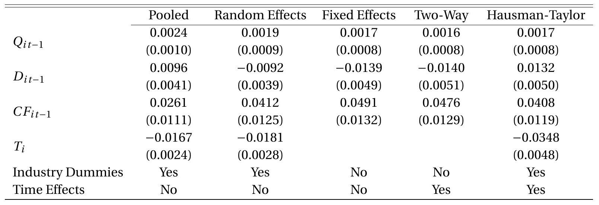
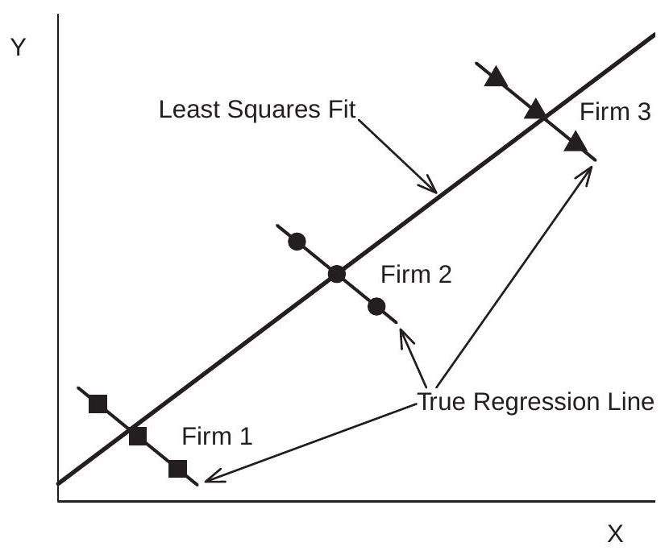
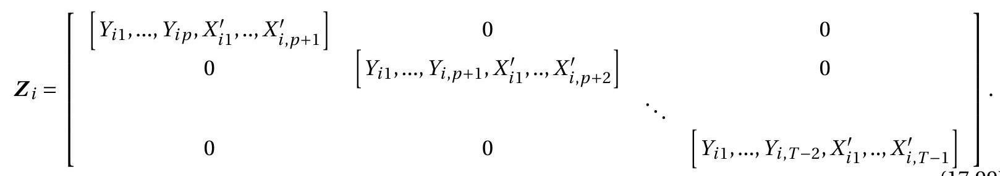
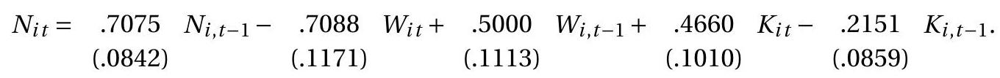

16 Panel Data
16.1 Introduction
Economists traditionally use the term panel data to refer to data structures consisting of observations on individuals for multiple time periods. Other fields such as statistics typically call this structure longitudinal data. The observed “individuals” can be, for example, people, households, workers, firms, schools, production plants, industries, regions, states, or countries. The distinguishing feature relative to cross-sectional data sets is the presence of multiple observations for each individual. More broadly, panel data methods can be applied to any context with cluster-type dependence.
There are several distinct advantages of panel data relative to cross-section data. One is the possibility of controlling for unobserved time-invariant endogeneity without the use of instrumental variables. A second is the possibility of allowing for broader forms of heterogeneity. A third is modeling dynamic relationships and effects.
There are two broad categories of panel data sets in economic applications: micro panels and macro panels. Micro panels are typically surveys or administrative records on individuals and are characterized by a large number of individuals (often in the 1000’s or higher) and a relatively small number of time periods (often 2 to 20 years). Macro panels are typically national or regional macroeconomic variables and are characterized by a moderate number of individuals (e.g. 7-20) and a moderate number of time periods (20-60 years).
Panel data was once relatively esoteric in applied economic practice. Now, it is a dominant feature of applied research.
A typical maintained assumption for micro panels (which we follow in this chapter) is that the individuals are mutually independent while the observations for a given individual are correlated across time periods. This means that the observations follow a clustered dependence structure. Because of this, current econometric practice is to use cluster-robust covariance matrix estimators when possible. Similar assumptions are often used for macro panels though the assumption of independence across individuals (e.g. countries) is much less compelling.
The application of panel data methods in econometrics started with the pioneering work of Mundlak (1961) and Balestra and Nerlove (1966).
Several excellent monographs and textbooks have been written on panel econometrics, including Arellano (2003), Hsiao (2003), Wooldridge (2010), and Baltagi (2013). This chapter will summarize some of the main themes but for a more in-depth treatment see these references.
One challenge arising in panel data applications is that the computational methods can require meticulous attention to detail. It is therefore advised to use established packages for routine applications. For most panel data applications in economics Stata is the standard package.
16.2 Time Indexing and Unbalanced Panels
It is typical to index observations by both the individual \(i\) and the time period \(t\), thus \(Y_{i t}\) denotes a variable for individual \(i\) in period \(t\). We index individuals as \(i=1, \ldots, N\) and time periods as \(t=1, \ldots T\). Thus \(N\) is the number of individuals in the panel and \(T\) is the number of time series periods.
Panel data sets can involve data at any time series frequency though the typical application involves annual data. The observations in a data set will be indexed by calendar time which for the case of annual observations is the year. For notational convenience it is customary to denote the time periods as \(t=\) \(1, \ldots, T\), so that \(t=1\) is the first time period observed and \(T\) is the final time period.
When observations are available on all individuals for the same time periods we say that the panel is balanced. In this case there are an equal number \(T\) of observations for each individual and the total number of observations is \(n=N T\).
When different time periods are available for the individuals in the sample we say that the panel is unbalanced. This is the most common type of panel data set. It does not pose a problem for applications but does make the notation cumbersome and also complicates computer programming.
To illustrate, consider the data set Invest 1993 on the textbook webpage. This is a sample of 1962 U.S. firms extracted from Compustat, assembled by Bronwyn Hall, and used in the empirical work in Hall and Hall (1993). In Table 17.1 we display a set of variables from the data set for the first 13 observations. The first variable is the firm code number. The second variable is the year of the observation. These two variables are essential for any panel data analysis. In Table \(17.1\) you can see that the first firm (#32) is observed for the years 1970 through 1977. The second firm (#209) is observed for 1987 through 1991. You can see that the years vary considerably across the firms so this is an unbalanced panel.
For unbalanced panels the time index \(t=1, \ldots, T\) denotes the full set of time periods. For example, in the data set Invest 1993 there are observations for the years 1960 through 1991, so the total number of time periods is \(T=32\). Each individual is observed for a subset of \(T_{i}\) periods. The set of time periods for individual \(i\) is denoted as \(S_{i}\) so that individual-specific sums (over time periods) are written as \(\sum_{t \in S_{i}}\).
The observed time periods for a given individual are typically contiguous (for example, in Table 17.1, firm #32 is observed for each year from 1970 through 1977) but in some cases are non-continguous (if, for example, 1973 was missing for firm #32). The total number of observations in the sample is \(n=\sum_{i=1}^{N} T_{i}\).
Table 17.1: Observations from Investment Data Set
| Firm Code Number | Year | \(I_{i t}\) | \(\bar{I}_{i}\) | \(\dot{I}_{i t}\) | \(Q_{i t}\) | \(\bar{Q}_{i}\) | \(\dot{Q}_{i t}\) | \(\widehat{e}_{i t}\) |
|---|---|---|---|---|---|---|---|---|
| 32 | 1970 | \(0.122\) | \(0.155\) | \(-0.033\) | \(1.17\) | \(0.62\) | \(0.55\) | . |
| 32 | 1971 | \(0.092\) | \(0.155\) | \(-0.063\) | \(0.79\) | \(0.62\) | \(0.17\) | \(-0.005\) |
| 32 | 1972 | \(0.094\) | \(0.155\) | \(-0.061\) | \(0.91\) | \(0.62\) | \(0.29\) | \(-0.005\) |
| 32 | 1973 | \(0.116\) | \(0.155\) | \(-0.039\) | \(0.29\) | \(0.62\) | \(-0.33\) | \(0.014\) |
| 32 | 1974 | \(0.099\) | \(0.155\) | \(-0.057\) | \(0.30\) | \(0.62\) | \(-0.32\) | \(-0.002\) |
| 32 | 1975 | \(0.187\) | \(0.155\) | \(0.032\) | \(0.56\) | \(0.62\) | \(-0.06\) | \(0.086\) |
| 32 | 1976 | \(0.349\) | \(0.155\) | \(0.194\) | \(0.38\) | \(0.62\) | \(-0.24\) | \(0.248\) |
| 32 | 1977 | \(0.182\) | \(0.155\) | \(0.027\) | \(0.57\) | \(0.62\) | \(-0.05\) | \(0.081\) |
| 209 | 1987 | \(0.095\) | \(0.071\) | \(0.024\) | \(9.06\) | \(21.57\) | \(-12.51\) | . |
| 209 | 1988 | \(0.044\) | \(0.071\) | \(-0.027\) | \(16.90\) | \(21.57\) | \(-4.67\) | \(-0.244\) |
| 209 | 1989 | \(0.069\) | \(0.071\) | \(-0.002\) | \(25.14\) | \(21.57\) | \(3.57\) | \(-0.257\) |
| 209 | 1990 | \(0.113\) | \(0.071\) | \(0.042\) | \(25.60\) | \(21.57\) | \(4.03\) | \(-0.226\) |
| 209 | 1991 | \(0.034\) | \(0.071\) | \(-0.037\) | \(31.14\) | \(21.57\) | \(9.57\) | \(-0.283\) |
16.3 Notation
This chapter focuses on panel data regression models whose observations are pairs \(\left(Y_{i t}, X_{i t}\right)\) where \(Y_{i t}\) is the dependent variable and \(X_{i t}\) is a \(k\)-vector of regressors. These are the observations on individual \(i\) for time period \(t\).
It will be useful to cluster the observations at the level of the individual. We borrow the notation from Section \(4.21\) to write \(\boldsymbol{Y}_{i}\) as the \(T_{i} \times 1\) stacked observations on \(Y_{i t}\) for \(t \in S_{i}\), stacked in chronological order. Similarly, we write \(\boldsymbol{X}_{i}\) as the \(T_{i} \times k\) matrix of stacked \(X_{i t}^{\prime}\) for \(t \in S_{i}\), stacked in chronological order.
We will also sometimes use matrix notation for the full sample. To do so, let \(\boldsymbol{Y}=\left(\boldsymbol{Y}_{1}^{\prime}, \ldots, \boldsymbol{Y}_{N}^{\prime}\right)^{\prime}\) denote the \(n \times 1\) vector of stacked \(\boldsymbol{Y}_{i}\), and set \(\boldsymbol{X}=\left(\boldsymbol{X}_{1}^{\prime}, \ldots, \boldsymbol{X}_{N}^{\prime}\right)^{\prime}\) similarly.
16.4 Pooled Regression
The simplest model in panel regresion is pooled regresssion
\[ \begin{aligned} Y_{i t} &=X_{i t}^{\prime} \beta+e_{i t} \\ \mathbb{E}\left[X_{i t} e_{i t}\right] &=0 . \end{aligned} \]
where \(\beta\) is a \(k \times 1\) coefficient vector and \(e_{i t}\) is an error. The model can be written at the level of the individual as
\[ \begin{aligned} \boldsymbol{Y}_{i} &=\boldsymbol{X}_{i} \beta+\boldsymbol{e}_{i} \\ \mathbb{E}\left[\boldsymbol{X}_{i}^{\prime} \boldsymbol{e}_{i}\right] &=0 \end{aligned} \]
where \(\boldsymbol{e}_{i}\) is \(T_{i} \times 1\). The equation for the full sample is \(\boldsymbol{Y}=\boldsymbol{X} \beta+\boldsymbol{e}\) where \(\boldsymbol{e}\) is \(n \times 1\).
The standard estimator of \(\beta\) in the pooled regression model is least squares, which can be written as
\[ \begin{aligned} \widehat{\beta}_{\text {pool }} &=\left(\sum_{i=1}^{N} \sum_{t \in S_{i}} X_{i t} X_{i t}^{\prime}\right)^{-1}\left(\sum_{i=1}^{N} \sum_{t \in S_{i}} X_{i t} Y_{i t}\right) \\ &=\left(\sum_{i=1}^{N} \boldsymbol{X}_{i}^{\prime} \boldsymbol{X}_{i}\right)^{-1}\left(\sum_{i=1}^{N} \boldsymbol{X}_{i}^{\prime} \boldsymbol{Y}_{i}\right) \\ &=\left(\boldsymbol{X}^{\prime} \boldsymbol{X}\right)^{-1}\left(\boldsymbol{X}^{\prime} \boldsymbol{Y}\right) . \end{aligned} \]
In the context of panel data \(\widehat{\beta}_{\text {pool }}\) is called the pooled regression estimator. The vector of residuals for the \(i^{t h}\) individual is \(\widehat{\boldsymbol{e}}_{i}=\boldsymbol{Y}_{i}-\boldsymbol{X}_{i} \widehat{\beta}_{\text {pool }}\).
The pooled regression model is ideally suited for the context where the errors \(e_{i t}\) satisfy strict mean independence:
\[ \mathbb{E}\left[e_{i t} \mid \boldsymbol{X}_{i}\right]=0 . \]
This occurs when the errors \(e_{i t}\) are mean independent of all regressors \(X_{i j}\) for all time periods \(j=1, \ldots, T\). Strict mean independence is stronger than pairwise mean independence \(\mathbb{E}\left[e_{i t} \mid X_{i t}\right]=0\) as well as projection (17.1). Strict mean independence requires that neither lagged nor future values of \(X_{i t}\) help to forecast \(e_{i t}\). It excludes lagged dependent variables (such as \(Y_{i t-1}\) ) from \(X_{i t}\) (otherwise \(e_{i t}\) would be predictable given \(X_{i t+1}\) ). It also requires that \(X_{i t}\) is exogenous in the sense discussed in Chapter 12.
We now describe some statistical properties of \(\widehat{\beta}_{\text {pool }}\) under (17.2). First, notice that by linearity and the cluster-level notation we can write the estimator as
\[ \widehat{\beta}_{\mathrm{pool}}=\left(\sum_{i=1}^{N} \boldsymbol{X}_{i}^{\prime} \boldsymbol{X}_{i}\right)^{-1}\left(\sum_{i=1}^{N} \boldsymbol{X}_{i}^{\prime}\left(\boldsymbol{X}_{i} \beta+\boldsymbol{e}_{i}\right)\right)=\beta+\left(\sum_{i=1}^{N} \boldsymbol{X}_{i}^{\prime} \boldsymbol{X}_{i}\right)^{-1}\left(\sum_{i=1}^{N} \boldsymbol{X}_{i}^{\prime} \boldsymbol{e}_{i}\right) . \]
Using (17.2)
\[ \mathbb{E}\left[\widehat{\beta}_{\text {pool }} \mid \boldsymbol{X}\right]=\beta+\left(\sum_{i=1}^{N} \boldsymbol{X}_{i}^{\prime} \boldsymbol{X}_{i}\right)^{-1}\left(\sum_{i=1}^{N} \boldsymbol{X}_{i}^{\prime} \mathbb{E}\left[\boldsymbol{e}_{i} \mid \boldsymbol{X}_{i}\right]\right)=\beta \]
so \(\widehat{\beta}_{\text {pool }}\) is unbiased for \(\beta\).
Under the additional assumption that the error \(e_{i t}\) is serially uncorrelated and homoskedastic the covariance estimator takes a classical form and the classical homoskedastic variance estimator can be used. If the error \(e_{i t}\) is heteroskedastic but serially uncorrelated then a heteroskedasticity-robust covariance matrix estimator can be used.
In general, however, we expect the errors \(e_{i t}\) to be correlated across time \(t\) for a given individual. This does not necessarily violate (17.2) but invalidates classical covariance matrix estimation. The conventional solution is to use a cluster-robust covariance matrix estimator which allows arbitrary withincluster dependence. Cluster-robust covariance matrix estimators for pooled regression equal
\[ \widehat{\boldsymbol{V}}_{\text {pool }}=\left(\boldsymbol{X}^{\prime} \boldsymbol{X}\right)^{-1}\left(\sum_{i=1}^{N} \boldsymbol{X}_{i}^{\prime} \widehat{\boldsymbol{e}}_{i} \widehat{\boldsymbol{e}}_{i}^{\prime} \boldsymbol{X}_{i}\right)\left(\boldsymbol{X}^{\prime} \boldsymbol{X}\right)^{-1} . \]
As in (4.55) this can be multiplied by a degree-of-freedom adjustment. The adjustment used by the Stata regress command is
\[ \widehat{\boldsymbol{V}}_{\text {pool }}=\left(\frac{n-1}{n-k}\right)\left(\frac{N}{N-1}\right)\left(\boldsymbol{X}^{\prime} \boldsymbol{X}\right)^{-1}\left(\sum_{i=1}^{N} \boldsymbol{X}_{i}^{\prime} \widehat{\boldsymbol{e}}_{i} \widehat{\boldsymbol{e}}_{i}^{\prime} \boldsymbol{X}_{i}\right)\left(\boldsymbol{X}^{\prime} \boldsymbol{X}\right)^{-1} \]
The pooled regression estimator with cluster-robust standard errors can be obtained using the Stata command regress cluster(id) where id indicates the individual.
When strict mean independence (17.2) fails the pooled least squares estimator \(\widehat{\beta}_{\text {pool }}\) is not necessarily consistent for \(\beta\). Since strict mean independence is a strong and undesirable restriction it is typically preferred to adopt one of the alternative estimators described in the following sections.
To illustrate the pooled regression estimator consider the data set Invest1993 described earlier. We consider a simple investment model
\[ I_{i t}=\beta_{1} Q_{i t-1}+\beta_{2} D_{i t-1}+\beta_{3} C F_{i t-1}+\beta_{4} T_{i}+e_{i t} \]
where \(I\) is investment/assets, \(Q\) is market value/assets, \(D\) is long term debt/assets, \(C F\) is cash flow/assets, and \(T\) is a dummy variable indicating if the corporation’s stock is traded on the NYSE or AMEX. The regression also includes 19 dummy variables indicating an industry code. The \(Q\) theory of investment suggests that \(\beta_{1}>0\) while \(\beta_{2}=\beta_{3}=0\). Theories of liquidity constraints suggest that \(\beta_{2}<0\) and \(\beta_{3}>0\). We will be using this example throughout this chapter. The values of \(I\) and \(Q\) for the first 13 observations are also displayed in Table 17.1.
In Table \(17.2\) we present the pooled regression estimates of (17.3) in the first column with clusterrobust standard errors.
16.5 One-Way Error Component Model
One approach to panel data regression is to model the correlation structure of the regression error \(e_{i t}\). The most common choice is an error-components structure. The simplest takes the form
\[ e_{i t}=u_{i}+\varepsilon_{i t} \]
Table 17.2: Estimates of Investment Equation

Cluster-robust standard errors in parenthesis.
where \(u_{i}\) is an individual-specific effect and \(\varepsilon_{i t}\) are idiosyncratic (i.i.d.) errors. This is known as a oneway error component model.
In vector notation we can write \(\boldsymbol{e}_{i}=\mathbf{1}_{i} u_{i}+\boldsymbol{\varepsilon}_{i}\) where \(\mathbf{1}_{i}\) is a \(T_{i} \times 1\) vector of 1’s.
The one-way error component regression model is
\[ Y_{i t}=X_{i t}^{\prime} \beta+u_{i}+\varepsilon_{i t} \]
written at the level of the observation, or \(\boldsymbol{Y}_{i}=\boldsymbol{X}_{i} \beta+\mathbf{1}_{i} u_{i}+\boldsymbol{\varepsilon}_{i}\) written at the level of the individual.
To illustrate why an error-component structure such as (17.4) might be appropriate, examine Table 17.1. In the final column we have included the pooled regression residuals \(\widehat{e}_{i t}\) for these observations. (There is no residual for the first year for each firm due to the lack of lagged regressors for this observation.) What is quite striking is that the residuals for the second firm (#209) are all negative, clustering around \(-0.25\). While informal, this suggests that it may be appropriate to model these errors using (17.4), expecting that firm #209 has a large negative value for its individual effect \(u\).
16.6 Random Effects
The random effects model assumes that the errors \(u_{i}\) and \(\varepsilon_{i t}\) in (17.4) are conditionally mean zero, uncorrelated, and homoskedastic.
Assumption 17.1 Random Effects. Model (17.4) holds with
\[ \begin{aligned} \mathbb{E}\left[\varepsilon_{i t} \mid \boldsymbol{X}_{i}\right] &=0 \\ \mathbb{E}\left[\varepsilon_{i t}^{2} \mid \boldsymbol{X}_{i}\right] &=\sigma_{\varepsilon}^{2} \\ \mathbb{E}\left[\varepsilon_{i t} \varepsilon_{j s} \mid \boldsymbol{X}_{i}\right] &=0 \\ \mathbb{E}\left[u_{i} \mid \boldsymbol{X}_{i}\right] &=0 \\ \mathbb{E}\left[u_{i}^{2} \mid \boldsymbol{X}_{i}\right] &=\sigma_{u}^{2} \\ \mathbb{E}\left[u_{i} \varepsilon_{i t} \mid \boldsymbol{X}_{i}\right] &=0 \end{aligned} \]
where (17.7) holds for all \(s \neq t\). Assumption \(17.1\) is known as a random effects specification. It implies that the vector of errors \(\boldsymbol{e}_{i}\) for individual \(i\) has the covariance structure
\[ \begin{aligned} \mathbb{E}\left[\boldsymbol{e}_{i} \mid \boldsymbol{X}_{i}\right] &=0 \\ \mathbb{E}\left[\boldsymbol{e}_{i} \boldsymbol{e}_{i}^{\prime} \mid \boldsymbol{X}_{i}\right] &=\mathbf{1}_{i} \mathbf{1}_{i}^{\prime} \sigma_{u}^{2}+\boldsymbol{I}_{i} \sigma_{\varepsilon}^{2} \\ &=\left(\begin{array}{cccc} \sigma_{u}^{2}+\sigma_{\varepsilon}^{2} & \sigma_{u}^{2} & \cdots & \sigma_{u}^{2} \\ \sigma_{u}^{2} & \sigma_{u}^{2}+\sigma_{\varepsilon}^{2} & \cdots & \sigma_{u}^{2} \\ \vdots & \vdots & \ddots & \vdots \\ \sigma_{u}^{2} & \sigma_{u}^{2} & \cdots & \sigma_{u}^{2}+\sigma_{\varepsilon}^{2} \end{array}\right) \\ &=\sigma_{\varepsilon}^{2} \Omega_{i}, \end{aligned} \]
say, where \(\boldsymbol{I}_{i}\) is an identity matrix of dimension \(T_{i}\). The matrix \(\Omega_{i}\) depends on \(i\) since its dimension depends on the number of observed time periods \(T_{i}\).
Assumptions 17.1.1 and 17.1.4 state that the idiosyncratic error \(\varepsilon_{i t}\) and individual-specific error \(u_{i}\) are strictly mean independent so the combined error \(e_{i t}\) is strictly mean independent as well.
The random effects model is equivalent to an equi-correlation model. That is, suppose that the error \(e_{i t}\) satisfies
\[ \begin{aligned} \mathbb{E}\left[e_{i t} \mid \boldsymbol{X}_{i}\right] &=0 \\ \mathbb{E}\left[e_{i t}^{2} \mid \boldsymbol{X}_{i}\right] &=\sigma^{2} \end{aligned} \]
and
\[ \mathbb{E}\left[e_{i s} e_{i t} \mid \boldsymbol{X}_{i}\right]=\rho \sigma^{2} \]
for \(s \neq t\). These conditions imply that \(e_{i t}\) can be written as (17.4) with the components satisfying Assumption \(17.1\) with \(\sigma_{u}^{2}=\rho \sigma^{2}\) and \(\sigma_{\varepsilon}^{2}=(1-\rho) \sigma^{2}\). Thus random effects and equi-correlation are identical.
The random effects regression model is
\[ Y_{i t}=X_{i t}^{\prime} \beta+u_{i}+\varepsilon_{i t} \]
or \(\boldsymbol{Y}_{i}=\boldsymbol{X}_{i} \beta+\mathbf{1}_{i} u_{i}+\boldsymbol{\varepsilon}_{i}\) where the errors satisfy Assumption 17.1.
Given the error structure the natural estimator for \(\beta\) is GLS. Suppose \(\sigma_{u}^{2}\) and \(\sigma_{\varepsilon}^{2}\) are known. The GLS estimator of \(\beta\) is
\[ \widehat{\beta}_{\mathrm{gls}}=\left(\sum_{i=1}^{N} \boldsymbol{X}_{i}^{\prime} \Omega_{i}^{-1} \boldsymbol{X}_{i}\right)^{-1}\left(\sum_{i=1}^{N} \boldsymbol{X}_{i}^{\prime} \Omega_{i}^{-1} \boldsymbol{Y}_{i}\right) . \]
A feasible GLS estimator replaces the unknown \(\sigma_{u}^{2}\) and \(\sigma_{\varepsilon}^{2}\) with estimators. See Section \(17.15\).
We now describe some statistical properties of the estimator under Assumption 17.1. By linearity
\[ \widehat{\beta}_{\mathrm{gls}}-\beta=\left(\sum_{i=1}^{N} \boldsymbol{X}_{i}^{\prime} \Omega_{i}^{-1} \boldsymbol{X}_{i}\right)^{-1}\left(\sum_{i=1}^{N} \boldsymbol{X}_{i}^{\prime} \Omega_{i}^{-1} \boldsymbol{e}_{i}\right) . \]
Thus
\[ \mathbb{E}\left[\widehat{\beta}_{\mathrm{gls}}-\beta \mid \boldsymbol{X}\right]=\left(\sum_{i=1}^{N} \boldsymbol{X}_{i}^{\prime} \Omega_{i}^{-1} \boldsymbol{X}_{i}\right)^{-1}\left(\sum_{i=1}^{N} \boldsymbol{X}_{i}^{\prime} \Omega_{i}^{-1} \mathbb{E}\left[\boldsymbol{e}_{i} \mid \boldsymbol{X}_{i}\right]\right)=0 . \]
Thus \(\widehat{\beta}_{\text {gls }}\) is conditionally unbiased for \(\beta\). The conditional variance of \(\widehat{\beta}_{\text {gls }}\) is
\[ \boldsymbol{V}_{\mathrm{gls}}=\left(\sum_{i=1}^{n} \boldsymbol{X}_{i}^{\prime} \Omega_{i}^{-1} \boldsymbol{X}_{i}\right)^{-1} \sigma_{\varepsilon}^{2} \]
Now let’s compare \(\widehat{\beta}_{\text {gls }}\) with the pooled estimator \(\widehat{\beta}_{\text {pool. }}\). Under Assumption \(17.1\) the latter is also conditionally unbiased for \(\beta\) and has conditional variance
\[ \boldsymbol{V}_{\text {pool }}=\left(\sum_{i=1}^{n} \boldsymbol{X}_{i}^{\prime} \boldsymbol{X}_{i}\right)^{-1}\left(\sum_{i=1}^{n} \boldsymbol{X}_{i}^{\prime} \Omega_{i} \boldsymbol{X}_{i}\right)^{-1}\left(\sum_{i=1}^{n} \boldsymbol{X}_{i}^{\prime} \boldsymbol{X}_{i}\right)^{-1} . \]
Using the algebra of the Gauss-Markov Theorem we deduce that
\[ \boldsymbol{V}_{\text {gls }} \leq \boldsymbol{V}_{\text {pool }} \]
and thus the random effects estimator \(\widehat{\beta}_{\text {gls }}\) is more efficient than the pooled estimator \(\widehat{\beta}_{\text {pool }}\) under Assumption 17.1. (See Exercise 17.1.) The two variance matrices are identical when there is no individualspecific effect (when \(\sigma_{u}^{2}=0\) ) for then \(\boldsymbol{V}_{\text {gls }}=\boldsymbol{V}_{\text {pool }}=\left(\boldsymbol{X}^{\prime} \boldsymbol{X}\right)^{-1} \sigma_{\varepsilon}^{2}\).
Under the assumption that the random effects model is a useful approximation but not literally true then we may consider a cluster-robust covariance matrix estimator such as
\[ \widehat{\boldsymbol{V}}_{\mathrm{gls}}=\left(\sum_{i=1}^{N} \boldsymbol{X}_{i}^{\prime} \Omega_{i}^{-1} \boldsymbol{X}_{i}\right)^{-1}\left(\sum_{i=1}^{N} \boldsymbol{X}_{i}^{\prime} \Omega_{i}^{-1} \widehat{\boldsymbol{e}}_{i} \widehat{\boldsymbol{e}}_{i}^{\prime} \Omega_{i}^{-1} \boldsymbol{X}_{i}\right)\left(\sum_{i=1}^{n} \boldsymbol{X}_{i}^{\prime} \Omega_{i}^{-1} \boldsymbol{X}_{i}\right)^{-1} \]
where \(\widehat{\boldsymbol{e}}_{i}=\boldsymbol{Y}_{i}-\boldsymbol{X}_{i} \widehat{\beta}_{\mathrm{gls}}\). This may be re-scaled by a degree of freedom adjustment if desired.
The random effects estimator \(\widehat{\beta}_{\text {gls }}\) can be obtained using the Stata command xtreg. The default covariance matrix estimator is (17.11). For the cluster-robust covariance matrix estimator (17.14) use the command xtreg vce(robust). (The xtset command must be used first to declare the group identifier. For example, cusip is the group identifier in Table 17.1.)
To illustrate, in the second column of Table \(17.2\) we present the random effect regression estimates of the investment model (17.3) with cluster-robust standard errors (17.14). The point estimates are reasonably different from the pooled regression estimator. The coefficient on debt switches from positive to negative (the latter consistent with theories of liquidity constraints) and the coefficient on cash flow increases significantly in magnitude. These changes appear to be greater in magnitude than would be expected if Assumption \(17.1\) were correct. In the next section we consider a less restrictive specification.
16.7 Fixed Effect Model
Consider the one-way error component regression model
\[ Y_{i t}=X_{i t}^{\prime} \beta+u_{i}+\varepsilon_{i t} \]
or
\[ \boldsymbol{Y}_{i}=\boldsymbol{X}_{i} \beta+\mathbf{l}_{i} u_{i}+\boldsymbol{\varepsilon}_{i} . \]
In many applications it is useful to interpret the individual-specific effect \(u_{i}\) as a time-invariant unobserved missing variable. For example, in a wage regression \(u_{i}\) may be the unobserved ability of individual \(i\). In the investment model (17.3) \(u_{i}\) may be a firm-specific productivity factor.
When \(u_{i}\) is interpreted as an omitted variable it is natural to expect it to be correlated with the regressors \(X_{i t}\). This is especially the case when \(X_{i t}\) includes choice variables.
To illustrate, consider the entries in Table 17.1. The final column displays the pooled regression residuals \(\widehat{e}_{i t}\) for the first 13 observations which we interpret as estimates of the error \(e_{i t}=u_{i}+\varepsilon_{i t}\). As described before, what is particularly striking about the residuals is that they are all strongly negative for firm #209, clustering around \(-0.25\). We can interpret this as an estimate of \(u_{i}\) for this firm. Examining the values of the regressor \(Q\) for the two firms we can see that firm #209 has very large values (in all time periods) for \(Q\). (The average value \(\bar{Q}_{i}\) for the two firms appears in the seventh column.) Thus it appears (though we are only looking at two observations) that \(u_{i}\) and \(Q_{i t}\) are correlated. It is not reasonable to infer too much from these limited observations, but the relevance is that such correlation violates strict mean independence.
In the econometrics literature if the stochastic structure of \(u_{i}\) is treated as unknown and possibly correlated with \(X_{i t}\) then \(u_{i}\) is called a fixed effect.
Correlation between \(u_{i}\) and \(X_{i t}\) will cause both pooled and random effect estimators to be biased. This is due to the classic problems of omitted variables bias and endogeneity. To see this in a generated example view Figure 17.1. This shows a scatter plot of three observations \(\left(Y_{i t}, X_{i t}\right)\) from three firms. The true model is \(Y_{i t}=9-X_{i t}+u_{i}\). (The true slope coefficient is \(-1\).) The variables \(u_{i}\) and \(X_{i t}\) are highly correlated so the fitted pooled regression line through the nine observations has a slope close to +1. (The random effects estimator is identical.) The apparent positive relationship between \(Y\) and \(X\) is driven entirely by the positive correlation between \(X\) and \(u\). Conditional on \(u\), however, the slope is \(-1\). Thus regression techniques which do not control for \(u_{i}\) will produce biased and inconsistent estimators.

Figure 17.1: Scatter Plot and Pooled Regression Line
The presence of the unstructured individual effect \(u_{i}\) means that it is not possible to identify \(\beta\) under a simple projection assumption such as \(\mathbb{E}\left[X_{i t} \varepsilon_{t}\right]=0\). It turns out that a sufficient condition for identification is the following. Definition 17.1 The regressor \(X_{i t}\) is strictly exogenous for the error \(\varepsilon_{i t}\) if
\[ \mathbb{E}\left[X_{i s} \varepsilon_{i t}\right]=0 \]
for all \(s=1, \ldots, T\).
Strict exogeneity is a strong projection condition, meaning that if \(X_{i s}\) for any \(s \neq t\) is added to (17.15) it will have a zero coefficient. Strict exogeneity is a projection analog of strict mean independence
\[ \mathbb{E}\left[\varepsilon_{i t} \mid \boldsymbol{X}_{i}\right]=0 . \]
(17.18) implies (17.17) but not conversely. While (17.17) is sufficient for identification and asymptotic theory we will also use the stronger condition (17.18) for finite sample analysis.
While (17.17) and (17.18) are strong assumptions they are much weaker than (17.2) or Assumption 17.1, which require that the individual effect \(u_{i}\) is also strictly mean independent. In contrast, (17.17) and (17.18) make no assumptions about \(u_{i}\).
Strict exogeneity (17.17) is typically inappropriate in dynamic models. In Section \(17.41\) we discuss estimation under the weaker assumption of predetermined regressors.
16.8 Within Transformation
In the previous section we showed that if \(u_{i}\) and \(X_{i t}\) are correlated then pooled and random-effects estimators will be biased and inconsistent. If we leave the relationship between \(u_{i}\) and \(X_{i t}\) fully unstructured then the only way to consistently estimate the coefficient \(\beta\) is by an estimator which is invariant to \(u_{i}\). This can be achieved by transformations which eliminate \(u_{i}\).
One such transformation is the within transformation. In this section we describe this transformation in detail.
Define the mean of a variable for a given individual as
\[ \bar{Y}_{i}=\frac{1}{T_{i}} \sum_{t \in S_{i}} Y_{i t} . \]
We call this the individual-specific mean since it is the mean of a given individual. Contrarywise, some authors call this the time-average or time-mean since it is the average over the time periods.
Subtracting the individual-specific mean from the variable we obtain the deviations
\[ \dot{Y}_{i t}=Y_{i t}-\bar{Y}_{i} . \]
This is known as the within transformation. We also refer to \(\dot{Y}_{i t}\) as the demeaned values or deviations from individual means. Some authors refer to \(\dot{Y}_{i t}\) as deviations from time means. What is important is that the demeaning has occured at the individual level.
Some algebra may also be useful. We can write the individual-specific mean as \(\bar{Y}_{i}=\left(\mathbf{1}_{i}^{\prime} \mathbf{1}_{i}\right)^{-1} \mathbf{1}_{i}^{\prime} \boldsymbol{Y}_{i}\). Stacking the observations for individual \(i\) we can write the within transformation using the notation
\[ \begin{aligned} \dot{\boldsymbol{Y}}_{i} &=\boldsymbol{Y}_{i}-\mathbf{1}_{i} \bar{Y}_{i} \\ &=\boldsymbol{Y}_{i}-\mathbf{1}_{i}\left(\mathbf{1}_{i}^{\prime} \mathbf{1}_{i}\right)^{-1} \mathbf{1}_{i}^{\prime} \boldsymbol{Y}_{i} \\ &=\boldsymbol{M}_{i} \boldsymbol{Y}_{i} \end{aligned} \]
where \(\boldsymbol{M}_{i}=\boldsymbol{I}_{i}-\mathbf{1}_{i}\left(\mathbf{1}_{i}^{\prime} \mathbf{1}_{i}\right)^{-1} \mathbf{1}_{i}^{\prime}\) is the individual-specific demeaning operator. Notice that \(\boldsymbol{M}_{i}\) is an idempotent matrix.
Similarly for the regressors we define the individual-specific means and demeaned values:
\[ \begin{aligned} \bar{X}_{i} &=\frac{1}{T_{i}} \sum_{t \in S_{i}} X_{i t} \\ \dot{X}_{i t} &=X_{i t}-\bar{X}_{i} \\ \dot{\boldsymbol{X}}_{i} &=\boldsymbol{M}_{i} \boldsymbol{X}_{i} . \end{aligned} \]
We illustrate demeaning in Table 17.1. In the fourth and seventh columns we display the firm-specific means \(\bar{I}_{i}\) and \(\bar{Q}_{i}\) and in the fifth and eighth columns the demeaned values \(\dot{I}_{i t}\) and \(\dot{Q}_{i t}\).
We can also define the full-sample within operator. Define \(\boldsymbol{D}=\operatorname{diag}\left\{\mathbf{1}_{T_{1}}, \ldots, \mathbf{1}_{T_{N}}\right\}\) and \(\boldsymbol{M}_{\boldsymbol{D}}=\boldsymbol{I}_{n}-\) \(\boldsymbol{D}\left(\boldsymbol{D}^{\prime} \boldsymbol{D}\right)^{-1} \boldsymbol{D}^{\prime}\). Note that \(\boldsymbol{M}_{\boldsymbol{D}}=\operatorname{diag}\left\{\boldsymbol{M}_{1}, \ldots, \boldsymbol{M}_{N}\right\}\). Thus
\[ \boldsymbol{M}_{\boldsymbol{D}} \boldsymbol{Y}=\dot{\boldsymbol{Y}}=\left(\begin{array}{c} \dot{\boldsymbol{Y}}_{1} \\ \vdots \\ \dot{\boldsymbol{Y}}_{N} \end{array}\right), \quad \boldsymbol{M}_{\boldsymbol{D}} \boldsymbol{X}=\dot{\boldsymbol{X}}=\left(\begin{array}{c} \dot{\boldsymbol{X}}_{1} \\ \vdots \\ \dot{\boldsymbol{X}}_{N} \end{array}\right) \]
Now apply these operations to equation (17.15). Taking individual-specific averages we obtain
\[ \bar{Y}_{i}=\bar{X}_{i}^{\prime} \beta+u_{i}+\bar{\varepsilon}_{i} \]
where \(\bar{\varepsilon}_{i}=\frac{1}{T_{i}} \sum_{t \in S_{i}} \varepsilon_{i t}\). Subtracting from (17.15) we obtain
\[ \dot{Y}_{i t}=\dot{X}_{i t}^{\prime} \beta+\dot{\varepsilon}_{i t} \]
where \(\dot{\varepsilon}_{i t}=\varepsilon_{i t}-\bar{\varepsilon}_{i t}\). The individual effect \(u_{i}\) has been eliminated! obtain
We can alternatively write this in vector notation. Applying the demeaning operator \(\boldsymbol{M}_{i}\) to (17.16) we
\[ \dot{\boldsymbol{Y}}_{i}=\dot{\boldsymbol{X}}_{i} \beta+\dot{\boldsymbol{\varepsilon}}_{i} . \]
The individual-effect \(u_{i}\) is eliminated because \(\boldsymbol{M}_{i} \mathbf{1}_{i}=0\). Equation (17.22) is a vector version of (17.21).
The equation (17.21) is a linear equation in the transformed (demeaned) variables. As desired the individual effect \(u_{i}\) has been eliminated. Consequently estimators constructed from (17.21) (or equivalently (17.22)) will be invariant to the values of \(u_{i}\). This means that the the endogeneity bias described in the previous section will be eliminated.
Another consequence, however, is that all time-invariant regressors are also eliminated. That is, if the original model (17.15) had included any regressors \(X_{i t}=X_{i}\) which are constant over time for each individual then for these regressors the demeaned values are identically 0 . What this means is that if equation (17.21) is used to estimate \(\beta\) it will be impossible to estimate (or identify) a coefficient on any regressor which is time invariant. This is not a consequence of the estimation method but rather a consequence of the model assumptions. In other words, if the individual effect \(u_{i}\) has no known structure then it is impossible to disentangle the effect of any time-invariant regressor \(X_{i}\). The two have observationally equivalent effects and cannot be separately identified.
The within transformation can greatly reduce the variance of the regressors. This can be seen in Table 17.1 where you can see that the variation between the elements of the transformed variables \(\dot{I}_{i t}\) and \(\dot{Q}_{i t}\) is less than that of the untransformed variables, as much of the variation is captured by the firm-specific means.
It is not typically needed to directly program the within transformation, but if it is desired the following Stata commands easily do so.
| Stata Commands for Within Transformation |
|---|
| \(* \quad \quad \mathrm{x}\) is the original variable |
| \(* \quad\) id is the group identifier |
| \(* \quad\) xdot is the within-transformed variable |
| egen xmean \(=\) mean \((\mathrm{x})\), by(id) gen xdot \(=\mathrm{x}-\mathrm{xmean}\) |
16.9 Fixed Effects Estimator
Consider least squares applied to the demeaned equation (17.21) or equivalently (17.22). This is
\[ \begin{aligned} \widehat{\beta}_{\mathrm{fe}} &=\left(\sum_{i=1}^{N} \sum_{t \in S_{i}} \dot{X}_{i t} \dot{X}_{i t}^{\prime}\right)^{-1}\left(\sum_{i=1}^{N} \sum_{t \in S_{i}} \dot{X}_{i t} \dot{Y}_{i t}\right) \\ &=\left(\sum_{i=1}^{N} \dot{\boldsymbol{X}}_{i}^{\prime} \dot{\boldsymbol{X}}_{i}\right)^{-1}\left(\sum_{i=1}^{N} \dot{\boldsymbol{X}}_{i}^{\prime} \dot{\boldsymbol{Y}}_{i}\right) \\ &=\left(\sum_{i=1}^{N} \boldsymbol{X}_{i}^{\prime} \boldsymbol{M}_{i} \boldsymbol{X}_{i}\right)^{-1}\left(\sum_{i=1}^{N} \boldsymbol{X}_{i}^{\prime} \boldsymbol{M}_{i} \boldsymbol{Y}_{i}\right) \end{aligned} \]
This is known as the fixed-effects or within estimator of \(\beta\). It is called the fixed-effects estimator because it is appropriate for the fixed effects model (17.15). It is called the within estimator because it is based on the variation of the data within each individual.
The above definition implicitly assumes that the matrix \(\sum_{i=1}^{N} \dot{\boldsymbol{X}}_{i}^{\prime} \dot{\boldsymbol{X}}_{i}\) is full rank. This requires that all components of \(X_{i t}\) have time variation for at least some individuals in the sample.
The fixed effects residuals are
\[ \begin{aligned} \widehat{\varepsilon}_{i t} &=\dot{Y}_{i t}-\dot{X}_{i t}^{\prime} \widehat{\beta}_{\mathrm{fe}} \\ \widehat{\boldsymbol{\varepsilon}}_{i} &=\dot{\boldsymbol{Y}}_{i}-\dot{\boldsymbol{X}}_{i} \widehat{\beta}_{\mathrm{fe}} \end{aligned} \]
Let us describe some of the statistical properties of the estimator under strict mean independence (17.18). By linearity and the fact \(\boldsymbol{M}_{i} \mathbf{1}_{i}=0\), we can write
\[ \widehat{\beta}_{\mathrm{fe}}-\beta=\left(\sum_{i=1}^{N} \boldsymbol{X}_{i}^{\prime} \boldsymbol{M}_{i} \boldsymbol{X}_{i}\right)^{-1}\left(\sum_{i=1}^{N} \boldsymbol{X}_{i}^{\prime} \boldsymbol{M}_{i} \boldsymbol{\varepsilon}_{i}\right) \]
Then (17.18) implies
\[ \mathbb{E}\left[\widehat{\beta}_{\mathrm{fe}}-\beta \mid \boldsymbol{X}\right]=\left(\sum_{i=1}^{N} \boldsymbol{X}_{i}^{\prime} \boldsymbol{M}_{i} \boldsymbol{X}_{i}\right)^{-1}\left(\sum_{i=1}^{N} \boldsymbol{X}_{i}^{\prime} \boldsymbol{M}_{i} \mathbb{E}\left[\boldsymbol{\varepsilon}_{i} \mid \boldsymbol{X}_{i}\right]\right)=0 \]
Thus \(\widehat{\beta}_{\mathrm{fe}}\) is unbiased for \(\beta\) under (17.18).
Let \(\Sigma_{i}=\mathbb{E}\left[\boldsymbol{\varepsilon}_{i} \boldsymbol{\varepsilon}_{i}^{\prime} \mid \boldsymbol{X}_{i}\right]\) denote the \(T_{i} \times T_{i}\) conditional covariance matrix of the idiosyncratic errors. The variance of \(\widehat{\beta}_{\mathrm{fe}}\) is
\[ \boldsymbol{V}_{\mathrm{fe}}=\operatorname{var}\left[\widehat{\beta}_{\mathrm{fe}} \mid \boldsymbol{X}\right]=\left(\sum_{i=1}^{N} \dot{\boldsymbol{X}}_{i}^{\prime} \dot{\boldsymbol{X}}_{i}\right)^{-1}\left(\sum_{i=1}^{N} \dot{\boldsymbol{X}}_{i}^{\prime} \Sigma_{i} \dot{\boldsymbol{X}}_{i}\right)\left(\sum_{i=1}^{N} \dot{\boldsymbol{X}}_{i}^{\prime} \dot{\boldsymbol{X}}_{i}\right)^{-1} \]
This expression simplifies when the idiosyncratic errors are homoskedastic and serially uncorrelated:
\[ \begin{aligned} \mathbb{E}\left[\varepsilon_{i t}^{2} \mid \boldsymbol{X}_{i}\right] &=\sigma_{\varepsilon}^{2} \\ \mathbb{E}\left[\varepsilon_{i j} \varepsilon_{i t} \mid \boldsymbol{X}_{i}\right] &=0 \end{aligned} \]
for all \(j \neq t\). In this case, \(\Sigma_{i}=\boldsymbol{I}_{i} \sigma_{\varepsilon}^{2}\) and (17.24) simplifies to
\[ \boldsymbol{V}_{\mathrm{fe}}^{0}=\sigma_{\varepsilon}^{2}\left(\sum_{i=1}^{N} \dot{\boldsymbol{X}}_{i}^{\prime} \dot{\boldsymbol{X}}_{i}\right)^{-1} . \]
It is instructive to compare the variances of the fixed-effects and pooled estimators under (17.25)(17.26) and the assumption that there is no individual-specific effect \(u_{i}=0\). In this case we see that
\[ \boldsymbol{V}_{\mathrm{fe}}^{0}=\sigma_{\varepsilon}^{2}\left(\sum_{i=1}^{N} \dot{\boldsymbol{X}}_{i}^{\prime} \dot{\boldsymbol{X}}_{i}\right)^{-1} \geq \sigma_{\varepsilon}^{2}\left(\sum_{i=1}^{N} \boldsymbol{X}_{i}^{\prime} \boldsymbol{X}_{i}\right)^{-1}=\boldsymbol{V}_{\text {pool }} \]
The inequality holds since the demeaned variables \(\dot{\boldsymbol{X}}_{i}\) have reduced variation relative to the original observations \(\boldsymbol{X}_{i}\). (See Exercise 17.28.) This shows the cost of using fixed effects relative to pooled estimation. The estimation variance increases due to reduced variation in the regressors. This reduction in efficiency is a necessary by-product of the robustness of the estimator to the individual effects \(u_{i}\).
16.10 Differenced Estimator
The within transformation is not the only transformation which eliminates the individual-specific effect. Another important transformation which does the same is first-differencing.
The first-differencing transformation is \(\Delta Y_{i t}=Y_{i t}-Y_{i t-1}\). This can be applied to all but the first observation (which is essentially lost). At the level of the individual this can be written as \(\Delta \boldsymbol{Y}_{i}=\boldsymbol{D}_{i} \boldsymbol{Y}_{i}\) where \(\boldsymbol{D}_{i}\) is the \(\left(T_{i}-1\right) \times T_{i}\) matrix differencing operator
\[ \boldsymbol{D}_{i}=\left[\begin{array}{cccccc} -1 & 1 & 0 & \cdots & 0 & 0 \\ 0 & -1 & 1 & & 0 & 0 \\ \vdots & & & \ddots & & \vdots \\ 0 & 0 & 0 & \cdots & -1 & 1 \end{array}\right] . \]
Applying the transformation \(\Delta\) to (17.15) or (17.16) we obtain \(\Delta Y_{i t}=\Delta X_{i t}^{\prime} \beta+\Delta \varepsilon_{i t}\) or
\[ \Delta \boldsymbol{Y}_{i}=\Delta \boldsymbol{X}_{i} \beta+\Delta \boldsymbol{\varepsilon}_{i} . \]
We can see that the individual effect \(u_{i}\) has been eliminated.
Least squares applied to the differenced equation (17.29) is
\[ \begin{aligned} \widehat{\beta}_{\Delta} &=\left(\sum_{i=1}^{N} \sum_{t \geq 2} \Delta X_{i t} \Delta X_{i t}^{\prime}\right)^{-1}\left(\sum_{i=1}^{N} \sum_{t \geq 2} \Delta X_{i t} \Delta Y_{i t}\right) \\ &=\left(\sum_{i=1}^{N} \Delta \boldsymbol{X}_{i}^{\prime} \Delta \boldsymbol{X}_{i}\right)^{-1}\left(\sum_{i=1}^{N} \Delta \boldsymbol{X}_{i}^{\prime} \Delta \boldsymbol{Y}_{i}\right) \\ &=\left(\sum_{i=1}^{N} \boldsymbol{X}_{i}^{\prime} \boldsymbol{D}_{i}^{\prime} \boldsymbol{D}_{i} \boldsymbol{X}_{i}\right)^{-1}\left(\sum_{i=1}^{N} \boldsymbol{X}_{i}^{\prime} \boldsymbol{D}_{i}^{\prime} \boldsymbol{D}_{i} \boldsymbol{Y}_{i}\right) \end{aligned} \]
(17.30) is called the differenced estimator. For \(T=2, \widehat{\beta}_{\Delta}=\widehat{\beta}_{\mathrm{fe}}\) equals the fixed effects estimator. See Exercise 17.6. They differ, however, for \(T>2\).
When the errors \(\varepsilon_{i t}\) are serially uncorrelated and homoskedastic then the error \(\Delta \boldsymbol{\varepsilon}_{i}=\boldsymbol{D}_{i} \boldsymbol{\varepsilon}_{i}\) in (17.29) has covariance matrix \(\boldsymbol{H} \sigma_{\varepsilon}^{2}\) where
\[ \boldsymbol{H}=\boldsymbol{D}_{i} \boldsymbol{D}_{i}^{\prime}=\left(\begin{array}{cccc} 2 & -1 & 0 & 0 \\ -1 & 2 & \ddots & 0 \\ 0 & \ddots & \ddots & -1 \\ 0 & 0 & -1 & 2 \end{array}\right) . \]
We can reduce estimation variance by using GLS. When the errors \(\varepsilon_{i t}\) are i.i.d. (serially uncorrelated and homoskedastic), this is
\[ \begin{aligned} \widetilde{\beta}_{\Delta} &=\left(\sum_{i=1}^{N} \Delta \boldsymbol{X}_{i}^{\prime} \boldsymbol{H}^{-1} \Delta \boldsymbol{X}_{i}\right)^{-1}\left(\sum_{i=1}^{N} \Delta \boldsymbol{X}_{i}^{\prime} \boldsymbol{H}^{-1} \Delta \boldsymbol{Y}_{i}\right) \\ &=\left(\sum_{i=1}^{N} \boldsymbol{X}_{i}^{\prime} \boldsymbol{D}_{i}^{\prime}\left(\boldsymbol{D}_{i} \boldsymbol{D}_{i}^{\prime}\right)^{-1} \boldsymbol{D}_{i} \boldsymbol{X}_{i}\right)^{-1}\left(\sum_{i=1}^{N} \boldsymbol{X}_{i}^{\prime} \boldsymbol{D}_{i}^{\prime}\left(\boldsymbol{D}_{i} \boldsymbol{D}_{i}^{\prime}\right)^{-1} \boldsymbol{D}_{i} \boldsymbol{Y}_{i}\right) \\ &=\left(\sum_{i=1}^{N} \boldsymbol{X}_{i}^{\prime} \boldsymbol{M}_{i} \boldsymbol{X}_{i}\right)^{-1}\left(\sum_{i=1}^{N} \boldsymbol{X}_{i}^{\prime} \boldsymbol{M}_{i} \boldsymbol{Y}_{i}\right) \end{aligned} \]
where \(\boldsymbol{M}_{i}=\boldsymbol{D}_{i}^{\prime}\left(\boldsymbol{D}_{i} \boldsymbol{D}_{i}^{\prime}\right)^{-1} \boldsymbol{D}_{i}\). Recall, the matrix \(\boldsymbol{D}_{i}\) is \(\left(T_{i}-1\right) \times T_{i}\) with rank \(T_{i}-1\) and is orthogonal to the vector of ones \(\mathbf{1}_{i}\). This means \(\boldsymbol{M}_{i}\) projects orthogonally to \(\mathbf{1}_{i}\) and thus equals the within transformation matrix. Hence \(\widetilde{\beta}_{\Delta}=\widehat{\beta}_{\mathrm{fe}}\), the fixed effects estimator!
What we have shown is that under i.i.d. errors, GLS applied to the first-differenced equation precisely equals the fixed effects estimator. Since the Gauss-Markov theorem shows that GLS has lower variance than least squares, this means that the fixed effects estimator is more efficient than first differencing under the assumption that \(\varepsilon_{i t}\) is i.i.d.
This argument extends to any other transformation which eliminates the fixed effect. GLS applied after such a transformation is equal to the fixed effects estimator and is more efficient than least squares applied after the same transformation under i.i.d. errors. This shows that the fixed effects estimator is Gauss-Markov efficient in the class of estimators which eliminate the fixed effect, under these assumptions.
16.11 Dummy Variables Regression
An alternative way to estimate the fixed effects model is by least squares of \(Y_{i t}\) on \(X_{i t}\) and a full set of dummy variables, one for each individual in the sample. It turns out that this is algebraically equivalent to the within estimator.
To see this start with the error-component model without a regressor:
\[ Y_{i t}=u_{i}+\varepsilon_{i t} . \]
Consider least squares estimation of the vector of fixed effects \(u=\left(u_{1}, \ldots, u_{N}\right)^{\prime}\). Since each fixed effect \(u_{i}\) is an individual-specific mean and the least squares estimate of the intercept is the sample mean it follows that the least squares estimate of \(u_{i}\) is \(\widehat{u}_{i}=\bar{Y}_{i}\). The least squares residual is then \(\widehat{\varepsilon}_{i t}=Y_{i t}-\bar{Y}_{i}=\) \(\dot{Y}_{i t}\), the within transformation. If you would prefer an algebraic argument, let \(d_{i}\) be a vector of \(N\) dummy variables where the \(i^{t h}\) element indicates the \(i^{t h}\) individual. Thus the \(i^{t h}\) element of \(d_{i}\) is 1 and the remaining elements are zero. Notice that \(u_{i}=d_{i}^{\prime} u\) and (17.32) equals \(Y_{i t}=d_{i}^{\prime} u+\varepsilon_{i t}\). This is a regression with the regressors \(d_{i}\) and coefficients \(u\). We can also write this in vector notation at the level of the individual as \(\boldsymbol{Y}_{i}=\mathbf{1}_{i} d_{i}^{\prime} u+\varepsilon_{i}\) or using full matrix notation as \(\boldsymbol{Y}=\boldsymbol{D} u+\boldsymbol{\varepsilon}\) where \(\boldsymbol{D}=\operatorname{diag}\left\{\mathbf{1}_{T_{1}}, \ldots, \mathbf{1}_{T_{N}}\right\}\).
The least squares estimate of \(u\) is
\[ \begin{aligned} \widehat{\boldsymbol{u}} &=\left(\boldsymbol{D}^{\prime} \boldsymbol{D}\right)^{-1}\left(\boldsymbol{D}^{\prime} \boldsymbol{Y}\right) \\ &=\operatorname{diag}\left(\mathbf{1}_{i}^{\prime} \mathbf{1}_{i}\right)^{-1}\left\{\mathbf{1}_{i}^{\prime} \boldsymbol{Y}_{i}\right\}_{i=1, \ldots, n} \\ &=\left\{\left(\mathbf{1}_{i}^{\prime} \mathbf{1}_{i}\right)^{-1} \mathbf{1}_{i}^{\prime} \boldsymbol{Y}_{i}\right\}_{i=1, \ldots, n} \\ &=\left\{\bar{Y}_{i}\right\}_{i=1, \ldots, n} . \end{aligned} \]
The least squares residuals are
\[ \widehat{\boldsymbol{\varepsilon}}=\left(\boldsymbol{I}_{n}-\boldsymbol{D}\left(\boldsymbol{D}^{\prime} \boldsymbol{D}\right)^{-1} \boldsymbol{D}^{\prime}\right) \boldsymbol{Y}=\dot{\boldsymbol{Y}} \]
as shown in (17.19). Thus the least squares residuals from the simple error-component model are the within transformed variables.
Now consider the error-component model with regressors, which can be written as
\[ Y_{i t}=X_{i t}^{\prime} \beta+d_{i}^{\prime} u+\varepsilon_{i t} \]
since \(u_{i}=d_{i}^{\prime} u\) as discussed above. In matrix notation
\[ \boldsymbol{Y}=\boldsymbol{X} \beta+\boldsymbol{D} u+\boldsymbol{\varepsilon} . \]
We consider estimation of \((\beta, u)\) by least squares and write the estimates as \(\boldsymbol{Y}=\boldsymbol{X} \widehat{\beta}+\boldsymbol{D} \widehat{u}+\widehat{\boldsymbol{\varepsilon}}\). We call this the dummy variable estimator of the fixed effects model.
By the Frisch-Waugh-Lovell Theorem (Theorem 3.5) the dummy variable estimator \(\widehat{\beta}\) and residuals \(\widehat{\boldsymbol{\varepsilon}}\) may be obtained by the least squares regression of the residuals from the regression of \(\boldsymbol{Y}\) on \(\boldsymbol{D}\) on the residuals from the regression of \(\boldsymbol{X}\) on \(\boldsymbol{D}\). We learned above that the residuals from the regression on \(\boldsymbol{D}\) are the within transformations. Thus the dummy variable estimator \(\widehat{\beta}\) and residuals \(\widehat{\boldsymbol{\varepsilon}}\) may be obtained from least squares regression of the within transformed \(\dot{Y}\) on the within transformed \(\dot{X}\). This is exactly the fixed effects estimator \(\widehat{\beta}_{\mathrm{fe}}\). Thus the dummy variable and fixed effects estimators of \(\beta\) are identical.
This is sufficiently important that we state this result as a theorem.
Theorem 17.1 The fixed effects estimator of \(\beta\) algebraically equals the dummy variable estimator of \(\beta\). The two estimators have the same residuals.
This may be the most important practical application of the Frisch-Waugh-Lovell Theorem. It shows that we can estimate the coefficients either by applying the within transformation or by inclusion of dummy variables (one for each individual in the sample). This is important because in some cases one approach is more convenient than the other and it is important to know that the two methods are algebraically equivalent.
When \(N\) is large it is advisable to use the within transformation rather than the dummy variable approach. This is because the latter requires considerably more computer memory. To see this consider the matrix \(\boldsymbol{D}\) in (17.34) in the balanced case. It has \(T N^{2}\) elements which must be created and stored in memory. When \(N\) is large this can be excessive. For example, if \(T=10\) and \(N=10,000\), the matrix \(\boldsymbol{D}\) has one billion elements! Whether or not a package can technically handle a matrix of this dimension depends on several particulars (system RAM, operating system, package version), but even if it can execute the calculation the computation time is slow. Hence for fixed effects estimation with large \(N\) it is recommended to use the within transformation rather than dummy variable regression.
The dummy variable formulation may add insight about how the fixed effects estimator achieves invariance to the fixed effects. Given the regression equation (17.34) we can write the least squares estimator of \(\beta\) using the residual regression formula:
\[ \begin{aligned} \widehat{\beta}_{\mathrm{fe}} &=\left(\boldsymbol{X}^{\prime} \boldsymbol{M}_{\boldsymbol{D}} \boldsymbol{X}\right)^{-1}\left(\boldsymbol{X}^{\prime} \boldsymbol{M}_{\boldsymbol{D}} \boldsymbol{Y}\right) \\ &=\left(\boldsymbol{X}^{\prime} \boldsymbol{M}_{\boldsymbol{D}} \boldsymbol{X}\right)^{-1}\left(\boldsymbol{X}^{\prime} \boldsymbol{M}_{\boldsymbol{D}}(\boldsymbol{X} \beta+\boldsymbol{D} u+\boldsymbol{\varepsilon})\right) \\ &=\beta+\left(\boldsymbol{X}^{\prime} \boldsymbol{M}_{\boldsymbol{D}} \boldsymbol{X}\right)^{-1}\left(\boldsymbol{X}^{\prime} \boldsymbol{M}_{\boldsymbol{D}} \boldsymbol{\varepsilon}\right) \end{aligned} \]
since \(\boldsymbol{M}_{\boldsymbol{D}} \boldsymbol{D}=0\). The expression (17.35) is free of the vector \(u\) and thus \(\widehat{\beta}_{\mathrm{fe}}\) is invariant to \(u\). This is another demonstration that the fixed effects estimator is invariant to the actual values of the fixed effects, and thus its statistical properties do not rely on assumptions about \(u_{i}\).
16.12 Fixed Effects Covariance Matrix Estimation
First consider estimation of the classical covariance matrix \(\boldsymbol{V}_{\mathrm{fe}}^{0}\) as defined in (17.27). This is
\[ \widehat{\boldsymbol{V}}_{\mathrm{fe}}^{0}=\widehat{\sigma}_{\varepsilon}^{2}\left(\dot{\boldsymbol{X}}^{\prime} \dot{\boldsymbol{X}}\right)^{-1} \]
with
\[ \widehat{\sigma}_{\varepsilon}^{2}=\frac{1}{n-N-k} \sum_{i=1}^{n} \sum_{t \in S_{i}} \widehat{\varepsilon}_{i t}^{2}=\frac{1}{n-N-k} \sum_{i=1}^{n} \widehat{\boldsymbol{\varepsilon}}_{i} \widehat{\boldsymbol{\varepsilon}}_{i} . \]
The \(N+k\) degree of freedom adjustment is motivated by the dummy variable representation. You can verify that \(\widehat{\sigma}_{\varepsilon}^{2}\) is unbiased for \(\sigma_{\varepsilon}^{2}\) under assumptions (17.18), (17.25) and (17.26). See Exercise 17.8.
Notice that the assumptions (17.18), (17.25), and (17.26) are identical to (17.5)-(17.7) of Assumption 17.1. The assumptions (17.8)-(17.10) are not needed. Thus the fixed effect model weakens the random effects model by eliminating the assumptions on \(u_{i}\) but retaining those on \(\varepsilon_{i t}\).
The classical covariance matrix estimator (17.36) for the fixed effects estimator is valid when the errors \(\varepsilon_{i t}\) are homoskedastic and serially uncorrelated but is invalid otherwise. A covariance matrix estimator which allows \(\varepsilon_{i t}\) to be heteroskedastic and serially correlated across \(t\) is the cluster-robust covariance matrix estimator, clustered by individual
\[ \widehat{\boldsymbol{V}}_{\mathrm{fe}}^{\text {cluster }}=\left(\dot{\boldsymbol{X}}^{\prime} \dot{\boldsymbol{X}}\right)^{-1}\left(\sum_{i=1}^{N} \dot{\boldsymbol{X}}_{i}^{\prime} \widehat{\boldsymbol{\varepsilon}}_{i} \widehat{\boldsymbol{\varepsilon}}_{i}^{\prime} \dot{\boldsymbol{X}}_{i}\right)\left(\dot{\boldsymbol{X}}^{\prime} \dot{\boldsymbol{X}}\right)^{-1} \]
where \(\widehat{\boldsymbol{\varepsilon}}_{i}\) as the fixed effects residuals as defined in (17.23). (17.38) was first proposed by Arellano (1987). As in (4.55) \(\widehat{V}_{\text {fe }}^{\text {cluster }}\) can be multiplied by a degree-of-freedom adjustment. The adjustment recommended by the theory of C. Hansen (2007) is
\[ \widehat{\boldsymbol{V}}_{\mathrm{fe}}^{\text {cluster }}=\left(\frac{N}{N-1}\right)\left(\dot{\boldsymbol{X}}^{\prime} \dot{\boldsymbol{X}}\right)^{-1}\left(\sum_{i=1}^{N} \dot{\boldsymbol{X}}_{i}^{\prime} \widehat{\boldsymbol{\varepsilon}}_{i} \widehat{\boldsymbol{\varepsilon}}_{i}^{\prime} \dot{\boldsymbol{X}}_{i}\right)\left(\dot{\boldsymbol{X}}^{\prime} \dot{\boldsymbol{X}}\right)^{-1} \]
and that corresponding to \((4.55)\) is
\[ \widehat{\boldsymbol{V}}_{\mathrm{fe}}^{\text {cluster }}=\left(\frac{n-1}{n-N-k}\right)\left(\frac{N}{N-1}\right)\left(\dot{\boldsymbol{X}}^{\prime} \dot{\boldsymbol{X}}\right)^{-1}\left(\sum_{i=1}^{N} \dot{\boldsymbol{X}}_{i}^{\prime} \widehat{\boldsymbol{\varepsilon}}_{i} \widehat{\boldsymbol{\varepsilon}}_{i}^{\prime} \dot{\boldsymbol{X}}_{i}\right)\left(\dot{\boldsymbol{X}}^{\prime} \dot{\boldsymbol{X}}\right)^{-1} \text {. } \]
These estimators are convenient because they are simple to apply and allow for unbalanced panels.
In typical micropanel applications \(N\) is very large and \(k\) is modest. Thus the adjustment in (17.39) is minor while that in (17.40) is approximately \(\bar{T} /(\bar{T}-1)\) where \(\bar{T}=n / N\) is the average number of time periods per individual. When \(\bar{T}\) is small this can be a very large adjustment. Hence the choice between (17.38), (17.39), and (17.40) can be substantial.
To understand if the degree of freedom adjustment in (17.40) is appropriate, consider the simplified setting where the residuals are constructed with the true \(\beta\) but estimated fixed effects \(u_{i}\). This is a useful approximation since the number of estimated slope coefficients \(\beta\) is small relative to the sample size \(n\). Then \(\widehat{\boldsymbol{\varepsilon}}_{i}=\dot{\boldsymbol{\varepsilon}}_{i}=\boldsymbol{M}_{i} \boldsymbol{\varepsilon}_{i}\) so \(\dot{\boldsymbol{X}}_{i}^{\prime} \widehat{\boldsymbol{\varepsilon}}_{i}=\dot{\boldsymbol{X}}_{i}^{\prime} \boldsymbol{\varepsilon}_{i}\) and (17.38) equals
\[ \widehat{\boldsymbol{V}}_{\mathrm{fe}}^{\text {cluster }}=\left(\dot{\boldsymbol{X}}^{\prime} \dot{\boldsymbol{X}}\right)^{-1}\left(\sum_{i=1}^{N} \dot{\boldsymbol{X}}_{i}^{\prime} \varepsilon_{i} \varepsilon_{i}^{\prime} \dot{\boldsymbol{X}}_{i}\right)\left(\dot{\boldsymbol{X}}^{\prime} \dot{\boldsymbol{X}}\right)^{-1} \]
which is the idealized estimator with the true errors rather than the residuals. Since \(\mathbb{E}\left[\varepsilon_{i} \varepsilon_{i}^{\prime} \mid \boldsymbol{X}_{i}\right]=\Sigma_{i}\) it follows that \(\mathbb{E}\left[\widehat{\boldsymbol{V}}_{\mathrm{fe}}^{\text {cluster }} \mid \boldsymbol{X}\right]=\boldsymbol{V}_{\mathrm{fe}}\) and \(\widehat{\boldsymbol{V}}_{\mathrm{fe}}^{\text {cluster }}\) is unbiased for \(\boldsymbol{V}_{\mathrm{fe}}\) ! Thus no degree of freedom adjustment is required. This is despite the fact that \(N\) fixed effects have been estimated. While this analysis concerns the idealized case where the residuals have been constructed with the true coefficients \(\beta\) so does not translate into a direct recommendation for the feasible estimator, it still suggests that the strong ad hoc adjustment in (17.40) is unwarranted.
This (crude) analysis suggests that for the cluster robust covariance estimator for fixed effects regression the adjustment recommended by C. Hansen (17.39) is the most appropriate. It is typically well approximated by the unadjusted estimator (17.38). Based on current theory there is no justification for the ad hoc adjustment (17.40). The main argument for the latter is that it produces the largest standard errors and is thus the most conservative choice.
In current practice the estimators (17.38) and (17.40) are the most commonly used covariance matrix estimators for fixed effects estimation.
In Sections \(17.22\) and \(17.23\) we discuss covariance matrix estimation under heteroskedasticity but no serial correlation.
To illustrate, in Table \(17.2\) we present the fixed effect regression estimates of the investment model (17.3) in the third column with cluster-robust standard errors. The trading indicator \(T_{i}\) and the industry dummies cannot be included as they are time-invariant. The point estimates are similar to the random effects estimates, though the coefficients on debt and cash flow increase in magnitude.
16.13 Fixed Effects Estimation in Stata
There are several methods to obtain the fixed effects estimator \(\widehat{\beta}_{\mathrm{fe}}\) in Stata.
The first method is dummy variable regression. This can be obtained by the Stata regress command, for example reg y \(\mathrm{x}\) , cluster(id) where id is the group (individual) identifier. In most cases, as discussed in Section 17.11, this is not recommended due to the excessive computer memory requirements and slow computation. If this command is done it may be useful to suppress display of the full list of coefficient estimates. To do so, type quietly reg y \(x\) , cluster(id) followed by estimates table, keep( \(x_{-}\)cons) be se. The second command will report the coefficient(s) on \(x\) only, not those on the index variable id. (Other statistics can be reported as well.) The second method is to manually create the within transformed variables as described in Section 17.8, and then use regress.
The third method is \(x t r e g ~ f e\) which is specifically written for panel data. This estimates the slope coefficients using the partialling-out approach. The default covariance matrix estimator is classical as defined in (17.36). The cluster-robust covariance matrix (17.38) can be obtained using the options vce(robust) or \(r\).
The fourth method is areg absorb (id). This command is an alternative implementation of partiallingout regression. The default covariance matrix estimator is the classical (17.36). The cluster-robust covariance matrix estimator (17.40) can be obtained using the cluster(id) option. The heteroskedasticityrobust covariance matrix is obtained when \(\mathrm{r}\) or \(\mathrm{v} c e\) (robust) is specified but this is not recommended unless \(T_{i}\) is large as will be discussed in Section \(17.22\).
An important difference between the Stata xtreg and areg commands is that they implement different cluster-robust covariance matrix estimators: (17.38) in the case of xtreg and (17.40) in the case of areg. As discussed in the previous section the adjustment used by areg is ad hoc and not well-justified but produces the largest and hence most conservative standard errors.
Another difference between the commands is how they report the equation \(R^{2}\). This difference can be huge and stems from the fact that they are estimating distinct population counter-parts. Full dummy variable regression and the areg command calculate \(R^{2}\) the same way: the squared correlation between \(Y_{i t}\) and the fitted regression with all predictors including the individual dummy variables. The \(x t r e g ~ f e\) command reports three values for \(R^{2}\) : within, between, and overall. The “within” \(R^{2}\) is identical to what is obtained from a second stage regression using the within transformed variables. (The second method described above.) The “overall” \(R^{2}\) is the squared correlation between \(Y_{i t}\) and the fitted regression excluding the individual effects.
Which \(R^{2}\) should be reported? The answer depends on the baseline model before regressors are added. If we view the baseline as an individual-specific mean, then the within calculation is appropriate. If the baseline is a single mean for all observations then the full regression (areg) calculation is appropriate. The latter (areg) calculation is typically much higher than the within calculation, as the fixed effects typically “explain” a large portion of the variance. In any event as there is not a single definition of \(R^{2}\) it is important to be explicit about the method if it is reported.
In current econometric practice both xtreg and areg are used, though areg appears to be the more popular choice. Since the latter typically produces a much higher value of \(R^{2}\), reported \(R^{2}\) values should be viewed skeptically unless their calculation method is documented by the author.
16.14 Between Estimator
The between estimator is calculated from the individual-mean equation (17.20)
\[ \bar{Y}_{i}=\bar{X}_{i}^{\prime} \beta+u_{i}+\bar{\varepsilon}_{i} . \]
Estimation can be done at the level of individuals or at the level of observations. Least squares applied to (17.41) at the level of the \(N\) individuals is
\[ \widehat{\beta}_{\mathrm{be}}=\left(\sum_{i=1}^{N} \bar{X}_{i} \bar{X}_{i}^{\prime}\right)^{-1}\left(\sum_{i=1}^{N} \bar{X}_{i} \bar{Y}_{i}\right) . \]
Least squares applied to (17.41) at the level of observations is
\[ \widetilde{\beta}_{\mathrm{be}}=\left(\sum_{i=1}^{N} \sum_{t \in S_{i}} \bar{X}_{i} \bar{X}_{i}^{\prime}\right)^{-1}\left(\sum_{i=1}^{N} \sum_{t \in S_{i}} \bar{X}_{i} \bar{Y}_{i}\right)=\left(\sum_{i=1}^{N} T_{i} \bar{X}_{i} \bar{X}_{i}^{\prime}\right)^{-1}\left(\sum_{i=1}^{N} T_{i} \bar{X}_{i} \bar{Y}_{i}\right) . \]
In balanced panels \(\widetilde{\beta}_{\mathrm{be}}=\widehat{\beta}_{\text {be }}\) but they differ on unbalanced panels. \(\widetilde{\beta}_{\mathrm{be}}\) equals weighted least squares applied at the level of individuals with weight \(T_{i}\).
Under the random effects assumptions (Assumption 17.1) \(\widehat{\beta}_{\text {be }}\) is unbiased for \(\beta\) and has variance
\[ \boldsymbol{V}_{\mathrm{be}}=\operatorname{var}\left[\widehat{\beta}_{\mathrm{be}} \mid \boldsymbol{X}\right]=\left(\sum_{i=1}^{N} \bar{X}_{i} \bar{X}_{i}^{\prime}\right)^{-1}\left(\sum_{i=1}^{N} \bar{X}_{i} \bar{X}_{i}^{\prime} \sigma_{i}^{2}\right)\left(\sum_{i=1}^{N} \bar{X}_{i} \bar{X}_{i}^{\prime}\right)^{-1} \]
where
\[ \sigma_{i}^{2}=\operatorname{var}\left[u_{i}+\bar{\varepsilon}_{i}\right]=\sigma_{u}^{2}+\frac{\sigma_{\varepsilon}^{2}}{T_{i}} \]
is the variance of the error in (17.41). When the panel is balanced the variance formula simplifies to
\[ \boldsymbol{V}_{\mathrm{be}}=\operatorname{var}\left[\widehat{\beta}_{\mathrm{be}} \mid \boldsymbol{X}\right]=\left(\sum_{i=1}^{N} \bar{X}_{i} \bar{X}_{i}^{\prime}\right)^{-1}\left(\sigma_{u}^{2}+\frac{\sigma_{\varepsilon}^{2}}{T}\right) . \]
Under the random effects assumption the between estimator \(\widehat{\beta}_{\text {be }}\) is unbiased for \(\beta\) but is less efficient than the random effects estimator \(\widehat{\beta}_{\text {gls }}\). Consequently there seems little direct use for the between estimator in linear panel data applications.
Instead, its primary application is to construct an estimate of \(\sigma_{u}^{2}\). First, consider estimation of
\[ \sigma_{b}^{2}=\frac{1}{N} \sum_{i=1}^{N} \sigma_{i}^{2}=\sigma_{u}^{2}+\frac{1}{N} \sum_{i=1}^{N} \frac{\sigma_{\varepsilon}^{2}}{T_{i}}=\sigma_{u}^{2}+\frac{\sigma_{\varepsilon}^{2}}{\bar{T}} \]
where \(\bar{T}=N / \sum_{i=1}^{N} T_{i}^{-1}\) is the harmonic mean of \(T_{i}\). (In the case of a balanced panel \(\bar{T}=T\).) A natural estimator of \(\sigma_{b}^{2}\) is
\[ \widehat{\sigma}_{b}^{2}=\frac{1}{N-k} \sum_{i=1}^{N} \widehat{e}_{b i}^{2} . \]
where \(\widehat{e}_{b i}=\bar{Y}_{i}-\bar{X}_{i}^{\prime} \widehat{\beta}_{\text {be }}\) are the between residuals. (Either \(\widehat{\beta}_{\text {be }}\) or \(\widetilde{\beta}_{\text {be }}\) can be used.)
From the relation \(\sigma_{b}^{2}=\sigma_{u}^{2}+\sigma_{\varepsilon}^{2} / \bar{T}\) and (17.42) we can deduce an estimator for \(\sigma_{u}^{2}\). We have already described an estimator \(\widehat{\sigma}_{\varepsilon}^{2}\) for \(\sigma_{\varepsilon}^{2}\) in (17.37) for the fixed effects model. Since the fixed effects model holds under weaker conditions than the random effects model, \(\widehat{\sigma}_{\varepsilon}^{2}\) is valid for the latter as well. This suggests the following estimator for \(\sigma_{u}^{2}\)
\[ \widehat{\sigma}_{u}^{2}=\widehat{\sigma}_{b}^{2}-\frac{\widehat{\sigma}_{\varepsilon}^{2}}{\bar{T}} . \]
To summarize, the fixed effect estimator is used for \(\widehat{\sigma}_{\varepsilon}^{2}\), the between estimator for \(\widehat{\sigma}_{b}^{2}\), and \(\widehat{\sigma}_{u}^{2}\) is constructed from the two.
It is possible for (17.43) to be negative. It is typical to use the constrained estimator
\[ \widehat{\sigma}_{u}^{2}=\max \left[0, \widehat{\sigma}_{b}^{2}-\frac{\widehat{\sigma}_{\varepsilon}^{2}}{\bar{T}}\right] . \]
(17.44) is the most common estimator for \(\sigma_{u}^{2}\) in the random effects model.
The between estimator \(\widehat{\beta}_{\text {be }}\) can be obtained using the Stata command xtreg be. The estimator \(\widetilde{\beta}_{\text {be }}\) can be obtained by xtreg be wls.
16.15 Feasible GLS
The random effects estimator can be written as
\[ \widehat{\beta}_{\mathrm{re}}=\left(\sum_{i=1}^{N} \boldsymbol{X}_{i}^{\prime} \Omega_{i}^{-1} \boldsymbol{X}_{i}\right)^{-1}\left(\sum_{i=1}^{N} \boldsymbol{X}_{i}^{\prime} \Omega_{i}^{-1} \boldsymbol{Y}_{i}\right)=\left(\sum_{i=1}^{N} \widetilde{\boldsymbol{X}}_{i}^{\prime} \widetilde{\boldsymbol{X}}_{i}\right)^{-1}\left(\sum_{i=1}^{N} \widetilde{\boldsymbol{X}}_{i}^{\prime} \widetilde{\boldsymbol{Y}}_{i}\right) \]
where \(\widetilde{\boldsymbol{X}}_{i}=\Omega_{i}^{-1 / 2} \boldsymbol{X}_{i}\) and \(\widetilde{\boldsymbol{Y}}_{i}=\Omega_{i}^{-1 / 2} \boldsymbol{Y}_{i}\). It is instructive to study these transformations.
Define \(\boldsymbol{P}_{i}=\mathbf{1}_{i}\left(\mathbf{1}_{i}^{\prime} \mathbf{1}_{i}\right)^{-1} \mathbf{1}_{i}^{\prime}\) so that \(\boldsymbol{M}_{i}=\boldsymbol{I}_{i}-\boldsymbol{P}_{i}\). Thus while \(\boldsymbol{M}_{i}\) is the within operator, \(\boldsymbol{P}_{i}\) can be called the individual-mean operator since \(\boldsymbol{P}_{i} \boldsymbol{Y}_{i}=\mathbf{1}_{i} \bar{Y}_{i}\). We can write
\[ \Omega_{i}=\boldsymbol{I}_{i}+\mathbf{1}_{i} \mathbf{1}_{i}^{\prime} \sigma_{u}^{2} / \sigma_{\varepsilon}^{2}=\boldsymbol{I}_{i}+\frac{T_{i} \sigma_{u}^{2}}{\sigma_{\varepsilon}^{2}} \boldsymbol{P}_{i}=\boldsymbol{M}_{i}+\rho_{i}^{-2} \boldsymbol{P}_{i} \]
where
\[ \rho_{i}=\frac{\sigma_{\varepsilon}}{\sqrt{\sigma_{\varepsilon}^{2}+T_{i} \sigma_{u}^{2}}} . \]
Since the matrices \(\boldsymbol{M}_{i}\) and \(\boldsymbol{P}_{i}\) are idempotent and orthogonal we find that \(\Omega_{i}^{-1}=\boldsymbol{M}_{i}+\rho_{i}^{2} \boldsymbol{P}_{i}\) and
\[ \Omega_{i}^{-1 / 2}=\boldsymbol{M}_{i}+\rho_{i} \boldsymbol{P}_{i}=\boldsymbol{I}_{i}-\left(1-\rho_{i}\right) \boldsymbol{P}_{i} . \]
Therefore the transformation used by the GLS estimator is
\[ \tilde{\boldsymbol{Y}}_{i}=\left(\boldsymbol{I}_{i}-\left(1-\rho_{i}\right) \boldsymbol{P}_{i}\right) \boldsymbol{Y}_{i}=\boldsymbol{Y}_{i}-\left(1-\rho_{i}\right) \mathbf{1}_{i} \bar{Y}_{i} \]
which is a partial within transformation.
The transformation as written depends on \(\rho_{i}\) which is unknown. It can be replaced by the estimator
\[ \widehat{\rho}_{i}=\frac{\widehat{\sigma}_{\varepsilon}}{\sqrt{\widehat{\sigma}_{\varepsilon}^{2}+T_{i} \widehat{\sigma}_{u}^{2}}} \]
where the estimators \(\widehat{\sigma}_{\varepsilon}^{2}\) and \(\widehat{\sigma}_{u}^{2}\) are given in (17.37) and (17.44). We obtain the feasible transformations
\[ \widetilde{\boldsymbol{Y}}_{i}=\boldsymbol{Y}_{i}-\left(1-\widehat{\rho}_{i}\right) \mathbf{1}_{i} \bar{Y}_{i} \]
and
\[ \widetilde{\boldsymbol{X}}_{i}=\boldsymbol{X}_{i}-\left(1-\widehat{\rho}_{i}\right) \mathbf{1}_{i} \bar{X}_{i}^{\prime} . \]
The feasible random effects estimator is (17.45) using (17.49) and (17.50).
In the previous section we noted that it is possible for \(\widehat{\sigma}_{u}^{2}=0\). In this case \(\widehat{\rho}_{i}=1\) and \(\widehat{\beta}_{\text {re }}=\widehat{\beta}_{\text {pool }}\).
What this shows is the following. The random effects estimator (17.45) is least squares applied to the transformed variables \(\widetilde{\boldsymbol{X}}_{i}\) and \(\widetilde{\boldsymbol{Y}}_{i}\) defined in (17.50) and (17.49). When \(\widehat{\rho}_{i}=0\) these are the within transformations, so \(\widetilde{\boldsymbol{X}}_{i}=\dot{\boldsymbol{X}}_{i}, \widetilde{\boldsymbol{Y}}_{i}=\dot{\boldsymbol{Y}}_{i}\), and \(\widehat{\beta}_{\mathrm{re}}=\widehat{\beta}_{\mathrm{fe}}\) is the fixed effects estimator. When \(\widehat{\rho}_{i}=1\) the data are untransformed \(\widetilde{\boldsymbol{X}}_{i}=\boldsymbol{X}_{i}, \widetilde{\boldsymbol{Y}}_{i}=\boldsymbol{Y}_{i}\), and \(\widehat{\beta}_{\mathrm{re}}=\widehat{\beta}_{\text {pool }}\) is the pooled estimator. In general, \(\widetilde{\boldsymbol{X}}_{i}\) and \(\widetilde{\boldsymbol{Y}}_{i}\) can be viewed as partial within transformations.
Recalling the definition \(\widehat{\rho}_{i}=\widehat{\sigma}_{\varepsilon} / \sqrt{\widehat{\sigma}_{\varepsilon}^{2}+T_{i} \widehat{\sigma}_{u}^{2}}\) we see that when the idiosyncratic error variance \(\widehat{\sigma}_{\varepsilon}^{2}\) is large relative to \(T_{i} \widehat{\sigma}_{u}^{2}\) then \(\widehat{\rho}_{i} \approx 1\) and \(\widehat{\beta}_{\text {re }} \approx \widehat{\beta}_{\text {pool. }}\). Thus when the variance estimates suggest that the individual effect is relatively small the random effect estimator simplifies to the pooled estimator. On the other hand when the individual effect error variance \(\widehat{\sigma}_{u}^{2}\) is large relative to \(\widehat{\sigma}_{\varepsilon}^{2}\) then \(\widehat{\rho}_{i} \approx 0\) and \(\widehat{\beta}_{\mathrm{re}} \approx \widehat{\beta}_{\mathrm{fe}}\). Thus when the variance estimates suggest that the individual effect is relatively large the random effect estimator is close to the fixed effects estimator.
16.16 Intercept in Fixed Effects Regression
The fixed effect estimator does not apply to any regressor which is time-invariant for all individuals. This includes an intercept. Yet some authors and packages (e.g. Amemiya (1971) and xtreg in Stata) report an intercept. To see how to construct an estimator of an intercept take the components regression equation adding an explicit intercept
\[ Y_{i t}=\alpha+X_{i t}^{\prime} \beta+u_{i}+\varepsilon_{i t} . \]
We have already discussed estimation of \(\beta\) by \(\widehat{\beta}_{\mathrm{fe}}\). Replacing \(\beta\) in this equation with \(\widehat{\beta}_{\mathrm{fe}}\) and then estimating \(\alpha\) by least squares, we obtain
\[ \widehat{\alpha}_{\mathrm{fe}}=\bar{Y}-\bar{X}^{\prime} \widehat{\beta}_{\mathrm{fe}} \]
where \(\bar{Y}\) and \(\bar{X}\) are averages from the full sample. This is the estimator reported by xtreg.
16.17 Estimation of Fixed Effects
For most applications researchers are interested in the coefficients \(\beta\) not the fixed effects \(u_{i}\). But in some cases the fixed effects themselves are interesting. This arises when we want to measure the distribution of \(u_{i}\) to understand its heterogeneity. It also arises in the context of prediction. As discussed in Section \(17.11\) the fixed effects estimate \(\widehat{u}\) is obtained by least squares applied to the regression (17.33). To find their solution, replace \(\beta\) in (17.33) with the least squares minimizer \(\widehat{\beta}_{\mathrm{fe}}\) and apply least squares. Since this is the individual-specific intercept the solution is
\[ \widehat{u}_{i}=\frac{1}{T_{i}} \sum_{t \in S_{i}}\left(Y_{i t}-X_{i t}^{\prime} \widehat{\beta}_{\mathrm{fe}}\right)=\bar{Y}_{i}-\bar{X}_{i}^{\prime} \widehat{\beta}_{\mathrm{fe}} . \]
Alternatively, using (17.34) this is
\[ \begin{aligned} \widehat{u} &=\left(\boldsymbol{D}^{\prime} \boldsymbol{D}\right)^{-1} \boldsymbol{D}^{\prime}\left(\boldsymbol{Y}-\boldsymbol{X} \widehat{\beta}_{\mathrm{fe}}\right) \\ &=\operatorname{diag}\left\{T_{i}^{-1}\right\} \sum_{i=1}^{N} d_{i} \mathbf{1}_{i}^{\prime}\left(\boldsymbol{Y}_{i}-\boldsymbol{X}_{i} \widehat{\beta}_{\mathrm{fe}}\right) \\ &=\sum_{i=1}^{N} d_{i}\left(\bar{Y}_{i}-\bar{X}_{i}^{\prime} \widehat{\beta}_{\mathrm{fe}}\right) \\ &=\left(\widehat{u}_{1}, \ldots, \widehat{u}_{N}\right)^{\prime} \end{aligned} \]
Thus the least squares estimates of the fixed effects can be obtained from the individual-specific means and does not require a regression with \(N+k\) regressors.
If an intercept has been estimated (as discussed in the previous section) it should be subtracted from (17.51). In this case the estimated fixed effects are
\[ \widehat{u}_{i}=\bar{Y}_{i}-\bar{X}_{i}^{\prime} \widehat{\beta}_{\mathrm{fe}}-\widehat{\alpha}_{\mathrm{fe}} \]
With either estimator when the number of time series observations \(T_{i}\) is small \(\widehat{u}_{i}\) will be an imprecise estimator of \(u_{i}\). Thus calculations based on \(\widehat{u}_{i}\) should be interpreted cautiously.
The fixed effects (17.52) may be obtained in Stata after ivreg, fe using the predict u command or after areg using the predict d command.
16.18 GMM Interpretation of Fixed Effects
We can also interpret the fixed effects estimator through the generalized method of moments.
Take the fixed effects model after applying the within transformation (17.21). We can view this as a system of \(T\) equations, one for each time period \(t\). This is a multivariate regression model. Using the notation of Chapter 11 define the \(T \times k T\) regressor matrix
\[ \overline{\boldsymbol{X}}_{i}=\left(\begin{array}{cccc} \dot{X}_{i 1}^{\prime} & 0 & \cdots & 0 \\ \vdots & \dot{X}_{i 2}^{\prime} & & \vdots \\ 0 & 0 & \cdots & \dot{X}_{i T}^{\prime} \end{array}\right) . \]
If we treat each time period as a separate equation we have the \(k T\) moment conditions
\[ \mathbb{E}\left[\overline{\boldsymbol{X}}_{i}^{\prime}\left(\dot{\boldsymbol{Y}}_{i}-\dot{\boldsymbol{X}}_{i} \beta\right)\right]=0 . \]
This is an overidentified system of equations when \(T \geq 3\) as there are \(k\) coefficients and \(k T\) moments. (However, the moments are collinear due to the within transformation. There are \(k(T-1)\) effective moments.) Interpreting this model in the context of multivariate regression, overidentification is achieved by the restriction that the coefficient vector \(\beta\) is constant across time periods.
This model can be interpreted as a regression of \(\dot{\boldsymbol{Y}}_{i}\) on \(\dot{\boldsymbol{X}}_{i}\) using the instruments \(\overline{\boldsymbol{X}}_{i}\). The 2SLS estimator using matrix notation is
\[ \widehat{\beta}=\left(\left(\dot{\boldsymbol{X}}^{\prime} \overline{\boldsymbol{X}}\right)\left(\overline{\boldsymbol{X}}^{\prime} \overline{\boldsymbol{X}}\right)^{-1}\left(\overline{\boldsymbol{X}}^{\prime} \dot{\boldsymbol{X}}\right)\right)^{-1}\left(\left(\dot{\boldsymbol{X}}^{\prime} \overline{\boldsymbol{X}}\right)\left(\overline{\boldsymbol{X}}^{\prime} \overline{\boldsymbol{X}}\right)^{-1}\left(\overline{\boldsymbol{X}}^{\prime} \dot{\boldsymbol{Y}}\right)\right) \]
Notice that
\[ \begin{aligned} & \overline{\boldsymbol{X}}^{\prime} \overline{\boldsymbol{X}}=\sum_{i=1}^{n}\left(\begin{array}{cccc}\dot{X}_{i 1} & 0 & \cdots & 0 \\\vdots & \dot{X}_{i 2} & & \vdots \\0 & 0 & \cdots & \dot{X}_{i T}\end{array}\right)\left(\begin{array}{cccc}\dot{X}_{i 1}^{\prime} & 0 & \cdots & 0 \\\vdots & \dot{X}_{i 2}^{\prime} & & \vdots \\0 & 0 & \cdots & \dot{X}_{i T}^{\prime}\end{array}\right) \\ & =\left(\begin{array}{cccc}\sum_{i=1}^{n} \dot{X}_{i 1} \dot{X}_{i 1}^{\prime} & 0 & \cdots & 0 \\\vdots & \sum_{i=1}^{n} \dot{X}_{i 2} \dot{X}_{i 2}^{\prime} & & \vdots \\0 & 0 & \cdots & \sum_{i=1}^{n} \dot{X}_{i T} \dot{X}_{i T}^{\prime}\end{array}\right) \text {, } \\ & \overline{\boldsymbol{X}}^{\prime} \dot{\boldsymbol{X}}=\left(\begin{array}{c}\sum_{i=1}^{n} \dot{X}_{i 1} \dot{X}_{i 1}^{\prime} \\\vdots \\\sum_{i=1}^{n} \dot{X}_{i T} \dot{X}_{i T}^{\prime}\end{array}\right) \text {, } \end{aligned} \]
and
\[ \overline{\boldsymbol{X}}^{\prime} \dot{\boldsymbol{Y}}=\left(\begin{array}{c} \sum_{i=1}^{n} \dot{X}_{i 1} \dot{Y}_{i 1} \\ \vdots \\ \sum_{i=1}^{n} \dot{X}_{i T} \dot{Y}_{i T} \end{array}\right) \text {. } \]
Thus the 2SLS estimator simplifies to
\[ \begin{aligned} \widehat{\beta}_{2 \mathrm{sls}} &=\left(\sum_{t=1}^{T}\left(\sum_{i=1}^{n} \dot{X}_{i t} \dot{X}_{i t}^{\prime}\right)\left(\sum_{i=1}^{n} \dot{X}_{i t} \dot{X}_{i t}^{\prime}\right)^{-1}\left(\sum_{i=1}^{n} \dot{X}_{i t} \dot{X}_{i t}^{\prime}\right)\right)^{-1} \\ & \times\left(\sum_{t=1}^{T}\left(\sum_{i=1}^{n} \dot{X}_{i t} \dot{X}_{i t}^{\prime}\right)\left(\sum_{i=1}^{n} \dot{X}_{i t} \dot{X}_{i t}^{\prime}\right)^{-1}\left(\sum_{i=1}^{n} \dot{X}_{i t} \dot{Y}_{i t}\right)\right) \\ &=\left(\sum_{t=1}^{T} \sum_{i=1}^{n} \dot{X}_{i t} \dot{X}_{i t}^{\prime}\right)^{-1}\left(\sum_{t=1}^{T} \sum_{i=1}^{n} \dot{X}_{i t} \dot{Y}_{i t}\right) \\ &=\widehat{\beta}_{\mathrm{fe}} \end{aligned} \]
the fixed effects estimator!
This shows that if we treat each time period as a separate equation with its separate moment equation so that the system is over-identified, and then estimate by GMM using the 2SLS weight matrix, the resulting GMM estimator equals the simple fixed effects estimator. There is no change by adding the additional moment conditions.
The 2SLS estimator is the appropriate GMM estimator when the equation error is serially uncorrelated and homoskedastic. If we use a two-step efficient weight matrix which allows for heteroskedasticity and serial correlation the GMM estimator is
\[ \begin{aligned} \widehat{\beta}_{\mathrm{gmm}} &=\left(\sum_{t=1}^{T}\left(\sum_{i=1}^{n} \dot{X}_{i t} \dot{X}_{i t}^{\prime}\right)\left(\sum_{i=1}^{n} \dot{X}_{i t} \dot{X}_{i t}^{\prime} \widehat{e}_{i t}^{2}\right)^{-1}\left(\sum_{i=1}^{n} \dot{X}_{i t} \dot{X}_{i t}^{\prime}\right)\right)^{-1} \\ & \times\left(\sum_{t=1}^{T}\left(\sum_{i=1}^{n} \dot{X}_{i t} \dot{X}_{i t}^{\prime}\right)\left(\sum_{i=1}^{n} \dot{X}_{i t} \dot{X}_{i t}^{\prime} \widehat{e}_{i t}^{2}\right)^{-1}\left(\sum_{i=1}^{n} \dot{X}_{i t} \dot{Y}_{i t}\right)\right) \end{aligned} \]
where \(\widehat{e}_{i t}\) are the fixed effects residuals.
Notationally, this GMM estimator has been written for a balanced panel. For an unbalanced panel the sums over \(i\) need to be replaced by sums over individuals observed during time period \(t\). Otherwise no changes need to be made.
16.19 Identification in the Fixed Effects Model
The identification of the slope coefficient \(\beta\) in fixed effects regression is similar to that in conventional regression but somewhat more nuanced.
It is most useful to consider the within-transformed equation, which can be written as \(\dot{Y}_{i t}=\dot{X}_{i t}^{\prime} \beta+\dot{\varepsilon}_{i t}\) or \(\dot{\boldsymbol{Y}}_{i}=\dot{\boldsymbol{X}}_{i} \beta+\dot{\boldsymbol{\varepsilon}}_{i}\)
From regression theory we know that the coefficient \(\beta\) is the linear effect of \(\dot{X}_{i t}\) on \(\dot{Y}_{i t}\). The variable \(\dot{X}_{i t}\) is the deviation of the regressor from its individual-specific mean and similarly for \(\dot{Y}_{i t}\). Thus the fixed effects model does not identify the effect of the average level of \(X_{i t}\) on the average level of \(Y_{i t}\), but rather the effect of the deviations in \(X_{i t}\) on \(Y_{i t}\).
In any given sample the fixed effects estimator is only defined if \(\sum_{i=1}^{N} \dot{\boldsymbol{X}}_{i}^{\prime} \dot{\boldsymbol{X}}_{i}\) is full rank. The population analog (when individuals are i.i.d.) is
\[ \mathbb{E}\left[\dot{\boldsymbol{X}}_{i}^{\prime} \dot{\boldsymbol{X}}_{i}\right]>0 . \]
Equation (17.54) is the identification condition for the fixed effects estimator. It requires that the regressor matrix is full-rank in expectation after application of the within transformation. The regressors cannot contain any variable which does not have time-variation at the individual level nor a set of regressors whose time-variation at the individual level is collinear.
16.20 Asymptotic Distribution of Fixed Effects Estimator
In this section we present an asymptotic distribution theory for the fixed effects estimator in balanced panels. Unbalanced panels are considered in the following section.
We use the following assumptions.
Assumption $17.2
\(Y_{i t}=X_{i t}^{\prime} \beta+u_{i}+\varepsilon_{i t}\) for \(i=1, \ldots, N\) and \(t=1, \ldots, T\) with \(T \geq 2\).
The variables \(\left(\boldsymbol{\varepsilon}_{i}, \boldsymbol{X}_{i}\right), i=1, \ldots, N\), are independent and identically distributed.
\(\mathbb{E}\left[X_{i s} \varepsilon_{i t}\right]=0\) for all \(s=1, \ldots, T\).
\(\boldsymbol{Q}_{T}=\mathbb{E}\left[\dot{\boldsymbol{X}}_{i}^{\prime} \dot{\boldsymbol{X}}_{i}\right]>0\).
\(\mathbb{E}\left[\varepsilon_{i t}^{4}\right]<\infty\).
\(\mathbb{E}\left\|X_{i t}\right\|^{4}<\infty\)
Given Assumption \(17.2\) we can establish asymptotic normality for \(\widehat{\beta}_{\mathrm{fe}}\).
Theorem 17.2 Under Assumption 17.2, as \(N \rightarrow \infty, \sqrt{N}\left(\widehat{\beta}_{\mathrm{fe}}-\beta\right) \underset{d}{\longrightarrow} \mathrm{N}\left(0, \boldsymbol{V}_{\boldsymbol{\beta}}\right)\) where \(\boldsymbol{V}_{\beta}=\boldsymbol{Q}_{T}^{-1} \Omega_{T} \boldsymbol{Q}_{T}^{-1}\) and \(\Omega_{T}=\mathbb{E}\left[\dot{\boldsymbol{X}}_{i}^{\prime} \boldsymbol{\varepsilon}_{i} \boldsymbol{\varepsilon}_{i}^{\prime} \dot{\boldsymbol{X}}_{i}\right]\).
This asymptotic distribution is derived as the number of individuals \(N\) diverges to infinity while the time number of time periods \(T\) is held fixed. Therefore the normalization is \(\sqrt{N}\) rather than \(\sqrt{n}\) (though either could be used since \(T\) is fixed). This approximation is appropriate for the context of a large number of individuals. We could alternatively derive an approximation for the case where both \(N\) and \(T\) diverge to infinity but this would not be a stronger result. One way of thinking about this is that Theorem \(17.2\) does not require \(T\) to be large.
Theorem \(17.2\) may appear standard given our arsenal of asymptotic theory but in a fundamental sense it is quite different from any other result we have introduced. Fixed effects regression is effectively estimating \(N+k\) coefficients - the \(k\) slope coefficients \(\beta\) plus the \(N\) fixed effects \(u\) - and the theory specifies that \(N \rightarrow \infty\). Thus the number of estimated parameters is diverging to infinity at the same rate as sample size yet the the estimator obtains a conventional mean-zero sandwich-form asymptotic distribution. In this sense Theorem \(17.2\) is new and special.
We now discuss the assumptions.
Assumption 17.2.2 states that the observations are independent across individuals \(i\). This is commonly used for panel data asymptotic theory. An important implied restriction is that it means that we exclude from the regressors any serially correlated aggregate time series variation. Assumption 17.2.3 imposes that \(X_{i t}\) is strictly exogeneous for \(\varepsilon_{i t}\). This is stronger than simple projection but is weaker than strict mean independence (17.18). It does not impose any condition on the individual-specific effects \(u_{i}\).
Assumption 17.2.4 is the identification condition discussed in the previous section.
Assumptions 17.2.5 and 17.2.6 are needed for the central limit theorem.
We now prove Theorem 17.2. The assumptions imply that the variables \(\left(\dot{\boldsymbol{X}}_{i}, \boldsymbol{\varepsilon}_{i}\right)\) are i.i.d. across \(i\) and have finite fourth moments. Thus by the WLLN
\[ \frac{1}{N} \sum_{i=1}^{N} \dot{\boldsymbol{X}}_{i}^{\prime} \dot{\boldsymbol{X}}_{i} \underset{p}{\longrightarrow} \mathbb{E}\left[\dot{\boldsymbol{X}}_{i}^{\prime} \dot{\boldsymbol{X}}_{i}\right]=\boldsymbol{Q}_{T} . \]
Assumption 17.2.3 implies
\[ \mathbb{E}\left[\dot{\boldsymbol{X}}_{i}^{\prime} \boldsymbol{\varepsilon}_{i}\right]=\sum_{t=1}^{T} \mathbb{E}\left[\dot{X}_{i t} \varepsilon_{i t}\right]=\sum_{t=1}^{T} \mathbb{E}\left[X_{i t} \varepsilon_{i t}\right]-\sum_{t=1}^{T} \sum_{j=1}^{T} \mathbb{E}\left[X_{i j} \varepsilon_{i t}\right]=0 \]
so they are mean zero. Assumptions 17.2.5 and 17.2.6 imply that \(\dot{\boldsymbol{X}}_{i}^{\prime} \boldsymbol{\varepsilon}_{i}\) has a finite covariance matrix \(\Omega_{T}\). The assumptions for the CLT (Theorem 6.3) hold, thus
\[ \frac{1}{\sqrt{N}} \sum_{i=1}^{N} \dot{\boldsymbol{X}}_{i}^{\prime} \varepsilon_{i} \underset{d}{\longrightarrow} \mathrm{N}\left(0, \Omega_{T}\right) \]
Together we find
\[ \sqrt{N}\left(\widehat{\beta}_{\mathrm{fe}}-\beta\right)=\left(\frac{1}{N} \sum_{i=1}^{N} \dot{\boldsymbol{X}}_{i}^{\prime} \dot{\boldsymbol{X}}_{i}\right)^{-1}\left(\frac{1}{\sqrt{N}} \sum_{i=1}^{N} \dot{\boldsymbol{X}}_{i}^{\prime} \boldsymbol{\varepsilon}_{i}\right) \underset{d}{\longrightarrow} \boldsymbol{Q}_{T}^{-1} \mathrm{~N}\left(0, \Omega_{T}\right)=\mathrm{N}\left(0, \boldsymbol{V}_{\beta}\right) \]
as stated.
16.21 Asymptotic Distribution for Unbalanced Panels
In this section we extend the theory of the previous section to cover unbalanced panels under random selection. Our presentation is built on Section \(17.1\) of Wooldridge (2010).
Think of an unbalanced panel as a shortened version of an idealized balanced panel where the shortening is due to “missing” observations due to random selection. Thus suppose that the underlying (potentially latent) variables are \(\boldsymbol{Y}_{i}=\left(Y_{i 1}, \ldots, Y_{i T}\right)^{\prime}\) and \(\boldsymbol{X}_{i}=\left(X_{i 1}, \ldots, X_{i T}\right)^{\prime}\). Let \(\boldsymbol{s}_{i}=\left(s_{i 1}, \ldots, s_{i T}\right)^{\prime}\) be a vector of selection indicators, meaning that \(s_{i t}=1\) if the time period \(t\) is observed for individual \(i\) and \(s_{i t}=0\) otherwise. Then we can describe the estimators algebraically as follows.
Let \(\boldsymbol{S}_{i}=\operatorname{diag}\left(\boldsymbol{s}_{i}\right)\) and \(\boldsymbol{M}_{i}=\boldsymbol{S}_{i}-\boldsymbol{s}_{i}\left(\boldsymbol{s}_{i}^{\prime} \boldsymbol{s}_{i}\right)^{-1} \boldsymbol{s}_{i}^{\prime}\), which is idempotent. The within transformations can be written as \(\dot{\boldsymbol{Y}}_{i}=\boldsymbol{M}_{i} \boldsymbol{Y}_{i}\) and \(\dot{\boldsymbol{X}}_{i}=\boldsymbol{M}_{i} \boldsymbol{X}_{i}\). They have the property that if \(s_{i t}=0\) (so that time period \(t\) is missing) then the \(t^{t h}\) element of \(\dot{\boldsymbol{Y}}_{i}\) and the \(t^{t h}\) row of \(\dot{\boldsymbol{X}}_{i}\) are all zeros. The missing observations have been replaced by zeros. Consequently, they do not appear in matrix products and sums.
The fixed effects estimator of \(\beta\) based on the observed sample is
\[ \widehat{\beta}_{\mathrm{fe}}=\left(\sum_{i=1}^{N} \dot{\boldsymbol{X}}_{i}^{\prime} \dot{\boldsymbol{X}}_{i}\right)^{-1}\left(\sum_{i=1}^{N} \dot{\boldsymbol{X}}_{i}^{\prime} \dot{\boldsymbol{Y}}_{i}\right) . \]
Centered and normalized,
\[ \sqrt{N}\left(\widehat{\beta}_{\mathrm{fe}}-\beta\right)=\left(\frac{1}{N} \sum_{i=1}^{N} \dot{\boldsymbol{X}}_{i}^{\prime} \dot{\boldsymbol{X}}_{i}\right)^{-1}\left(\frac{1}{\sqrt{N}} \sum_{i=1}^{N} \dot{\boldsymbol{X}}_{i}^{\prime} \varepsilon_{i}\right) \]
Notationally this appears to be identical to the case of a balanced panel but the difference is that the within operator \(\boldsymbol{M}_{i}\) incorporates the sample selection induced by the unbalanced panel structure.
To derive a distribution theory for \(\widehat{\beta}_{\text {fe we }}\) need to be explicit about the stochastic nature of \(\boldsymbol{s}_{i}\). That is, why are some time periods observed and some not? We could take several approaches:
We could treat \(s_{i}\) as fixed (non-random). This is the easiest approach but the most unsatisfactory.
We could treat \(s_{i}\) as random but independent of \(\left(\boldsymbol{Y}_{i}, \boldsymbol{X}_{i}\right)\). This is known as “missing at random” and is a common assumption used to justify methods with missing observations. It is justified when the reason why observations are not observed is independent of the observations. This is appropriate, for example, in panel data sets where individuals enter and exit in “waves”. The statistical treatment is not substantially different from the case of fixed \(s_{i}\).
We could treat \(\left(\boldsymbol{Y}_{i}, \boldsymbol{X}_{i}, \boldsymbol{s}_{i}\right)\) as jointly random but impose a condition sufficient for consistent estimation of \(\beta\). This is the approach we take below. The condition turns out to be a form of mean independence. The advantage of this approach is that it is less restrictive than full independence. The disadvantage is that we must use a conditional mean restriction rather than uncorrelatedness to identify the coefficients.
The specific assumptions we impose are as follows.
Assumption 17.3
\(Y_{i t}=X_{i t}^{\prime} \beta+u_{i}+\varepsilon_{i t}\) for \(i=1, \ldots, N\) with \(T_{i} \geq 2\).
The variables \(\left(\boldsymbol{\varepsilon}_{i}, \boldsymbol{X}_{i}, \boldsymbol{s}_{i}\right), i=1, \ldots, N\), are independent and identically distributed.
\(\mathbb{E}\left[\varepsilon_{i t} \mid \boldsymbol{X}_{i}, s_{i}\right]=0\).
\(\boldsymbol{Q}_{T}=\mathbb{E}\left[\dot{\boldsymbol{X}}_{i}^{\prime} \dot{\boldsymbol{X}}_{i}\right]>0\).
\(\mathbb{E}\left[\varepsilon_{i t}^{4}\right]<\infty\).
\(\mathbb{E}\left\|X_{i t}\right\|^{4}<\infty\).
The primary difference with Assumption \(17.2\) is that we have strengthened strict exogeneity to strict mean independence. This imposes that the regression model is properly specified and that selection does not affect the mean of \(\varepsilon_{i t}\). It is less restrictive than full independence since \(\boldsymbol{s}_{i}\) can affect other moments of \(\varepsilon_{i t}\) and more importantly does not restrict the joint dependence between \(\boldsymbol{s}_{i}\) and \(\boldsymbol{X}_{i}\).
Given the above development it is straightforward to establish asymptotic normality.
Theorem 17.3 Under Assumption 17.3, as \(N \rightarrow \infty, \sqrt{N}\left(\widehat{\beta}_{\mathrm{fe}}-\beta\right) \underset{d}{\longrightarrow} \mathrm{N}\left(0, \boldsymbol{V}_{\beta}\right)\) where \(\boldsymbol{V}_{\beta}=\boldsymbol{Q}_{T}^{-1} \Omega_{T} \boldsymbol{Q}_{T}^{-1}\) and \(\Omega_{T}=\mathbb{E}\left[\dot{\boldsymbol{X}}_{i}^{\prime} \boldsymbol{\varepsilon}_{i} \boldsymbol{\varepsilon}_{i}^{\prime} \dot{\boldsymbol{X}}_{i}\right]\). We now prove Theorem 17.3. The assumptions imply that the variables \(\left(\dot{\boldsymbol{X}}_{i}, \boldsymbol{\varepsilon}_{i}\right)\) are i.i.d. across \(i\) and have finite fourth moments. By the WLLN
\[ \frac{1}{N} \sum_{i=1}^{N} \dot{\boldsymbol{X}}_{i}^{\prime} \dot{\boldsymbol{X}}_{i} \underset{p}{\longrightarrow} \mathbb{E}\left[\dot{\boldsymbol{X}}_{i}^{\prime} \dot{\boldsymbol{X}}_{i}\right]=\boldsymbol{Q}_{T} . \]
The random vectors \(\dot{\boldsymbol{X}}_{i}^{\prime} \boldsymbol{\varepsilon}_{i}\) are i.i.d. The matrix \(\dot{\boldsymbol{X}}_{i}\) is a function of \(\left(\boldsymbol{X}_{i}, \boldsymbol{s}_{i}\right)\) only. Assumption 17.3.3 and the law of iterated expectations implies
\[ \mathbb{E}\left[\dot{\boldsymbol{X}}_{i}^{\prime} \boldsymbol{\varepsilon}_{i}\right]=\mathbb{E}\left[\dot{\boldsymbol{X}}_{i}^{\prime} \mathbb{E}\left[\boldsymbol{\varepsilon}_{i} \mid \boldsymbol{X}_{i}, \boldsymbol{s}_{i}\right]\right]=0 . \]
so that \(\dot{\boldsymbol{X}}_{i}^{\prime} \varepsilon_{i}\) is mean zero. Assumptions 17.3.5 and 17.3.6 and the fact that \(\boldsymbol{s}_{i}\) is bounded implies that \(\dot{\boldsymbol{X}}_{i}^{\prime} \varepsilon_{i}\) has a finite covariance matrix, which is \(\Omega_{T}\). The assumptions for the CLT hold, thus
\[ \frac{1}{\sqrt{N}} \sum_{i=1}^{N} \dot{\boldsymbol{X}}_{i}^{\prime} \varepsilon_{i} \underset{d}{\longrightarrow} \mathrm{N}\left(0, \Omega_{T}\right) \]
Together we obtain the stated result.
16.22 Heteroskedasticity-Robust Covariance Matrix Estimation
We have introduced two covariance matrix estimators for the fixed effects estimator. The classical estimator (17.36) is appropriate for the case where the idiosyncratic errors \(\varepsilon_{i t}\) are homoskedastic and serially uncorrelated. The cluster-robust estimator (17.38) allows for heteroskedasticity and arbitrary serial correlation. In this and the following section we consider the intermediate case where \(\varepsilon_{i t}\) is heteroskedastic but serially uncorrelated.
Assume that (17.18) and (17.26) hold but not necessarily (17.25). Define the conditional variances
\[ \mathbb{E}\left[\varepsilon_{i t}^{2} \mid \boldsymbol{X}_{i}\right]=\sigma_{i t}^{2} . \]
Then \(\Sigma_{i}=\mathbb{E}\left[\boldsymbol{\varepsilon}_{i} \boldsymbol{\varepsilon}_{i}^{\prime} \mid \boldsymbol{X}_{i}\right]=\operatorname{diag}\left(\sigma_{i t}^{2}\right)\). The covariance matrix (17.24) can be written as
\[ \boldsymbol{V}_{\mathrm{fe}}=\left(\dot{\boldsymbol{X}}^{\prime} \dot{\boldsymbol{X}}\right)^{-1}\left(\sum_{i=1}^{N} \sum_{t \in S_{i}} \dot{X}_{i t} \dot{X}_{i t}^{\prime} \sigma_{i t}^{2}\right)\left(\dot{\boldsymbol{X}}^{\prime} \dot{\boldsymbol{X}}\right)^{-1} \]
A natural estimator of \(\sigma_{i t}^{2}\) is \(\widehat{\varepsilon}_{i t}^{2}\). Replacing \(\sigma_{i t}^{2}\) with \(\widehat{\varepsilon}_{i t}^{2}\) in (17.56) and making a degree-of-freedom adjustment we obtain a White-type covariance matrix estimator
\[ \widehat{\boldsymbol{V}}_{\mathrm{fe}}=\frac{n}{n-N-k}\left(\dot{\boldsymbol{X}}^{\prime} \dot{\boldsymbol{X}}\right)^{-1}\left(\sum_{i=1}^{N} \sum_{t \in S_{i}} \dot{X}_{i t} \dot{X}_{i t}^{\prime} \widehat{\varepsilon}_{i t}^{2}\right)\left(\dot{\boldsymbol{X}}^{\prime} \dot{\boldsymbol{X}}\right)^{-1} . \]
Following the insight of White (1980) it may seem appropriate to expect \(\widehat{\boldsymbol{V}}_{\text {fe }}\) to be a reasonable estimator of \(\boldsymbol{V}_{\text {fe. }}\). Unfortunately this is not the case as discovered by Stock and Watson (2008). The problem is that \(\widehat{\boldsymbol{V}}_{\mathrm{fe}}\) is a function of the individual-specific means \(\bar{\varepsilon}_{i}\) which are negligible only if the number of time series observations \(T_{i}\) are large.
We can see this by a simple bias calculation. Assume that the sample is balanced and that the residuals are constructed with the true \(\beta\). Then
\[ \widehat{\varepsilon}_{i t}=\dot{\varepsilon}_{i t}=\varepsilon_{i t}-\frac{1}{T} \sum_{t=1}^{T} \varepsilon_{i j} . \]
Using (17.26) and (17.55)
\[ \mathbb{E}\left[\widehat{\varepsilon}_{i t}^{2} \mid \boldsymbol{X}_{i}\right]=\left(\frac{T-2}{T}\right) \sigma_{i t}^{2}+\frac{\bar{\sigma}_{i}^{2}}{T} \]
where \(\bar{\sigma}_{i}^{2}=T^{-1} \sum_{t=1}^{T} \sigma_{i t}^{2}\). (See Exercise 17.10.) Using (17.57) and setting \(k=0\) we obtain
\[ \begin{aligned} \mathbb{E}\left[\widehat{\boldsymbol{V}}_{\mathrm{fe}} \mid \boldsymbol{X}\right] &=\frac{T}{T-1}\left(\dot{\boldsymbol{X}}^{\prime} \dot{\boldsymbol{X}}\right)^{-1}\left(\sum_{i=1}^{N} \sum_{t \in S_{i}} \dot{X}_{i t} \dot{X}_{i t}^{\prime} \mathbb{E}\left[\widehat{\varepsilon}_{i t}^{2} \mid \boldsymbol{X}_{i}\right]\right)\left(\dot{\boldsymbol{X}}^{\prime} \dot{\boldsymbol{X}}\right)^{-1} \\ &=\left(\frac{T-2}{T-1}\right) \boldsymbol{V}_{\mathrm{fe}}+\frac{1}{T-1}\left(\dot{\boldsymbol{X}}^{\prime} \dot{\boldsymbol{X}}\right)^{-1}\left(\sum_{i=1}^{N} \dot{\boldsymbol{X}}_{i}^{\prime} \dot{\boldsymbol{X}}_{i} \bar{\sigma}_{i}^{2}\right)\left(\dot{\boldsymbol{X}}^{\prime} \dot{\boldsymbol{X}}\right)^{-1} . \end{aligned} \]
Thus \(\widehat{\boldsymbol{V}}_{\mathrm{fe}}\) is biased of order \(O\left(T^{-1}\right)\). Unless \(T \rightarrow \infty\) this bias will persist as \(N \rightarrow \infty . \widehat{\boldsymbol{V}}_{\mathrm{fe}}\) is unbiased in two contexts. The first is when the errors \(\varepsilon_{i t}\) are homoskedastic. The second is when \(T=2\). (To show the latter requires some algebra so is omitted.)
To correct the bias for the case \(T>2\), Stock and Watson (2008) proposed the estimator
\[ \begin{aligned} \widetilde{\boldsymbol{V}}_{\mathrm{fe}} &=\left(\frac{T-1}{T-2}\right) \widehat{\boldsymbol{V}}_{\mathrm{fe}}-\frac{1}{T-1} \widehat{\boldsymbol{B}}_{\mathrm{fe}} \\ \widehat{\boldsymbol{B}}_{\mathrm{fe}} &=\left(\dot{\boldsymbol{X}}^{\prime} \dot{\boldsymbol{X}}\right)^{-1}\left(\sum_{i=1}^{N} \dot{\boldsymbol{X}}_{i}^{\prime} \dot{\boldsymbol{X}}_{i} \widehat{\sigma}_{i}^{2}\right)\left(\dot{\boldsymbol{X}}^{\prime} \dot{\boldsymbol{X}}\right)^{-1} \\ \widehat{\sigma}_{i}^{2} &=\frac{1}{T-1} \sum_{t=1}^{T} \widehat{\varepsilon}_{i t}^{2} . \end{aligned} \]
You can check that \(\mathbb{E}\left[\widehat{\sigma}_{i}^{2} \mid \boldsymbol{X}_{i}\right]=\bar{\sigma}_{i}^{2}\) and \(\mathbb{E}\left[\widetilde{\boldsymbol{V}}_{\text {fe }} \mid \boldsymbol{X}_{i}\right]=\boldsymbol{V}_{\text {fe }}\) so \(\widetilde{\boldsymbol{V}}_{\text {fe }}\) is unbiased for \(\boldsymbol{V}_{\text {fe }}\). (See Exercise 17.11.)
Stock and Watson (2008) show that \(\widetilde{\boldsymbol{V}}_{\text {fe }}\) is consistent with \(T\) fixed and \(N \rightarrow \infty\). In simulations they show that \(\widetilde{\boldsymbol{V}}_{\mathrm{fe}}\) has excellent performance.
Because of the Stock-Watson analysis Stata no longer calculates the heteroskedasticity-robust covariance matrix estimator \(\widehat{\boldsymbol{V}}_{\mathrm{fe}}\) when the fixed effects estimator is calculated using the xtreg command. Instead, the cluster-robust estimator \(\widehat{\boldsymbol{V}}_{\mathrm{fe}}^{\text {cluster }}\) is reported when robust standard errors are requested. However, fixed effects is often implemented using the areg command which reports the biased estimator \(\widehat{\boldsymbol{V}}_{\mathrm{fe}}\) if robust standard errors are requested. These leads to the practical recommendation that areg should be used with the cluster(id) option.
At present the corrected estimator (17.58) has not been programmed as a Stata option.
16.23 Heteroskedasticity-Robust Estimation - Unbalanced Case
A limitation with the bias-corrected robust covariance matrix estimator of Stock and Watson (2008) is that it was only derived for balanced panels. In this section we generalize their estimator to cover unbalanced panels.
The estimator is
\[ \begin{aligned} &\widetilde{\boldsymbol{V}}_{\mathrm{fe}}=\left(\dot{\boldsymbol{X}}^{\prime} \dot{\boldsymbol{X}}\right)^{-1} \widetilde{\Omega}_{\mathrm{fe}}\left(\dot{\boldsymbol{X}}^{\prime} \dot{\boldsymbol{X}}\right)^{-1} \\ &\widetilde{\Omega}_{\mathrm{fe}}=\sum_{i=1}^{N} \sum_{t \in S_{i}} \dot{X}_{i t} \dot{X}_{i t}^{\prime}\left[\left(\frac{T_{i} \widehat{\varepsilon}_{i t}^{2}-\widehat{\sigma}_{i}^{2}}{T_{i}-2}\right) \mathbb{1}\left\{T_{i}>2\right\}+\left(\frac{T_{i} \widehat{\varepsilon}_{i t}^{2}}{T_{i}-1}\right) \mathbb{1}\left\{T_{i}=2\right\}\right] \end{aligned} \]
where
\[ \widehat{\sigma}_{i}^{2}=\frac{1}{T_{i}-1} \sum_{t \in S_{i}} \widehat{\varepsilon}_{i t}^{2} . \]
To justify this estimator, as in the previous section make the simplifying assumption that the residuals are constructed with the true \(\beta\). We calculate that
\[ \begin{aligned} &\mathbb{E}\left[\widehat{\varepsilon}_{i t}^{2} \mid \boldsymbol{X}_{i}\right]=\left(\frac{T_{i}-2}{T_{i}}\right) \sigma_{i t}^{2}+\frac{\bar{\sigma}_{i}^{2}}{T_{i}} \\ &\mathbb{E}\left[\widehat{\sigma}_{i}^{2} \mid \boldsymbol{X}_{i}\right]=\bar{\sigma}_{i}^{2} . \end{aligned} \]
You can show that under these assumptions, \(\mathbb{E}\left[\widetilde{\boldsymbol{V}}_{\mathrm{fe}} \mid \boldsymbol{X}\right]=\boldsymbol{V}_{\mathrm{fe}}\) and thus \(\widetilde{\boldsymbol{V}}_{\mathrm{fe}}\) is unbiased for \(\boldsymbol{V}_{\mathrm{fe}}\). (See Exercise 17.12.)
In balanced panels the estimator \(\widetilde{\boldsymbol{V}}_{\mathrm{fe}}\) simplifies to the Stock-Watson estimator (with \(k=0\) ).
16.24 Hausman Test for Random vs Fixed Effects
The random effects model is a special case of the fixed effects model. Thus we can test the null hypothesis of random effects against the alternative of fixed effects. The Hausman test is typically used for this purpose. The statistic is a quadratic in the difference between the fixed effects and random effects estimators. The statistic is
\[ \begin{aligned} H &=\left(\widehat{\beta}_{\mathrm{fe}}-\widehat{\beta}_{\mathrm{re}}\right)^{\prime} \widehat{\operatorname{var}}\left[\widehat{\beta}_{\mathrm{fe}}-\widehat{\beta}_{\mathrm{re}}\right]^{-1}\left(\widehat{\beta}_{\mathrm{fe}}-\widehat{\beta}_{\mathrm{re}}\right) \\ &=\left(\widehat{\beta}_{\mathrm{fe}}-\widehat{\beta}_{\mathrm{re}}\right)^{\prime}\left(\widehat{\boldsymbol{V}}_{\mathrm{fe}}-\widehat{\boldsymbol{V}}_{\mathrm{re}}\right)^{-1}\left(\widehat{\beta}_{\mathrm{fe}}-\widehat{\beta}_{\mathrm{re}}\right) \end{aligned} \]
where both \(\widehat{\boldsymbol{V}}_{\mathrm{fe}}\) and \(\widehat{\boldsymbol{V}}_{\mathrm{re}}\) take the classical (non-robust) form.
The test can be implemented on a subset of the coefficients \(\beta\). In particular this needs to be done if the regressors \(X_{i t}\) contain time-invariant elements so that the random effects estimator contains more coefficients than the fixed effects estimator. In this case the test should be implemented only on the coefficients on the time-varying regressors.
An asymptotic \(100 \alpha %\) test rejects if \(H\) exceeds the \(1-\alpha^{t h}\) quantile of the \(\chi_{k}^{2}\) distribution where \(k=\) \(\operatorname{dim}(\beta)\). If the test rejects this is evidence that the individual effect \(u_{i}\) is correlated with the regressors so the random effects model is not appropriate. On the other hand if the test fails to reject this evidence says that the random effects hypothesis cannot be rejected.
It is tempting to use the Hausman test to select whether to use the fixed effects or random effects estimator. One could imagine using the random effects estimator if the Hausman test fails to reject the random effects hypothesis and using the fixed effects estimator otherwise. This is not, however, a wise approach. This procedure - selecting an estimator based on a test - is known as a pretest estimator and is biased. The bias arises because the result of the test is random and correlated with the estimators.
Instead, the Hausman test can be used as a specification test. If you are planning to use the random effects estimator (and believe that the random effects assumptions are appropriate in your context) the Hausman test can be used to check this assumption and provide evidence to support your approach.
16.25 Random Effects or Fixed Effects?
We have presented the random effects and fixed effects estimators of the regression coefficients. Which should be used in practice? How should we view the difference?
The basic distinction is that the random effects estimator requires the individual error \(u_{i}\) to satisfy the conditional mean assumption (17.8). The fixed effects estimator does not require (17.8) and is robust to its violation. In particular, the individual effect \(u_{i}\) can be arbitrarily correlated with the regressors. On the other hand the random effects estimator is efficient under random effects (Assumption 17.1). Current econometric practice is to prefer robustness over efficiency. Consequently, current practice is (nearly uniformly) to use the fixed effects estimator for linear panel data models. Random effects estimators are only used in contexts where fixed effects estimation is unknown or challenging (which occurs in many nonlinear models).
The labels “random effects” and “fixed effects” are misleading. These are labels which arose in the early literature and we are stuck with these labels today. In a previous era regressors were viewed as “fixed”. Viewing the individual effect as an unobserved regressor leads to the label of the individual effect as “fixed”. Today, we rarely refer to regressors as “fixed” when dealing with observational data. We view all variables as random. Consequently describing \(u_{i}\) as “fixed” does not make much sense and it is hardly a contrast with the “random effect” label since under either assumption \(u_{i}\) is treated as random. Once again, the labels are unfortunate but the key difference is whether \(u_{i}\) is correlated with the regressors.
16.26 Time Trends
In general we expect that economic agents will experience common shocks during the same time period. For example, business cycle fluctations, inflation, and interest rates affect all agents in the economy. Therefore it is often desirable to include time effects in a panel regression model.
The simplest specification is a linear time trend
\[ Y_{i t}=X_{i t}^{\prime} \beta+\gamma t+u_{i}+\varepsilon_{i t} . \]
For a introduction to time trends see Section 14.42. More flexible specifications (such as a quadratic) can also be used. For estimation it is appropriate to include the time trend \(t\) as an element of the regressor vector \(X_{i t}\) and then apply fixed effects.
In some cases the time trends may be individual-specific. Series may be growing or declining at different rates. A linear time trend specification only extracts a common time trend. To allow for individualspecific time trends we need to include an interaction effect. This can be written as
\[ Y_{i t}=X_{i t}^{\prime} \beta+\gamma_{i} t+u_{i}+\varepsilon_{i t} . \]
In a fixed effects specification the coefficients \(\left(\gamma_{i}, u_{i}\right)\) are treated as possibly correlated with the regressors. To eliminate them from the model we treat them as unknown parameters and estimate all by least squares. By the FWL theorem the estimator for \(\beta\) equals least squares of \(\dot{\boldsymbol{Y}}\) on \(\dot{\boldsymbol{X}}\) where their elements are the residuals from the least squares regressions on a linear time trend fit separately for each individual and variable.
16.27 Two-Way Error Components
In the previous section we discussed inclusion of time trends and individual-specific time trends. The functional forms imposed by linear time trends are restrictive. There is no economic reason to expect the “trend” of a series to be linear. Business cycle “trends” are cyclic. This suggests that it is desirable to be more flexible than a linear (or polynomial) specifications. In this section we consider the most flexible specification where the trend is allowed to take any arbitrary shape but will require that it is common rather than individual-specific.
The model we consider is the two-way error component model
\[ Y_{i t}=X_{i t}^{\prime} \beta+v_{t}+u_{i}+\varepsilon_{i t} . \]
In this model \(u_{i}\) is an unobserved individual-specific effect, \(v_{t}\) is an unobserved time-specific effect, and \(\varepsilon_{i t}\) is an idiosyncratic error.
The two-way model (17.63) can be handled either using random effects or fixed effects. In a random effects framework the errors \(v_{t}\) and \(u_{i}\) are modeled as in Assumption 17.1. When the panel is balanced the covariance matrix of the error vector \(\boldsymbol{e}=v \otimes \mathbf{1}_{N}+\mathbf{1}_{T} \otimes u+\boldsymbol{\varepsilon}\) is
\[ \operatorname{var}[\boldsymbol{e}]=\Omega=\left(\boldsymbol{I}_{T} \otimes \mathbf{1}_{N} \mathbf{1}_{N}^{\prime}\right) \sigma_{v}^{2}+\left(\mathbf{1}_{T} \mathbf{1}_{T}^{\prime} \otimes \boldsymbol{I}_{N}\right) \sigma_{u}^{2}+\boldsymbol{I}_{n} \sigma_{\varepsilon}^{2} . \]
When the panel is unbalanced a similar but cumbersome expression for (17.64) can be derived. This variance (17.64) can be used for GLS estimation of \(\beta\).
More typically (17.63) is handled using fixed effects. The two-way within transformation subtracts both individual-specific means and time-specific means to eliminate both \(v_{t}\) and \(u_{i}\) from the two-way model (17.63). For a variable \(Y_{i t}\) we define the time-specific mean as follows. Let \(S_{t}\) be the set of individuals \(i\) for which the observation \(t\) is included in the sample and let \(N_{t}\) be the number of these individuals. Then the time-specific mean at time \(t\) is
\[ \widetilde{Y}_{t}=\frac{1}{N_{t}} \sum_{i \in S_{t}} Y_{i t} . \]
This is the average across all values of \(Y_{i t}\) observed at time \(t\).
For the case of balanced panels the two-way within transformation is
\[ \ddot{Y}_{i t}=Y_{i t}-\bar{Y}_{i}-\widetilde{Y}_{t}+\bar{Y} \]
where \(\bar{Y}=n^{-1} \sum_{i=1}^{N} \sum_{t=1}^{T} Y_{i t}\) is the full-sample mean. If \(Y_{i t}\) satisfies the two-way component model
\[ Y_{i t}=v_{t}+u_{i}+\varepsilon_{i t} \]
then \(\bar{Y}_{i}=\bar{v}+u_{i}+\bar{\varepsilon}_{i}, \widetilde{Y}_{t}=v_{t}+\bar{u}+\widetilde{\varepsilon}_{t}\) and \(\bar{Y}=\bar{v}+\bar{u}+\bar{\varepsilon}\). Hence
\[ \begin{aligned} \ddot{Y}_{i t} &=v_{t}+u_{i}+\varepsilon_{i t}-\left(\bar{v}+u_{i}+\bar{\varepsilon}_{i}\right)-\left(v_{t}+\bar{u}+\widetilde{\varepsilon}_{t}\right)+\bar{v}+\bar{u}+\bar{\varepsilon} \\ &=\varepsilon_{i t}-\bar{\varepsilon}_{i}-\widetilde{\varepsilon}_{t}+\bar{\varepsilon}=\ddot{\varepsilon}_{i t} \end{aligned} \]
so the individual and time effects are eliminated.
The two-way within transformation applied to (17.63) yields
\[ \ddot{Y}_{i t}=\ddot{X}_{i t}^{\prime} \beta+\ddot{\varepsilon}_{i t} \]
which is invariant to both \(v_{t}\) and \(u_{i}\). The two-way within estimator is least squares applied to (17.66).
For the unbalanced case there are two computational approaches to implement the estimator. Both are based on the realization that the estimator is equivalent to including dummy variables for all time periods. Let \(\tau_{t}\) be a set of \(T\) dummy variables where the \(t^{t h}\) indicates the \(t^{t h}\) time period. Thus the \(t^{t h}\) element of \(\tau_{t}\) is 1 and the remaining elements are zero. Set \(v=\left(\nu_{1}, \ldots, \nu_{T}\right)^{\prime}\) as the vector of time fixed effects. Notice that \(v_{t}=\tau_{t}^{\prime} \nu\). We can write the two-way model as
\[ Y_{i t}=X_{i t}^{\prime} \beta+\tau_{t}^{\prime} \nu+u_{i}+\varepsilon_{i t} . \]
This is the dummy variable representation of the two-way error components model.
Model (17.67) can be estimated by one-way fixed effects with regressors \(X_{i t}\) and \(\tau_{t}\) and coefficient vectors \(\beta\) and \(\nu\). This can be implemented by standard one-way fixed effects methods including xtreg or areg in Stata. This produces estimates of the slopes \(\beta\) as well as the time effects \(\nu\). To achieve identification one time dummy variable is omitted from \(\tau_{t}\) so the estimated time effects are all relative to this baseline time period. This is the most common method in practice to estimate a two-way fixed effects model. As the number of time periods is typically modest this is a computationally attractive approach.
The second computational approach is to eliminate the time effects by residual regression. This is done by the following steps. First, subtract individual-specific means for (17.67). This yields
\[ \dot{Y}_{i t}=\dot{X}_{i t}^{\prime} \beta+\dot{\tau}_{t}^{\prime} v+\dot{\varepsilon}_{i t} . \]
Second, regress \(\dot{Y}_{i t}\) on \(\dot{\tau}_{t}\) to obtain a residual \(\ddot{Y}_{i t}\) and regress each element of \(\dot{X}_{i t}\) on \(\dot{\tau}_{t}\) to obtain a residual \(\ddot{X}_{i t}\). Third, regress \(\ddot{Y}_{i t}\) on \(\ddot{X}_{i t}\) to obtain the within estimator of \(\beta\). These steps eliminate the fixed effects \(v_{t}\) so the estimator is invariant to their value. What is important about this two-step procedure is that the second step is not a within transformation across the time index but rather standard regression.
If the two-way within estimator is used then the regressors \(X_{i t}\) cannot include any time-invariant variables \(X_{i}\) or common time series variables \(X_{t}\). Both are eliminated by the two-way within transformation. Coefficients are only identified for regressors which have variation both across individuals and across time.
If desired, the relevance of the time effects can be tested by an exclusion test on the coefficients \(\nu\). If the test rejects the hypothesis of zero coefficients then this indicates that the time effects are relevant in the regression model.
The fixed effects estimator of (17.63) is invariant to the values of \(v_{t}\) and \(u_{i}\), thus no assumptions need to be made concerning their stochastic properties.
To illustrate, the fourth column of Table \(17.2\) presents fixed effects estimates of the investment equation, augmented to included year dummy indicators, and is thus a two-way fixed effects model. In this example the coefficient estimates and standard errors are not greatly affected by the inclusion of the year dummy variables.
16.28 Instrumental Variables
Take the fixed effects model
\[ Y_{i t}=X_{i t}^{\prime} \beta+u_{i}+\varepsilon_{i t} . \]
We say \(X_{i t}\) is exogenous for \(\varepsilon_{i t}\) if \(\mathbb{E}\left[X_{i t} \varepsilon_{i t}\right]=0\), and we say \(X_{i t}\) is endogenous for \(\varepsilon_{i t}\) if \(\mathbb{E}\left[X_{i t} \varepsilon_{i t}\right] \neq 0\). In Chapter 12 we discussed several economic examples of endogeneity and the same issues apply in the panel data context. The primary difference is that in the fixed effects model we only need to be concerned if the regressors are correlated with the idiosyncratic error \(\varepsilon_{i t}\), as correlation between \(X_{i t}\) and \(u_{i}\) is allowed.
As in Chapter 12 if the regressors are endogenous the fixed effects estimator will be biased and inconsistent for the structural coefficient \(\beta\). The standard approach to handling endogeneity is to specify instrumental variables \(Z_{i t}\) which are both relevant (correlated with \(X_{i t}\) ) yet exogenous (uncorrelated with \(\varepsilon_{i t}\) ).
Let \(Z_{i t}\) be an \(\ell \times 1\) instrumental variable where \(\ell \geq k\). As in the cross-section case, \(Z_{i t}\) may contain both included exogenous variables (variables in \(X_{i t}\) that are exogenous) and excluded exogenous variables (variables not in \(X_{i t}\) ). Let \(\boldsymbol{Z}_{i}\) be the stacked instruments by individual and \(\boldsymbol{Z}\) be the stacked instruments for the full sample.
The dummy variable formulation of the fixed effects model is \(Y_{i t}=X_{i t}^{\prime} \beta+d_{i}^{\prime} u+\varepsilon_{i t}\) where \(d_{i}\) is an \(N \times 1\) vector of dummy variables, one for each individual in the sample. The model in matrix notation for the full sample is
\[ \boldsymbol{Y}=\boldsymbol{X} \beta+\boldsymbol{D} u+\boldsymbol{\varepsilon} . \]
Theorem \(17.1\) shows that the fixed effects estimator for \(\beta\) can be calculated by least squares estimation of (17.69). Thus the dummies \(\boldsymbol{D}\) should be viewed as included exogenous variables. Consider 2SLS estimation of \(\beta\) using the instruments \(\boldsymbol{Z}\) for \(\boldsymbol{X}\). Since \(\boldsymbol{D}\) is an included exogenous variable it should also be used as an instrument. Thus 2SLS estimation of the fixed effects model (17.68) is algebraically 2SLS of the regression (17.69) of \(\boldsymbol{Y}\) on \((\boldsymbol{X}, \boldsymbol{D})\) using the pair \((\boldsymbol{Z}, \boldsymbol{D})\) as instruments.
Since the dimension of \(\boldsymbol{D}\) can be excessively large, as discussed in Section 17.11, it is advisable to use residual regression to compute the 2SLS estimator as we now describe.
In Section 12.12, we described several alternative representations for the 2SLS estimator. The fifth (equation (12.32)) shows that the 2SLS estimator for \(\beta\) equals
\[ \widehat{\beta}_{2 \text { sls }}=\left(\boldsymbol{X}^{\prime} \boldsymbol{M}_{\boldsymbol{D}} \boldsymbol{Z}\left(\boldsymbol{Z}^{\prime} \boldsymbol{M}_{\boldsymbol{D}} \boldsymbol{Z}\right)^{-1} \boldsymbol{Z}^{\prime} \boldsymbol{M}_{\boldsymbol{D}} \boldsymbol{X}\right)^{-1}\left(\boldsymbol{X}^{\prime} \boldsymbol{M}_{\boldsymbol{D}} \boldsymbol{Z}\left(\boldsymbol{Z}^{\prime} \boldsymbol{M}_{\boldsymbol{D}} \boldsymbol{Z}\right)^{-1} \boldsymbol{Z}^{\prime} \boldsymbol{M}_{\boldsymbol{D}} \boldsymbol{Y}\right) \]
where \(\boldsymbol{M}_{\boldsymbol{D}}=\boldsymbol{I}_{n}-\boldsymbol{D}\left(\boldsymbol{D}^{\prime} \boldsymbol{D}\right)^{-1} \boldsymbol{D}^{\prime}\). The latter is the matrix within operator, thus \(\boldsymbol{M}_{\boldsymbol{D}} \boldsymbol{Y}=\dot{\boldsymbol{Y}}, \boldsymbol{M}_{\boldsymbol{D}} \boldsymbol{X}=\dot{\boldsymbol{X}}\), and \(\boldsymbol{M}_{\boldsymbol{D}} \boldsymbol{Z}=\dot{Z}\). It follows that the 2SLS estimator is
\[ \widehat{\beta}_{2 \text { sls }}=\left(\dot{\boldsymbol{X}}^{\prime} \dot{Z}\left(\dot{Z}^{\prime} \dot{Z}\right)^{-1} \dot{Z}^{\prime} \dot{\boldsymbol{X}}\right)^{-1}\left(\dot{\boldsymbol{X}}^{\prime} \dot{Z}\left(\dot{\boldsymbol{Z}}^{\prime} \dot{Z}\right)^{-1} \dot{Z}^{\prime} \dot{\boldsymbol{Y}}\right) . \]
This is convenient. It shows that the 2SLS estimator for the fixed effects model can be calculated by applying 2SLS to the within-transformed \(Y_{i t}, X_{i t}\), and \(Z_{i t}\). The 2SLS residuals are \(\widehat{\boldsymbol{e}}=\dot{\boldsymbol{Y}}-\dot{\boldsymbol{X}} \widehat{\beta}_{2 s l s}\).
This estimator can be obtained using the Stata command xtivreg fe. It can also be obtained using the Stata command ivregress after making the within transformations.
The presentation above focused for clarity on the one-way fixed effects model. There is no substantial change in the two-way fixed effects model
\[ Y_{i t}=X_{i t}^{\prime} \beta+u_{i}+v_{t}+\varepsilon_{i t} . \]
The easiest way to estimate the two-way model is to add \(T-1\) time-period dummies to the regression model and include these dummy variables as both regressors and instruments.
16.29 Identification with Instrumental Variables
To understand the identification of the structural slope coefficient \(\beta\) in the fixed effects model it is necessary to examine the reduced form equation for the endogenous regressors \(X_{i t}\). This is
\[ X_{i t}=\Gamma Z_{i t}+W_{i}+\zeta_{i t} \]
where \(W_{i}\) is a \(k \times 1\) vector of fixed effects for the \(k\) regressors and \(\zeta_{i t}\) is an idiosyncratic error.
The coefficient matrix \(\Gamma\) is the linear effect of \(Z_{i t}\) on \(X_{i t}\) holding the fixed effects \(W_{i}\) constant. Thus \(\Gamma\) has a similar interpretation as the coefficient \(\beta\) in the fixed effects regression model. It is the effect of the variation in \(Z_{i t}\) about its individual-specific mean on \(X_{i t}\).
The 2SLS estimator is a function of the within transformed variables. Applying the within transformation to the reduced form we find \(\dot{X}_{i t}=\Gamma \dot{Z}_{i t}+\dot{\zeta}_{i t}\). This shows that \(\Gamma\) is the effect of the within-transformed instruments on the regressors. If there is no time-variation in the within-transformed instruments or there is no correlation between the instruments and the regressors after removing the individual-specific means then the coefficient \(\Gamma\) will be either not identified or singular. In either case the coefficient \(\beta\) will not be identified.
Thus for identification of the fixed effects instrumental variables model we need
\[ \mathbb{E}\left[\dot{Z}_{i}^{\prime} \dot{Z}_{i}\right]>0 \]
and
\[ \operatorname{rank}\left(\mathbb{E}\left[\dot{\boldsymbol{Z}}_{i}^{\prime} \dot{\boldsymbol{X}}_{i}\right]\right)=k . \]
Condition (17.70) is the same as the condition for identification in fixed effects regression - the instruments must have full variation after the within transformation. Condition (17.71) is analogous to the relevance condition for identification of instrumental variable regression in the cross-section context but applies to the within-transformed instruments and regressors.
Condition (17.71) shows that to examine instrument validity in the context of fixed effects 2SLS it is important to estimate the reduced form equation using fixed effects (within) regression. Standard tests for instrument validity ( \(F\) tests on the excluded instruments) can be applied. However, since the correlation structure of the reduced form equation is in general unknown it is appropriate to use a cluster-robust covariance matrix, clustered at the level of the individual.
16.30 Asymptotic Distribution of Fixed Effects 2SLS Estimator
In this section we present an asymptotic distribution theory for the fixed effects estimator. We provide a formal theory for the case of balanced panels and discuss an extension to the unbalanced case.
We use the following assumptions for balanced panels.
Assumption $17.4
\(Y_{i t}=X_{i t}^{\prime} \beta+u_{i}+\varepsilon_{i t}\) for \(i=1, \ldots, N\) and \(t=1, \ldots, T\) with \(T \geq 2\).
The variables \(\left(\boldsymbol{\varepsilon}_{i}, \boldsymbol{X}_{i}, \boldsymbol{Z}_{i}\right), i=1, \ldots, N\), are independent and identically distributed.
\(\mathbb{E}\left[Z_{i s} \varepsilon_{i t}\right]=0\) for all \(s=1, \ldots, T\).
\(\boldsymbol{Q}_{Z Z}=\mathbb{E}\left[\dot{Z}_{i}^{\prime} \dot{Z}_{i}\right]>0\).
\(\operatorname{rank}\left(\boldsymbol{Q}_{Z X}\right)=k\) where \(\boldsymbol{Q}_{Z X}=\mathbb{E}\left[\dot{\boldsymbol{Z}}_{i}^{\prime} \dot{\boldsymbol{X}}_{i}\right]\).
\(\mathbb{E}\left[\varepsilon_{i t}^{4}\right]<\infty\).
\(\mathbb{E}\left\|X_{i t}\right\|^{2}<\infty\).
\(\mathbb{E}\left\|Z_{i t}\right\|^{4}<\infty\).
Given Assumption \(17.4\) we can establish asymptotic normality for \(\widehat{\beta}_{2 s l s}\).
Theorem 17.4 Under Assumption 17.4, as \(N \rightarrow \infty, \sqrt{N}\left(\widehat{\beta}_{2 s l s}-\beta\right) \underset{d}{\longrightarrow} \mathrm{N}\left(0, \boldsymbol{V}_{\beta}\right)\) where
\[ \begin{aligned} \boldsymbol{V}_{\beta} &=\left(\boldsymbol{Q}_{Z X}^{\prime} \Omega_{Z Z}^{-1} \boldsymbol{Q}_{Z X}\right)^{-1}\left(\boldsymbol{Q}_{Z X}^{\prime} \Omega_{Z Z}^{-1} \Omega_{Z \varepsilon} \Omega_{Z Z}^{-1} \boldsymbol{Q}_{Z X}\right)\left(\boldsymbol{Q}_{Z X}^{\prime} \Omega_{Z Z}^{-1} \boldsymbol{Q}_{Z X}\right)^{-1} \\ \Omega_{Z \varepsilon} &=\mathbb{E}\left[\dot{\boldsymbol{Z}}_{i}^{\prime} \boldsymbol{\varepsilon}_{i} \boldsymbol{\varepsilon}_{i}^{\prime} \dot{\boldsymbol{Z}}_{i}\right] . \end{aligned} \]
The proof of the result is similar to Theorem \(17.2\) so is omitted. The key condition is Assumption 17.4.3, which states that the instruments are strictly exogenous for the idiosyncratic errors. The identification conditions are Assumptions 17.4.4 and 17.4.5, which were discussed in the previous section.
The theorem is stated for balanced panels. For unbalanced panels we can modify the theorem as in Theorem \(17.3\) by adding the selection indicators \(\boldsymbol{s}_{i}\) and replacing Assumption \(17.4 .3\) with \(\mathbb{E}\left[\varepsilon_{i t} \mid \boldsymbol{Z}_{i}, \boldsymbol{s}_{i}\right]=\) 0 , which states that the idiosyncratic errors are mean independent of the instruments and selection.
If the idiosyncratic errors \(\varepsilon_{i t}\) are homoskedastic and serially uncorrelated then the covariance matrix simplifies to
\[ \boldsymbol{V}_{\beta}=\left(\boldsymbol{Q}_{Z X}^{\prime} \Omega_{Z Z}^{-1} \boldsymbol{Q}_{Z X}\right)^{-1} \sigma_{\varepsilon}^{2} . \]
In this case a classical homoskedastic covariance matrix estimator can be used. Otherwise a clusterrobust covariance matrix estimator can be used, and takes the form
\[ \begin{aligned} \widehat{\boldsymbol{V}}_{\widehat{\beta}} &=\left(\dot{\boldsymbol{X}}^{\prime} \dot{\boldsymbol{Z}}\left(\dot{\boldsymbol{Z}}^{\prime} \dot{\boldsymbol{Z}}\right)^{-1} \dot{\boldsymbol{Z}}^{\prime} \dot{\boldsymbol{X}}\right)^{-1}\left(\dot{\boldsymbol{X}}^{\prime} \dot{\boldsymbol{Z}}\right)\left(\dot{\boldsymbol{Z}}^{\prime} \dot{\boldsymbol{Z}}\right)^{-1}\left(\sum_{i=1}^{N} \dot{\boldsymbol{Z}}_{i}^{\prime} \widehat{\boldsymbol{\varepsilon}}_{i} \widehat{\boldsymbol{\varepsilon}}_{i}^{\prime} \dot{\boldsymbol{Z}}_{i}\right) \\ & \times\left(\dot{\boldsymbol{Z}}^{\prime} \dot{\boldsymbol{Z}}\right)^{-1}\left(\dot{\boldsymbol{Z}}^{\prime} \dot{\boldsymbol{X}}\right)\left(\dot{\boldsymbol{X}}^{\prime} \dot{\boldsymbol{Z}}\left(\dot{\boldsymbol{Z}}^{\prime} \dot{\boldsymbol{Z}}\right)^{-1} \dot{\boldsymbol{Z}}^{\prime} \dot{\boldsymbol{X}}\right)^{-1} \end{aligned} \]
As for the case of fixed effects regression, the heteroskedasticity-robust covariance matrix estimator is not recommended due to bias when \(T\) is small, and a bias-corrected version has not been developed.
The Stata command xtivreg, fe by default reports the classical homoskedastic covariance matrix estimator. To obtain a cluster-robust covariance matrix use option vce (robust) orvce (cluster id).
16.31 Linear GMM
Consider the just-identified 2SLS estimator. It solves the equation \(\dot{\boldsymbol{Z}}^{\prime}(\dot{\boldsymbol{Y}}-\dot{\boldsymbol{X}} \beta)=0\). These are sample analogs of the population moment condition \(\mathbb{E}\left[\dot{\boldsymbol{Z}}_{i}^{\prime}\left(\dot{\boldsymbol{Y}}_{i}-\dot{\boldsymbol{X}}_{i} \beta\right)\right]=0\). These population conditions hold at the true \(\beta\) because \(\dot{\boldsymbol{Z}}^{\prime} u=\boldsymbol{Z}^{\prime} \boldsymbol{M D} u=0\) as \(u\) lies in the null space of \(\boldsymbol{D}\), and \(\mathbb{E}\left[\dot{\boldsymbol{Z}}_{i}^{\prime} \boldsymbol{\varepsilon}\right]=0\) is implied by Assumption 17.4.3.
The population orthogonality conditions hold in the overidentified case as well. In this case an alternative to 2SLS is GMM. Let \(\widehat{\boldsymbol{W}}\) be an estimator of \(\boldsymbol{W}=\mathbb{E}\left[\dot{\boldsymbol{Z}}_{i}^{\prime} \varepsilon_{i} \varepsilon_{i}^{\prime} \dot{Z}_{i}\right]\), for example
\[ \widehat{\boldsymbol{W}}=\frac{1}{N} \sum_{i=1}^{N} \dot{\boldsymbol{Z}}_{i}^{\prime} \widehat{\boldsymbol{\varepsilon}}_{i} \widehat{\boldsymbol{\varepsilon}}_{i}^{\prime} \dot{\boldsymbol{Z}}_{i} \]
where \(\widehat{\boldsymbol{\varepsilon}}_{i}\) are the 2SLS fixed effects residuals. The GMM fixed effects estimator is
\[ \widehat{\beta}_{\mathrm{gmm}}=\left(\dot{\boldsymbol{X}}^{\prime} \dot{\boldsymbol{Z}} \widehat{\boldsymbol{W}}^{-1} \dot{\boldsymbol{Z}}^{\prime} \dot{\boldsymbol{X}}\right)^{-1}\left(\dot{\boldsymbol{X}}^{\prime} \dot{\boldsymbol{Z}} \widehat{\boldsymbol{W}}^{-1} \dot{\boldsymbol{Z}}^{\prime} \dot{\boldsymbol{Y}}\right) . \]
The estimator (17.73)-(17.72) does not have a Stata command but can be obtained by generating the within transformed variables \(\dot{\boldsymbol{X}}, \dot{Z}\) and \(\dot{\boldsymbol{Y}}\), and then estimating by GMM a regression of \(\dot{\boldsymbol{Y}}\) on \(\dot{\boldsymbol{X}}\) using \(\dot{Z}\) as instruments using a weight matrix clustered by individual.
16.32 Estimation with Time-Invariant Regressors
One of the disappointments with the fixed effects estimator is that it cannot estimate the effect of regressors which are time-invariant. They are not identified separately from the fixed effect and are eliminated by the within transformation. In contrast, the random effects estimator allows for time-invariant regressors but does so only by assuming strict exogeneity which is stronger than typically desired in economic applications.
It turns out that we can consider an intermediate case which maintains the fixed effects assumptions for the time-varying regressors but uses stronger assumptions on the time-invariant regressors. For our exposition we will denote the time-varying regressors by the \(k \times 1\) vector \(X_{i t}\) and the time-invariant regressors by the \(\ell \times 1\) vector \(Z_{i}\).
Consider the linear regression model
\[ Y_{i t}=X_{i t}^{\prime} \beta+Z_{i}^{\prime} \gamma+u_{i}+\varepsilon_{i t} . \]
At the level of the individual this can be written as
\[ \boldsymbol{Y}_{i}=\boldsymbol{X}_{i} \beta+\boldsymbol{Z}_{i} \gamma+\boldsymbol{\imath}_{i} u_{i}+\boldsymbol{\varepsilon}_{i} \]
where \(Z_{i}=\boldsymbol{\imath}_{i} Z_{i}^{\prime}\). For the full sample in matrix notation we can write this as
\[ \boldsymbol{Y}=\boldsymbol{X} \beta+\boldsymbol{Z} \gamma+\boldsymbol{u}+\boldsymbol{\varepsilon} . \]
We maintain the assumption that the idiosyncratic errors \(\varepsilon_{i t}\) are uncorrelated with both \(X_{i t}\) and \(Z_{i}\) at all time horizons:
\[ \begin{aligned} \mathbb{E}\left[X_{i s} \varepsilon_{i t}\right] &=0 \\ \mathbb{E}\left[Z_{i} \varepsilon_{i t}\right] &=0 . \end{aligned} \]
In this section we consider the case where \(Z_{i}\) is uncorrelated with the individual-level error \(u_{i}\), thus
\[ \mathbb{E}\left[Z_{i} u_{i}\right]=0, \]
but the correlation of \(X_{i t}\) and \(u_{i}\) is left unrestricted. In this context we say that \(Z_{i}\) is exogenous with respect to the fixed effect \(u_{i}\) while \(X_{i t}\) is endogenous with respect to \(u_{i}\). Note that this is a different type of endogeneity than considered in the sections on instrumental variables: there endogeneity meant correlation with the idiosyncratic error \(\varepsilon_{i t}\). Here endogeneity means correlation with the fixed effect \(u_{i}\).
We consider estimation of (17.74) by instrumental variables and thus need instruments which are uncorrelated with the error \(u_{i}+\varepsilon_{i t}\). The time-invariant regressors \(Z_{i}\) satisfy this condition due to (17.76) and (17.77), thus
\[ \mathbb{E}\left[\boldsymbol{Z}_{i}^{\prime}\left(\boldsymbol{Y}_{i}-\boldsymbol{X}_{i} \beta-\boldsymbol{Z}_{i} \gamma\right)\right]=0 . \]
While the time-varying regressors \(X_{i t}\) are correlated with \(u_{i}\) the within transformed variables \(\dot{X}_{i t}\) are uncorrelated with \(u_{i}+\varepsilon_{i t}\) under (17.75), thus
\[ \mathbb{E}\left[\dot{\boldsymbol{X}}_{i}^{\prime}\left(\boldsymbol{Y}_{i}-\boldsymbol{X}_{i} \beta-\boldsymbol{Z}_{i} \gamma\right)\right]=0 . \]
Therefore we can estimate \((\beta, \gamma)\) by instrumental variable regression using the instrument set \((\dot{\boldsymbol{X}}, \boldsymbol{Z})\). Specifically, regression of \(\boldsymbol{Y}\) on \(\boldsymbol{X}\) and \(\boldsymbol{Z}\) treating \(\boldsymbol{X}\) as endogenous, \(\boldsymbol{Z}\) as exogenous, and using the instrument \(\dot{\boldsymbol{X}}\). Write this estimator as \((\widehat{\beta}, \widehat{\gamma})\). This can be implemented using the Stata ivregress command after constructing the within transformed \(\dot{\boldsymbol{X}}\).
This instrumental variables estimator is algebraically equal to a simple two-step estimator. The first step \(\widehat{\beta}=\widehat{\beta}_{\text {fe }}\) is the fixed effects estimator. The second step sets \(\widehat{\gamma}=\left(\boldsymbol{Z}^{\prime} \boldsymbol{Z}\right)^{-1}\left(\boldsymbol{Z}^{\prime} \widehat{\boldsymbol{u}}\right)\), the least squares coefficient from the regression of the estimated fixed effect \(\widehat{u}_{i}\) on \(Z_{i}\). To see this equivalence observe that the instrumental variables estimator estimator solves the sample moment equations
\[ \begin{aligned} &\dot{\boldsymbol{X}}^{\prime}(\boldsymbol{Y}-\boldsymbol{X} \beta-\boldsymbol{Z} \gamma)=0 \\ &\boldsymbol{Z}^{\prime}(\boldsymbol{Y}-\boldsymbol{X} \beta-\boldsymbol{Z} \gamma)=0 . \end{aligned} \]
Notice that \(\dot{\boldsymbol{X}}_{i}^{\prime} \boldsymbol{Z}_{i}=\dot{\boldsymbol{X}}_{i}^{\prime} \boldsymbol{l}_{i} Z_{i}^{\prime}=0\) so \(\dot{\boldsymbol{X}}^{\prime} \boldsymbol{Z}=0\). Thus (17.78) is the same as \(\dot{\boldsymbol{X}}^{\prime}(\boldsymbol{Y}-\boldsymbol{X} \beta)=0\) whose solution is \(\widehat{\beta}_{\mathrm{fe}}\). Plugging this into the left-side of (17.79) we obtain
\[ \boldsymbol{Z}^{\prime}\left(\boldsymbol{Y}-\boldsymbol{X} \widehat{\beta}_{\mathrm{fe}}-\boldsymbol{Z} \gamma\right)=\boldsymbol{Z}^{\prime}\left(\overline{\boldsymbol{Y}}-\overline{\boldsymbol{X}} \widehat{\beta}_{\mathrm{fe}}-\boldsymbol{Z} \gamma\right)=\boldsymbol{Z}^{\prime}(\widehat{\boldsymbol{u}}-\boldsymbol{Z} \gamma) \]
where \(\overline{\boldsymbol{Y}}\) and \(\overline{\boldsymbol{X}}\) are the stacked individual means \(\boldsymbol{\imath}_{i} \bar{Y}_{i}\) and \(\boldsymbol{\imath}_{i} \bar{X}_{i}^{\prime}\). Set equal to 0 and solving we obtain the least squares estimator \(\widehat{\gamma}=\left(\boldsymbol{Z}^{\prime} \boldsymbol{Z}\right)^{-1}\left(\boldsymbol{Z}^{\prime} \widehat{\boldsymbol{u}}\right)\) as claimed. This equivalence was first observed by Hausman and Taylor (1981).
For standard error calculation it is recommended to estimate \((\beta, \gamma)\) jointly by instrumental variable regression and use a cluster-robust covariance matrix clustered at the individual level. Classical and heteroskedasticity-robust estimators are misspecified due to the individual-specific effect \(u_{i}\).
The estimator \((\widehat{\beta}, \widehat{\gamma})\) is a special case of the Hausman-Taylor estimator described in the next section. (For an unknown reason the above estimator cannot be estimated using Stata’s xthtaylor command.)
16.33 Hausman-Taylor Model
Hausman and Taylor (1981) consider a generalization of the previous model. Their model is
\[ Y_{i t}=X_{1 i t}^{\prime} \beta_{1}+X_{2 i t}^{\prime} \beta_{2}+Z_{1 i}^{\prime} \gamma_{1}+Z_{2 i}^{\prime} \gamma_{2}+u_{i}+\varepsilon_{i t} \]
where \(X_{1 i t}\) and \(X_{2 i t}\) are time-varying and \(Z_{1 i}\) and \(Z_{2 i}\) are time-invariant. Let the dimensions of \(X_{1 i t}\), \(X_{2 i t}, Z_{1 i}\), and \(Z_{2 i}\) be \(k_{1}, k_{2}, \ell_{1}\), and \(\ell_{2}\), respectively.
Write the model in matrix notation as
\[ \boldsymbol{Y}=\boldsymbol{X}_{1} \beta_{1}+\boldsymbol{X}_{2} \beta_{2}+\boldsymbol{Z}_{1} \gamma_{1}+\boldsymbol{Z}_{2} \gamma_{2}+\boldsymbol{u}+\boldsymbol{\varepsilon} . \]
Let \(\overline{\boldsymbol{X}}_{1}\) and \(\overline{\boldsymbol{X}}_{2}\) denote conformable matrices of individual-specific means and let \(\dot{\boldsymbol{X}}_{1}=\boldsymbol{X}_{1}-\overline{\boldsymbol{X}}_{1}\) and \(\dot{\boldsymbol{X}}_{2}=\boldsymbol{X}_{2}-\overline{\boldsymbol{X}}_{2}\) denote the within-transformed variables.
The Hausman-Taylor model assumes that all regressors are uncorrelated with the idiosyncratic error \(\varepsilon_{i t}\) at all time horizons and that \(X_{1 i t}\) and \(Z_{1 i}\) are exogenous with respect to the fixed effect \(u_{i}\) so that
\[ \begin{aligned} \mathbb{E}\left[X_{1 i t} u_{i}\right] &=0 \\ \mathbb{E}\left[Z_{1 i} u_{i}\right] &=0 . \end{aligned} \]
The regressors \(X_{2 i t}\) and \(Z_{2 i}\), however, are allowed to be correlated with \(u_{i}\).
Set \(\boldsymbol{X}=\left(\boldsymbol{X}_{1}, \boldsymbol{X}_{2}, \boldsymbol{Z}_{1}, \boldsymbol{Z}_{2}\right)\) and \(\beta=\left(\beta_{1}, \beta_{2}, \gamma_{1}, \gamma_{2}\right)\). The assumptions imply the following population moment conditions
\[ \begin{aligned} &\mathbb{E}\left[\dot{\boldsymbol{X}}_{1}^{\prime}(\boldsymbol{Y}-\boldsymbol{X} \beta)\right]=0 \\ &\mathbb{E}\left[\dot{\boldsymbol{X}}_{2}^{\prime}(\boldsymbol{Y}-\boldsymbol{X} \beta)\right]=0 \\ &\mathbb{E}\left[\overline{\boldsymbol{X}}_{1}^{\prime}(\boldsymbol{Y}-\boldsymbol{X} \beta)\right]=0 \\ &\mathbb{E}\left[\boldsymbol{Z}_{1}^{\prime}(\boldsymbol{Y}-\boldsymbol{X} \beta)\right]=0 . \end{aligned} \]
There are \(2 k_{1}+k_{2}+\ell_{1}\) moment conditions and \(k_{1}+k_{2}+\ell_{1}+\ell_{2}\) coefficients. Identification requires \(k_{1} \geq \ell_{2}\) : that there are at least as many exogenous time-varying regressors as endogenous time-invariant regressors. (This includes the model of the previous section where \(k_{1}=\ell_{2}=0\).) Given the moment conditions the coefficients \(\beta=\left(\beta_{1}, \beta_{2}, \gamma_{1}, \gamma_{2}\right)\) can be estimated by 2SLS regression of (17.80) using the instruments \(\boldsymbol{Z}=\left(\dot{\boldsymbol{X}}_{1}, \dot{\boldsymbol{X}}_{2}, \overline{\boldsymbol{X}}_{1}, \boldsymbol{Z}_{1}\right)\) or equivalently \(\boldsymbol{Z}=\left(\boldsymbol{X}_{1}, \dot{\boldsymbol{X}}_{2}, \overline{\boldsymbol{X}}_{1}, \boldsymbol{Z}_{1}\right)\). This is 2SLS regression treating \(\boldsymbol{X}_{1}\) and \(Z_{1}\) as exogenous and \(\boldsymbol{X}_{2}\) and \(\boldsymbol{Z}_{2}\) as endogenous using the excluded instruments \(\dot{\boldsymbol{X}}_{2}\) and \(\overline{\boldsymbol{X}}_{1}\)
It is recommended to use cluster-robust covariance matrix estimation clustered at the individual level. Neither conventional nor heteroskedasticity-robust covariance matrix estimators should be used as they are misspecified due to the individual-specific effect \(u_{i}\).
When the model is just-identified the estimators simplify as follows. \(\widehat{\beta}_{1}\) and \(\widehat{\beta}_{2}\) are the fixed effects estimator. \(\widehat{\gamma}_{1}\) and \(\widehat{\gamma}_{2}\) equal the 2 SLS estimator from a regression of \(\widehat{u}_{i}\) on \(Z_{1 i}\) and \(Z_{2 i}\) using \(\bar{X}_{1 i}\) as an instrument for \(Z_{2 i}\). (See Exercise 17.14.)
When the model is over-identified the equation can also be estimated by GMM with a cluster-robust weight matrix using the same equations and instruments.
This estimator with cluster-robust standard errors can be calculated using the Stata ivregress cluster(id) command after constructing the transformed variables \(\dot{\boldsymbol{X}}_{2}\) and \(\overline{\boldsymbol{X}}_{1}\).
The 2SLS estimator described above corresponds with the Hausman and Taylor (1981) estimator in the just-identified case with a balanced panel.
Hausman and Taylor derived their estimator under the stronger assumption that the errors \(\varepsilon_{i t}\) and \(u_{i}\) are strictly mean independent and homoskedastic and consequently proposed a GLS-type estimator which is more efficient when these assumptions are correct. Define \(\Omega=\operatorname{diag}\left(\Omega_{i}\right)\) where \(\Omega_{i}=\boldsymbol{I}_{i}+\) \(\mathbf{1}_{i} \mathbf{1}_{i}^{\prime} \sigma_{u}^{2} / \sigma_{\varepsilon}^{2}\) and \(\sigma_{\varepsilon}^{2}\) and \(\sigma_{u}^{2}\) are the variances of the error components \(\varepsilon_{i t}\) and \(u_{i}\). Define as well the transformed variables \(\widetilde{\boldsymbol{Y}}=\Omega^{-1 / 2} \boldsymbol{Y}, \widetilde{\boldsymbol{X}}=\Omega^{-1 / 2} \boldsymbol{X}\) and \(\widetilde{\boldsymbol{Z}}=\Omega^{-1 / 2} \boldsymbol{Z}\). The Hausman-Taylor estimator is
\[ \begin{aligned} \widehat{\beta}_{\mathrm{ht}} &=\left(\boldsymbol{X}^{\prime} \Omega^{-1} \boldsymbol{Z}\left(\boldsymbol{Z}^{\prime} \Omega^{-1} \boldsymbol{Z}\right)^{-1} \boldsymbol{Z}^{\prime} \Omega^{-1} \boldsymbol{X}\right)^{-1}\left(\boldsymbol{X}^{\prime} \Omega^{-1} \boldsymbol{Z}\left(\boldsymbol{Z}^{\prime} \Omega^{-1} \boldsymbol{Z}\right)^{-1} \boldsymbol{Z}^{\prime} \Omega^{-1} \boldsymbol{Y}\right) \\ &=\left(\widetilde{\boldsymbol{X}}^{\prime} \widetilde{\boldsymbol{Z}}\left(\widetilde{\boldsymbol{Z}}^{\prime} \widetilde{\boldsymbol{Z}}\right)^{-1} \widetilde{\boldsymbol{Z}}^{\prime} \widetilde{\boldsymbol{X}}\right)^{-1}\left(\widetilde{\boldsymbol{X}}^{\prime} \widetilde{\boldsymbol{Z}}\left(\widetilde{\boldsymbol{Z}}^{\prime} \widetilde{\boldsymbol{Z}}\right)^{-1} \widetilde{\boldsymbol{Z}}^{\prime} \widetilde{\boldsymbol{Y}}\right) . \end{aligned} \]
Recall from (17.47) that \(\Omega_{i}^{-1 / 2}=\boldsymbol{M}_{i}+\rho_{i} \boldsymbol{P}_{i}\) where \(\rho_{i}\) is defined in (17.46). Thus
\[ \begin{aligned} \widetilde{Y}_{i} &=Y_{i}-\left(1-\rho_{i}\right) \bar{Y}_{i} \\ \widetilde{X}_{1 i} &=X_{1 i}-\left(1-\rho_{i}\right) \bar{X}_{1 i} \\ \widetilde{X}_{2 i} &=X_{2 i}-\left(1-\rho_{i}\right) \bar{X}_{2 i} \\ \widetilde{Z}_{1 i} &=\rho_{i} Z_{1 i} \\ \widetilde{Z}_{2 i} &=\rho_{i} Z_{2 i} \\ \widetilde{\dot{X}}_{1 i} &=\dot{X}_{1 i} \\ \widetilde{\dot{X}}_{2 i} &=\dot{X}_{2 i} . \end{aligned} \]
It follows that the Hausman-Taylor estimator can be calculated by 2SLS regression of \(\widetilde{\boldsymbol{Y}}_{i}\) on \(\left(\widetilde{\boldsymbol{X}}_{1 i}, \widetilde{\boldsymbol{X}}_{2 i}, \rho_{i} \boldsymbol{Z}_{1 i}, \rho_{i} \boldsymbol{Z}_{2 i}\right)\) using the instruments \(\left(\dot{\boldsymbol{X}}_{1 i}, \dot{\boldsymbol{X}}_{2 i}, \rho_{i} \overline{\boldsymbol{X}}_{1 i}, \rho_{i} \boldsymbol{Z}_{2 i}\right)\)
When the panel is balanced the coefficients \(\rho_{i}\) all equal and scale out from the instruments. Thus the estimator can be calculated by 2SLS regression of \(\widetilde{\boldsymbol{Y}}_{i}\) on \(\left(\widetilde{\boldsymbol{X}}_{1 i}, \widetilde{\boldsymbol{X}}_{2 i}, Z_{1 i}, \boldsymbol{Z}_{2 i}\right)\) using the instruments \(\left(\dot{\boldsymbol{X}}_{1 i}, \dot{\boldsymbol{X}}_{2 i}, \overline{\boldsymbol{X}}_{1 i}, \boldsymbol{Z}_{2 i}\right)\)
In practice \(\rho_{i}\) is unknown. It can be estimated as in (17.48) with the modification that the error variance is estimated from the untransformed 2SLS regression. Under the homoskedasticity assumptions used by Hausman and Taylor the estimator \(\widehat{\beta}_{\text {ht }}\) has a classical asymptotic covariance matrix. When these assumptions are relaxed the covariance matrix can be estimated using cluster-robust methods. The Hausman-Taylor estimator with cluster-robust standard errors can be implemented in Stata by the command xthtaylor vce(robust). This Stata command, for an unknown reason, requires that there is at least one exogenous time-invariant variable \(\left(\ell_{1} \geq 1\right)\) and at least one exogenous time-varying variable \(\left(k_{1} \geq 1\right)\), even when the model is identified. Otherwise, the estimator can be implemented using the instrumental variable method described above.
The Hausman-Taylor estimator was refined by Amemiya and MaCurdy (1986) and Breusch, Mizon and Schmidt (1989) who proposed more efficient versions using additional instruments which are valid under stronger orthogonality conditions. The observation that in the unbalanced case the instruments should be weighted by \(\rho_{i}\) was made by Gardner (1998).
In the over-identified case it is unclear if it is preferred to use the simpler 2SLS estimator \(\widehat{\beta}_{2 s l s}\) or the GLS-type Hausman-Taylor estimator \(\widehat{\beta}_{\mathrm{ht}}\). The advantages of \(\widehat{\beta}_{\mathrm{ht}}\) are that it is asymptotically efficient under their stated homoskedasticity and serial correlation conditions and that there is an available program in Stata. The advantage of \(\widehat{\beta}_{2 \text { sls }}\) is that it is much simpler to program (if doing so yourself), may have better finite sample properties (because it avoids variance-component estimation), and is the natural estimator from the the modern GMM viewpoint.
To illustrate, the final column of Table \(17.2\) contains Hausman-Taylor estimates of the investment model treating \(Q_{i t-1}, D_{i t-1}\), and \(T_{i}\) as endogenous for \(u_{i}\) and \(C F_{i t-1}\) and the industry dummies as exogenous. Relative to the fixed effects models this allows estimation of the coefficients on the trading indicator \(T_{i}\). The most interesting change relative to the previous estimates is that the coefficient on the trading indicator \(T_{i}\) doubles in magnitude relative to the random effects estimate. This is consistent with the hypothesis that \(T_{i}\) is correlated with the fixed effect and hence the random effects estimate is biased.
16.34 Jackknife Covariance Matrix Estimation
As an alternative to asymptotic inference the delete-cluster jackknife can be used for covariance matrix calculation. In the context of fixed effects estimation the delete-cluster estimators take the form
\[ \widehat{\beta}_{(-i)}=\left(\sum_{j \neq i} \dot{\boldsymbol{X}}_{j}^{\prime} \dot{\boldsymbol{X}}_{j}\right)^{-1}\left(\sum_{j \neq i} \dot{\boldsymbol{X}}_{j}^{\prime} \dot{\boldsymbol{Y}}_{j}\right)=\widehat{\beta}_{\mathrm{fe}}-\left(\sum_{i=1}^{N} \dot{\boldsymbol{X}}_{i}^{\prime} \dot{\boldsymbol{X}}_{i}\right)^{-1} \dot{\boldsymbol{X}}_{i}^{\prime} \widetilde{\boldsymbol{e}}_{i} \]
where
\[ \begin{aligned} &\widetilde{\boldsymbol{e}}_{i}=\left(\boldsymbol{I}_{i}-\dot{\boldsymbol{X}}_{i}\left(\dot{\boldsymbol{X}}_{i}^{\prime} \dot{\boldsymbol{X}}_{i}\right)^{-1} \dot{\boldsymbol{X}}_{i}^{\prime}\right)^{-1} \widehat{\boldsymbol{e}}_{i} \\ &\widehat{\boldsymbol{e}}_{i}=\dot{\boldsymbol{Y}}_{i}-\dot{\boldsymbol{X}}_{i} \widehat{\beta}_{\mathrm{fe}} \end{aligned} \]
The delete-cluster jackknife estimator of the variance of \(\widehat{\beta}_{\mathrm{fe}}\) is
\[ \begin{aligned} \widehat{\boldsymbol{V}}_{\widehat{\beta}}^{\text {jack }} &=\frac{N-1}{N} \sum_{i=1}^{N}\left(\widehat{\beta}_{(-i)}-\bar{\beta}\right)\left(\widehat{\beta}_{(-i)}-\bar{\beta}\right)^{\prime} \\ \bar{\beta} &=\frac{1}{N} \sum_{i=1}^{N} \widehat{\beta}_{(-i)} . \end{aligned} \]
The delete-cluster jackknife estimator \(\widehat{\boldsymbol{V}}_{\widehat{\beta}}^{\text {jack }}\) is similar to the cluster-robust covariance matrix estimator.
For parameters which are functions \(\widehat{\theta}_{\mathrm{fe}}=r\left(\widehat{\beta}_{\mathrm{fe}}\right)\) of the fixed effects estimator the delete-cluster jack- knife estimator of the variance of \(\widehat{\theta}_{\mathrm{fe}}\) is
\[ \begin{aligned} \widehat{\boldsymbol{V}}_{\widehat{\theta}}^{\mathrm{jack}} &=\frac{N-1}{N} \sum_{i=1}^{N}\left(\widehat{\theta}_{(-i)}-\bar{\theta}\right)\left(\widehat{\theta}_{(-i)}-\bar{\theta}\right)^{\prime} \\ \widehat{\theta}_{(-i)} &=r\left(\widehat{\beta}_{(-i)}\right) \\ \bar{\theta} &=\frac{1}{N} \sum_{i=1}^{N} \widehat{\theta}_{(-i)} . \end{aligned} \]
The estimator \(\widehat{\boldsymbol{V}}_{\widehat{\theta}}^{\text {jack }}\) is similar to the delta-method cluster-robust covariance matrix estimator for \(\widehat{\theta}\).
As in the context of i.i.d. samples one advantage of the jackknife covariance matrix estimator is that it does not require the user to make a technical calculation of the asymptotic distribution. A downside is an increase in computation cost as \(N\) separate regressions are effectively estimated. This can be particularly costly in micro panels which have a large number \(N\) of individuals.
In Stata jackknife standard errors for fixed effects estimators are obtained by using either \(x\) treg \(f e\) vce(jackknife) or areg absorb(id) cluster(id) vce(jackknife) where id is the cluster variable. For the fixed effects 2SLS estimator usextivreg fe vce(jackknife).
16.35 Panel Bootstrap
Bootstrap methods can also be applied to panel data by a straightforward application of the pairs cluster bootstrap which samples entire individuals rather than single observations. In the context of panel data we call this the panel nonparametric bootstrap.
The panel nonparametric bootstrap samples \(N\) individual histories \(\left(\boldsymbol{Y}_{i}, \boldsymbol{X}_{i}\right)\) to create the bootstrap sample. Fixed effects (or any other estimation method) is applied to the bootstrap sample to obtain the coefficient estimates. By repeating \(B\) times, bootstrap standard errors for coefficients estimates, or functions of the coefficient estimates, can be calculated. Percentile-type and percentile-t confidence intervals can be calculated. The \(\mathrm{BC}_{a}\) interval requires an estimator of the acceleration coefficient \(a\) which is a scaled jackknife estimate of the third moment of the estimator. In panel data the delete-cluster jackknife should be used for estimation of \(a\).
In Stata, to obtain bootstrap standard errors and confidence intervals use either xtreg, vce(bootstrap, reps (#)) or areg, absorb(id) cluster(id) vce(bootstrap, reps(#)) where id is the cluster variable and # is the number of bootstrap replications. For the fixed effects 2SLS estimator use xtivreg, fe vce(bootstrap, reps(#)).
16.36 Dynamic Panel Models
The models so far considered in this chapter have been static with no dynamic relationships. In many economic contexts it is natural to expect that behavior and decisions are dynamic, explicitly depending on past behavior. In our investment equation, for example, economic models predict that a firm’s investment in any given year will depend on investment decisions from previous years. These considerations lead us to consider explicitly dynamic models.
The workhorse dynamic model in a panel framework is the \(p^{t h}\)-order autoregression with regressors and a one-way error component structure. This is
\[ Y_{i t}=\alpha_{1} Y_{i, t-1}+\cdots+\alpha_{p} Y_{i, t-p}+X_{i t}^{\prime} \beta+u_{i}+\varepsilon_{i t} . \]
where \(\alpha_{j}\) are the autoregressive coefficients, \(X_{i t}\) is a \(k\) vector of regressors, \(u_{i}\) is an individual effect, and \(\varepsilon_{i t}\) is an idiosyncratic error. It is conventional to assume that the errors \(u_{i}\) and \(\varepsilon_{i t}\) are mutually independent and the \(\varepsilon_{i t}\) are serially uncorrelated and mean zero. For the present we will assume that the regressors \(X_{i t}\) are strictly exogenous (17.17). In Section \(17.41\) we discuss predetermined regressors.
For many illustrations we will focus on the AR(1) model
\[ Y_{i t}=\alpha Y_{i, t-1}+u_{i}+\varepsilon_{i t} \]
The dynamics should be interpreted individual-by-individual. The coefficient \(\alpha\) in (17.82) equals the first-order autocorrelation. When \(\alpha=0\) the series is serially uncorrelated (conditional on \(u_{i}\) ). \(\alpha>0\) means \(Y_{i t}\) is positively serially correlated. \(\alpha<0\) means \(Y_{i t}\) is negatively serially correlated. An autoregressive unit root holds when \(\alpha=1\), which means that \(Y_{i t}\) follows a random walk with possible drift. Since \(u_{i}\) is constant for a given individual it should be treated as an individual-specific intercept. The idiosyncratic error \(\varepsilon_{i t}\) plays the role of the error in a standard time series autoregression.
If \(|\alpha|<1\) the model (17.82) is stationary. By standard autoregressive backwards recursion we calculate that
\[ Y_{i t}=\sum_{j=0}^{\infty} \alpha^{j}\left(u_{i}+\varepsilon_{i t}\right)=(1-\alpha)^{-1} u_{i}+\sum_{j=0}^{\infty} \alpha^{j} \varepsilon_{i, t-j} \]
Thus conditional on \(u_{i}\) the mean and variance of \(Y_{i t}\) are \((1-\alpha)^{-1} u_{i}\) and \(\left(1-\alpha^{2}\right)^{-1} \sigma_{\varepsilon}^{2}\), respectively. The \(k^{t h}\) autocorrelation (conditional on \(u_{i}\) ) is \(\alpha^{k}\). Notice that the effect of cross-section variation in \(u_{i}\) is to shift the mean but not the variance or serial correlation. This implies that if we view time series plots of \(Y_{i t}\) against time for a set of individuals \(i\), the series \(Y_{i t}\) will appear to have different means but have similar variances and serial correlation.
As with the case with time series data, serial correlation (large \(\alpha\) ) can proxy for other factors such as time trends. Thus in applications it will often be useful to include time effects to eliminate spurious serial correlation.
16.37 The Bias of Fixed Effects Estimation
To estimate the panel autoregression (17.81) it may appear natural to use the fixed effects (within) estimator. Indeed, the within transformation eliminates the individual effect \(u_{i}\). The trouble is that the within operator induces correlation between the AR(1) lag and the error. The result is that the within estimator is inconsistent for the coefficients when \(T\) is fixed. A thorough explanation appears in Nickell (1981). We describe the basic problem in this section focusing on the AR(1) model (17.82).
Applying the within operator to (17.82) we obtain
\[ \dot{Y}_{i t}=\alpha \dot{Y}_{i t-1}+\dot{\varepsilon}_{i t} \]
for \(t \geq 2\). As expected the individual effect is eliminated. The difficulty is that \(\mathbb{E}\left[\dot{Y}_{i t-1} \dot{\varepsilon}_{i t}\right] \neq 0\) because both \(\dot{Y}_{i t-1}\) and \(\dot{\varepsilon}_{i t}\) are functions of the entire time series.
To see this clearly in a simple example, suppose we have a balanced panel with \(T=3\). There are two observed pairs \(\left(Y_{i t}, Y_{i t-1}\right)\) per individual so the within estimator equals the differenced estimator. Applying the differencing operator to (17.82) for \(t=3\) we find
\[ \Delta Y_{i 3}=\alpha \Delta Y_{i 2}+\Delta \varepsilon_{i 3} . \]
Because of the lagged dependent variable and differencing there is effectively one observation per individual. Notice that the individual effect has been eliminated.
The fixed effects estimator of \(\alpha\) is equal to the least squares estimator applied to (17.84), which is
\[ \widehat{\alpha}_{\mathrm{fe}}=\left(\sum_{i=1}^{N} \Delta Y_{i 2}^{2}\right)^{-1}\left(\sum_{i=1}^{N} \Delta Y_{i 2} \Delta Y_{i 3}\right)=\alpha+\left(\sum_{i=1}^{N} \Delta Y_{i 2}^{2}\right)^{-1}\left(\sum_{i=1}^{N} \Delta Y_{i 2} \Delta \varepsilon_{i 3}\right) . \]
The differenced regressor and error are negatively correlated. Indeed
\[ \begin{aligned} \mathbb{E}\left[\Delta Y_{i 2} \Delta \varepsilon_{i 3}\right] &=\mathbb{E}\left[\left(Y_{i 2}-Y_{i 1}\right)\left(\varepsilon_{i 3}-\varepsilon_{i 2}\right)\right] \\ &=\mathbb{E}\left[Y_{i 2} \varepsilon_{i 3}\right]-\mathbb{E}\left[Y_{i 1} \varepsilon_{i 3}\right]-\mathbb{E}\left[Y_{i 2} \varepsilon_{i 2}\right]+\mathbb{E}\left[Y_{i 1} \varepsilon_{i 2}\right] \\ &=0-0-\sigma_{\varepsilon}^{2}+0 \\ &=-\sigma_{\varepsilon}^{2} \end{aligned} \]
Using the variance formula for \(\operatorname{AR}(1)\) models (assuming \(|\alpha|<1)\) we calculate that \(\mathbb{E}\left[\left(\Delta Y_{i 2}\right)^{2}\right]=2 \sigma_{\varepsilon}^{2} /(1+\) \(\alpha\) ). It follows that the probability limit of the fixed effects estimator \(\widehat{\alpha}_{\mathrm{fe}}\) of \(\alpha\) in (17.84) is
\[ \operatorname{plim}_{N \rightarrow \infty}\left(\widehat{\alpha}_{\mathrm{fe}}-\alpha\right)=\frac{\mathbb{E}\left[\Delta Y_{i 2} \Delta \varepsilon_{i 3}\right]}{\mathbb{E}\left[\left(\Delta Y_{i 2}\right)^{2}\right]}=-\frac{1+\alpha}{2} . \]
It is typical to call (17.85) the “bias” of \(\widehat{\alpha}_{\text {fe }}\), though it is technically a probability limit.
The bias found in (17.85) is large. For \(\alpha=0\) the bias is \(-1 / 2\) and increases towards 1 as \(\alpha \rightarrow 1\). Thus for any \(\alpha<1\) the probability limit of \(\widehat{\alpha}_{\mathrm{fe}}\) is negative! This is extreme bias.
Now take the case \(T>3\). From Nickell’s (1981) expressions and some algebra, we can calculate that the probability limit of the fixed effects estimator for \(|\alpha|<1\) is
\[ \operatorname{plim}_{N \rightarrow \infty}\left(\widehat{\alpha}_{\mathrm{fe}}-\alpha\right)=\frac{1+\alpha}{\frac{2 \alpha}{1-\alpha}-\frac{T-1}{1-\alpha^{T-1}}} . \]
It follows that the bias is of order \(O(1 / T)\).
It is often asserted that it is okay to use fixed effects if \(T\) is sufficiently large, e.g. \(T \geq 30\). However, from (17.86) we can calculate that for \(T=30\) the bias of the fixed effects estimator is \(-0.056\) when \(\alpha=0.5\) and the bias is \(-0.15\) when \(\alpha=0.9\). For \(T=60\) and \(\alpha=0.9\) the bias is \(-0.05\). These magnitudes are unacceptably large. This includes the longer time series encountered in macro panels. Thus the Nickell bias problem applies to both micro and macro panel applications.
The conclusion from this analysis is that the fixed effects estimator should not be used for models with lagged dependent variables even if the time series dimension \(T\) is large.
16.38 Anderson-Hsiao Estimator
Anderson and Hsiao (1982) made an important breakthrough by showing that a simple instrumental variables estimator is consistent for the parameters of (17.81).
The method first eliminates the individual effect \(u_{i}\) by first-differencing (17.81) for \(t \geq p+1\)
\[ \Delta Y_{i t}=\alpha_{1} \Delta Y_{i, t-1}+\alpha_{2} \Delta Y_{i, t-2}+\cdots+\alpha_{p} \Delta Y_{i, t-p}+\Delta X_{i t}^{\prime} \beta+\Delta \varepsilon_{i t} . \]
This eliminates the individual effect \(u_{i}\). The challenge is that first-differencing induces correlation between \(\Delta Y_{i t-1}\) and \(\Delta \varepsilon_{i t}\) :
\[ \mathbb{E}\left[\Delta Y_{i, t-1} \Delta \varepsilon_{i t}\right]=\mathbb{E}\left[\left(Y_{i, t-1}-Y_{i, t-2}\right)\left(\varepsilon_{i t}-\varepsilon_{i t-1}\right)\right]=-\sigma_{\varepsilon}^{2} . \]
The other regressors are not correlated with \(\Delta \varepsilon_{i t}\). For \(s>1, \mathbb{E}\left[\Delta Y_{i t-s} \Delta \varepsilon_{i t}\right]=0\), and when \(X_{i t}\) is strictly exogenous \(\mathbb{E}\left[\Delta X_{i t} \Delta \varepsilon_{i t}\right]=0\).
The correlation between \(\Delta Y_{i t-1}\) and \(\Delta \varepsilon_{i t}\) is endogeneity. One solution to endogeneity is to use an instrument. Anderson-Hsiao pointed out that \(Y_{i t-2}\) is a valid instrument because it is correlated with \(\Delta Y_{i, t-1}\) yet uncorrelated with \(\Delta \varepsilon_{i t}\).
\[ \mathbb{E}\left[Y_{i, t-2} \Delta \varepsilon_{i t}\right]=\mathbb{E}\left[Y_{i, t-2} \varepsilon_{i t}\right]-\mathbb{E}\left[Y_{i, t-2} \varepsilon_{i t-1}\right]=0 . \]
The Anderson-Hsiao estimator is IV using \(Y_{i, t-2}\) as an instrument for \(\Delta Y_{i, t-1}\). Equivalently, this is IV using the instruments \(\left(Y_{i, t-2}, \ldots, Y_{i, t-p-1}\right)\) for \(\left(\Delta Y_{i, t-1}, \ldots, \Delta Y_{i, t-p}\right)\). The estimator requires \(T \geq p+2\).
To show that this estimator is consistent, for simplicity assume we have a balanced panel with \(T=3\), \(p=1\), and no regressors. In this case the Anderson-Hsiao IV estimator is
\[ \widehat{\alpha}_{\mathrm{iv}}=\left(\sum_{i=1}^{N} Y_{i 1} \Delta Y_{i 2}\right)^{-1}\left(\sum_{i=1}^{N} Y_{i 1} \Delta Y_{i 3}\right)=\alpha+\left(\sum_{i=1}^{N} Y_{i 1} \Delta Y_{i 2}\right)^{-1}\left(\sum_{i=1}^{N} Y_{i 1} \Delta \varepsilon_{i 3}\right) . \]
Under the assumption that \(\varepsilon_{i t}\) is serially uncorrelated, (17.88) shows that \(\mathbb{E}\left[Y_{i 1} \Delta \varepsilon_{i 3}\right]=0\). In general, \(\mathbb{E}\left[Y_{i 1} \Delta Y_{i 2}\right] \neq 0\). As \(N \rightarrow \infty\)
\[ \widehat{\alpha}_{\mathrm{iv}} \underset{p}{\longrightarrow} \alpha-\frac{\mathbb{E}\left[Y_{i 1} \Delta \varepsilon_{i 3}\right]}{\mathbb{E}\left[Y_{i 1} \Delta Y_{i 2}\right]}=\alpha . \]
Thus the IV estimator is consistent for \(\alpha\).
The Anderson-Hsiao IV estimator relies on two critical assumptions. First, the validity of the instrument (uncorrelatedness with the equation error) relies on the assumption that the dynamics are correctly specified so that \(\varepsilon_{i t}\) is serially uncorrelated. For example, many applications use an AR(1). If instead the true model is an \(\operatorname{AR}(2)\) then \(Y_{i t-2}\) is not a valid instrument and the IV estimates will be biased. Second, the relevance of the instrument (correlatedness with the endogenous regressor) requires \(\mathbb{E}\left[Y_{i 1} \Delta Y_{i 2}\right] \neq 0\). This turns out to be problematic and is explored further in Section 17.40. These considerations suggest that the validity and accuracy of the estimator are likely to be sensitive to these unknown features.
16.39 Arellano-Bond Estimator
The orthogonality condition (17.88) is one of many implied by the dynamic panel model. Indeed, all lags \(Y_{i t-2}, Y_{i t-3}, \ldots\) are valid instruments. If \(T>p+2\) these can be used to potentially improve estimation efficiency. This was first pointed out by Holtz-Eakin, Newey, and Rosen (1988) and further developed by Arellano and Bond (1991).
Using these extra instruments has a complication that there are a different number of instruments for each time period. The solution is to view the model as a system of \(T\) equations as in Section 17.18.
It will be useful to first write the model in vector notation. Stack the differenced regressors \(\left(\Delta Y_{i, t-1}, \ldots\right.\), \(\Delta Y_{i, t-p}, \Delta X_{i t}^{\prime}\) ) into a matrix \(\Delta \boldsymbol{X}_{i}\) and the coefficients into a vector \(\theta\). We can write (17.87) as \(\Delta \boldsymbol{Y}_{i}=\) \(\Delta \boldsymbol{X}_{i} \theta+\Delta \boldsymbol{\varepsilon}_{i}\). Stacking all \(N\) individuals this can be written as \(\Delta \boldsymbol{Y}=\Delta \boldsymbol{X} \theta+\Delta \boldsymbol{\varepsilon}\).
For period \(t=p+2\) we have \(p+k\) valid instruments \(\left[Y_{i 1} \ldots, Y_{i p}, \Delta X_{i, p+2}\right]\). For period \(t=p+3\) there are \(p+1+k\) valid instruments \(\left[Y_{i 1} \ldots, Y_{i p+1}, \Delta X_{i, p+3}\right]\). For period \(t=p+4\) there are \(p+2+k\) instruments. In general, for any \(t \geq p+2\) there are \(t-2\) instruments \(\left[Y_{i 1}, \ldots, Y_{i, t-2}, \Delta X_{i t}\right]\). Similarly to (17.53) we can define the instrument matrix for individual \(i\) as
\[ \boldsymbol{Z}_{i}=\left[\begin{array}{ccc} {\left[Y_{i 1}, \ldots, Y_{i p}, \Delta X_{i, p+2}^{\prime}\right]} & 0 & 0 \\ 0 & {\left[Y_{i 1}, \ldots, Y_{i, p+1}, \Delta X_{i, p+3}^{\prime}\right]} & \\ 0 & \ddots & 0 \\ & 0 & {\left[Y_{i 1}, Y_{i 2}, \ldots, Y_{i, T-2}, \Delta X_{i, T}^{\prime}\right]} \end{array}\right] . \]
This is \((T-p-1) \times \ell\) where \(\ell=k(T-p-1)+((T-2)(T-1)-(p-2)(p-1)) / 2\). This instrument matrix consists of all lagged values \(Y_{i, t-2}, Y_{i, t-3}, \ldots\) which are available in the data set plus the differenced strictly exogenous regressors.
The \(\ell\) moment conditions are
\[ \mathbb{E}\left[\boldsymbol{Z}_{i}^{\prime}\left(\Delta \boldsymbol{Y}_{i}-\Delta \boldsymbol{X}_{i} \alpha\right)\right]=0 \]
If \(T>p+2\) then \(\ell>p\) and the model is overidentified. Define the \(\ell \times \ell\) covariance matrix for the moment conditions
\[ \Omega=\mathbb{E}\left[\boldsymbol{Z}_{i}^{\prime} \Delta \boldsymbol{\varepsilon}_{i} \Delta \boldsymbol{\varepsilon}_{i}^{\prime} \boldsymbol{Z}_{i}\right] . \]
Let \(\boldsymbol{Z}\) denote \(\boldsymbol{Z}_{i}\) stacked into a \((T-p-1) N \times \ell\) matrix. The efficient GMM estimator of \(\alpha\) is
\[ \widehat{\alpha}_{\mathrm{gmm}}=\left(\Delta \boldsymbol{X}^{\prime} \boldsymbol{Z} \Omega^{-1} \boldsymbol{Z}^{\prime} \Delta \boldsymbol{X}\right)^{-1}\left(\Delta \boldsymbol{X}^{\prime} \boldsymbol{Z} \Omega^{-1} \boldsymbol{Z}^{\prime} \Delta \boldsymbol{Y}\right) . \]
If the errors \(\varepsilon_{i t}\) are conditionally homoskedastic then
\[ \Omega=\mathbb{E}\left[\boldsymbol{Z}_{i}^{\prime} \boldsymbol{H} \boldsymbol{Z}_{i}\right] \sigma_{\varepsilon}^{2} \]
where \(\boldsymbol{H}\) is given in (17.31). In this case set
\[ \widehat{\Omega}_{1}=\sum_{i=1}^{N} \boldsymbol{Z}_{i}^{\prime} \boldsymbol{H} \boldsymbol{Z}_{i} \]
as a (scaled) estimate of \(\Omega\). Under these assumptions an asymptotically efficient GMM estimator is
\[ \widehat{\alpha}_{1}=\left(\Delta \boldsymbol{X}^{\prime} \boldsymbol{Z} \widehat{\Omega}_{1}^{-1} \boldsymbol{Z}^{\prime} \Delta \boldsymbol{X}\right)^{-1}\left(\Delta \boldsymbol{X}^{\prime} \boldsymbol{Z} \widehat{\Omega}_{1}^{-1} \boldsymbol{Z}^{\prime} \Delta \boldsymbol{Y}\right) . \]
Estimator (17.91) is known as the one-step Arellano-Bond GMM estimator.
Under the assumption that the error \(\varepsilon_{i t}\) is homoskedastic and serially uncorrelated, a classical covariance matrix estimator for \(\widehat{\alpha}_{1}\) is
\[ \widehat{\boldsymbol{V}}_{1}^{0}=\left(\Delta \boldsymbol{X}^{\prime} \boldsymbol{Z} \widehat{\Omega}_{1}^{-1} \boldsymbol{Z}^{\prime} \Delta \boldsymbol{X}\right)^{-1} \widehat{\sigma}_{\varepsilon}^{2} \]
where \(\widehat{\sigma}_{\varepsilon}^{2}\) is the sample variance of the one-step residuals \(\widehat{\boldsymbol{\varepsilon}}_{i}=\Delta \boldsymbol{Y}_{i}-\Delta \boldsymbol{X}_{i} \widehat{\alpha}\). A covariance matrix estimator which is robust to violation of these assumptions is
\[ \widehat{\boldsymbol{V}}_{1}=\left(\Delta \boldsymbol{X}^{\prime} \boldsymbol{Z} \widehat{\Omega}_{1}^{-1} \boldsymbol{Z}^{\prime} \Delta \boldsymbol{X}\right)^{-1}\left(\Delta \boldsymbol{X}^{\prime} \boldsymbol{Z} \widehat{\Omega}_{1}^{-1} \boldsymbol{Z}^{\prime} \widehat{\Omega}_{2} \boldsymbol{Z} \widehat{\Omega}_{1}^{-1} \boldsymbol{Z}^{\prime} \Delta \boldsymbol{X}\right)\left(\Delta \boldsymbol{X}^{\prime} \boldsymbol{Z} \widehat{\Omega}_{1}^{-1} \boldsymbol{Z}^{\prime} \Delta \boldsymbol{X}\right)^{-1} \]
where
\[ \widehat{\Omega}_{2}=\sum_{i=1}^{N} \boldsymbol{Z}_{i}^{\prime} \widehat{\varepsilon}_{i} \widehat{\boldsymbol{\varepsilon}}_{i}^{\prime} \boldsymbol{Z}_{i} \]
is a (scaled) cluster-robust estimator of \(\Omega\) using the one-step residuals.
An asymptotically efficient two-step GMM estimator which allows heterskedasticity is
\[ \widehat{\alpha}_{2}=\left(\Delta \boldsymbol{X}^{\prime} \boldsymbol{Z} \widehat{\Omega}_{2}^{-1} \boldsymbol{Z}^{\prime} \Delta \boldsymbol{X}\right)^{-1}\left(\Delta \boldsymbol{X}^{\prime} \boldsymbol{Z} \widehat{\Omega}_{2}^{-1} \boldsymbol{Z}^{\prime} \Delta \boldsymbol{Y}\right) . \]
Estimator (17.94) is known as the two-step Arellano-Bond GMM estimator. An appropriate robust covariance matrix estimator for \(\widehat{\alpha}_{2}\) is
\[ \widehat{\boldsymbol{V}}_{2}=\left(\Delta \boldsymbol{X}^{\prime} \boldsymbol{Z} \widehat{\Omega}_{2}^{-1} \boldsymbol{Z}^{\prime} \Delta \boldsymbol{X}\right)^{-1}\left(\Delta \boldsymbol{X}^{\prime} \boldsymbol{Z} \widehat{\Omega}_{2}^{-1} \boldsymbol{Z}^{\prime} \widehat{\Omega}_{3} \boldsymbol{Z} \widehat{\Omega}_{2}^{-1} \boldsymbol{Z}^{\prime} \Delta \boldsymbol{X}\right)\left(\Delta \boldsymbol{X}^{\prime} \boldsymbol{Z} \widehat{\Omega}_{2}^{-1} \boldsymbol{Z}^{\prime} \Delta \boldsymbol{X}\right)^{-1} \]
where
\[ \widehat{\Omega}_{3}=\sum_{i=1}^{N} \boldsymbol{Z}_{i}^{\prime} \widehat{\varepsilon}_{i} \widehat{\boldsymbol{\varepsilon}}_{i}^{\prime} \boldsymbol{Z}_{i} \]
is a (scaled) cluster-robust estimator of \(\Omega\) using the two-step residuals \(\widehat{\boldsymbol{\varepsilon}}_{i}=\Delta \boldsymbol{Y}_{i}-\Delta \boldsymbol{X}_{i} \widehat{\alpha}_{2}\). Asymptotically, \(\widehat{\boldsymbol{V}}_{2}\) is equivalent to
\[ \widetilde{\boldsymbol{V}}_{2}=\left(\Delta \boldsymbol{X}^{\prime} \boldsymbol{Z} \widehat{\Omega}_{2}^{-1} \boldsymbol{Z}^{\prime} \Delta \boldsymbol{X}\right)^{-1} . \]
The GMM estimator can be iterated until convergence to produce an iterated GMM estimator.
The advantage of the Arellano-Bond estimator over the Anderson-Hsiao estimator is that when \(T>\) \(p+2\) the additional (overidentified) moment conditions reduce the asymptotic variance of the estimator and stabilize its performance. The disadvantage is that when \(T\) is large using the full set of lags as instruments may cause a “many weak instruments” problem. The advised compromise is to limit the number of lags used as instruments.
The advantage of the one-step Arellano-Bond estimator is that the weight matrix \(\widehat{\Omega}_{1}\) does not depend on residuals and is therefore less random than the two-step weight matrix \(\widehat{\Omega}_{2}\). This can result in better performance by the one-step estimator in small to moderate samples especially when the errors are approximately homoskedastic. The advantage of the two-step estimator is that it achieves asymptotic efficiency allowing for heteroskedasticity and is thus expected to perform better in large samples with non-homoskedastic errors.
To summarize, the Arellano-Bond estimator applies GMM to the first-differenced equation (17.87) using a set of available lags \(Y_{i, t-2}, Y_{i, t-3}, \ldots\) as instruments for \(\Delta Y_{i, t-1}, \ldots, \Delta Y_{i, t-p}\).
The Arellano-Bond estimator may be obtained in Stata using either the xtabond or \(x t d p d\) command. The default setting is the one-step estimator (17.91) and non-robust standard errors (17.92). For the twostep estimator and robust standard errors use the twostep vce (robust) options. Reported standard errors in Stata are based on Windmeijer’s (2005) finite-sample correction to the asymptotic estimator (17.96). The robust covariance matrix (17.95) nor the iterated GMM estimator are implemented.
16.40 Weak Instruments
Blundell and Bond (1998) pointed out that the Anderson-Hsiao and Arellano-Bond estimators suffer from weak instruments. This can be seen easiest in the AR(1) model with the Anderson-Hsiao estimator which uses \(Y_{i, t-2}\) as an instrument for \(\Delta Y_{i, t-1}\). The reduced form equation for \(\Delta Y_{i t-1}\) is
\[ \Delta Y_{i, t-1}=Y_{i, t-2} \gamma+v_{i t} . \]
The reduced form coefficient \(\gamma\) is defined by projection. Using \(\Delta Y_{i, t-1}=(\alpha-1) Y_{i, t-2}+u_{i}+\varepsilon_{i, t-1}\) and \(\mathbb{E}\left[Y_{i t-2} \varepsilon_{i, t-1}\right]=0\) we calculate that
\[ \gamma=\frac{\mathbb{E}\left[Y_{i, t-2} \Delta Y_{i, t-1}\right]}{\mathbb{E}\left[Y_{i t-2}^{2}\right]}=(\alpha-1)+\frac{\mathbb{E}\left[Y_{i, t-2} u_{i}\right]}{\mathbb{E}\left[Y_{i, t-2}^{2}\right]} . \]
Assuming stationarity so that (17.83) holds,
\[ \mathbb{E}\left[Y_{i, t-2} u_{i}\right]=\mathbb{E}\left[\left(\frac{u_{i}}{1-\alpha}+\sum_{j=0}^{\infty} \alpha^{j} \varepsilon_{i, t-2-j}\right) u_{i}\right]=\frac{\sigma_{u}^{2}}{1-\alpha} \]
and
\[ \mathbb{E}\left[Y_{i, t-2}^{2}\right]=\mathbb{E}\left[\left(\frac{u_{i}}{1-\alpha}+\sum_{j=0}^{\infty} \alpha^{j} \varepsilon_{i t-2-j}\right)^{2}\right]=\frac{\sigma_{u}^{2}}{(1-\alpha)^{2}}+\frac{\sigma_{\varepsilon}^{2}}{\left(1-\alpha^{2}\right)} \]
where \(\sigma_{u}^{2}=\mathbb{E}\left[u_{i}^{2}\right]\) and \(\sigma_{\varepsilon}^{2}=\mathbb{E}\left[\varepsilon_{i t}^{2}\right]\). Using these expressions and a fair amount of algebra, Blundell and Bond (1998) found that the reduced form coefficient equals
\[ \gamma=(\alpha-1)\left(\frac{k}{k+\sigma_{u}^{2} / \sigma_{\varepsilon}^{2}}\right) \]
where \(k=(1-\alpha) /(1+\alpha)\). The Anderson-Hsiao instrument \(Y_{i, t-2}\) is weak if \(\gamma\) is close to zero. From (17.97) we see that \(\gamma=0\) when either \(\alpha=1\) (a unit root) or \(\sigma_{u}^{2} / \sigma_{\varepsilon}^{2}=\infty\) (the idiosyncratic effect is small relative to the individualspecific effect). In either case the coefficient \(\alpha\) is not identified. We know from our earlier study of the weak instruments problem (Section 12.36) that when \(\gamma\) is close to zero then \(\alpha\) is weakly identified and the estimators will perform poorly. This means that when the autoregressive coefficient \(\alpha\) is large or the individual-specific effect dominates the idiosyncratic effect these estimators will be weakly identified, have poor performance, and conventional inference methods will be misleading. Since the value of \(\alpha\) and the relative variances are unknown a priori this means that we should generically treat this class of estimators as weakly identified.
An alternative estimator which has improved performance is discussed in Section 17.42.
16.41 Dynamic Panels with Predetermined Regressors
The assumption that regressors are strictly exogenous is restrictive. A less restrictive assumption is that the regressors are predetermined. Dynamic panel methods can be modified to handle predetermined regressors by using their lags as instruments.
Definition 17.2 The regressor \(X_{i t}\) is predetermined for the error \(\varepsilon_{i t}\) if
\[ \mathbb{E}\left[X_{i, t-s} \varepsilon_{i t}\right]=0 \]
for all \(s \geq 0\).
The difference between strictly exogenous and predetermined regressors is that for the former (17.98) holds for all \(s\) not just \(s \geq 0\). One way of interpreting a regression model with predetermined regressors is that the model is a projection on the complete past history of the regressors.
Under (17.98), leads of \(X_{i t}\) can be correlated with \(\varepsilon_{i t}\), that is \(\mathbb{E}\left[X_{i t+s} \varepsilon_{i t}\right] \neq 0\) for \(s \geq 1\), or equivalently \(X_{i t}\) can be correlated with lags of \(\varepsilon_{i j}\), that is \(\mathbb{E}\left[X_{i t} \varepsilon_{i t-s}\right] \neq 0\) for \(s \geq 1\). This means that \(X_{i t}\) can respond dynamically to past values of \(Y_{i t}\), as in, for example, an unrestricted vector autoregression.
Consider the differenced equation (17.87)
\[ \Delta Y_{i t}=\alpha_{1} \Delta Y_{i, t-1}+\alpha_{2} \Delta Y_{i, t-2}+\cdots+\alpha_{p} \Delta Y_{i, t-p}+\Delta X_{i t}^{\prime} \beta+\Delta \varepsilon_{i t} . \]
When the regressors are predetermined but not strictly exogenous, \(X_{i t}\) and \(\varepsilon_{i t}\) are uncorrelated but \(\Delta X_{i t}\) and \(\Delta \varepsilon_{i t}\) are correlated. To see this,
\[ \begin{aligned} \mathbb{E}\left[\Delta X_{i t} \Delta \varepsilon_{i t}\right] &=\mathbb{E}\left[X_{i t} \varepsilon_{i t}\right]-\mathbb{E}\left[X_{i, t-1} \varepsilon_{i t}\right]-\mathbb{E}\left[X_{i t} \varepsilon_{i, t-1}\right]+\mathbb{E}\left[X_{i, t-1} \varepsilon_{i, t-1}\right] \\ &=-\mathbb{E}\left[X_{i t} \varepsilon_{i, t-1}\right] \neq 0 . \end{aligned} \]
This means that if we treat \(\Delta X_{i t}\) as exogenous the coefficient estimates will be biased.
To solve the correlation problem we can use instruments for \(\Delta X_{i t}\). A valid instrument is \(X_{i, t-1}\) because it is generally correlated with \(\Delta X_{i t}\) yet uncorrelated with \(\Delta \varepsilon_{i t}\). Indeed, for any \(s \geq 1\)
\[ \mathbb{E}\left[X_{i, t-s} \Delta \varepsilon_{i t}\right]=\mathbb{E}\left[X_{i, t-s} \varepsilon_{i t}\right]-\mathbb{E}\left[X_{i, t-s} \varepsilon_{i, t-1}\right]=0 . \]
Consequently, Arellano and Bond (1991) recommend the instrument set \(\left(X_{i 1}, X_{i 2}, \ldots, X_{i t-1}\right)\). When the number of time periods is large it is advised to limit the number of instrument lags to avoid the many weak instruments problem. Algebraically, GMM estimation is the same as the estimators described in Section 17.39, except that the instrument matrix (17.89) is modified to

To understand how the model is identified we examine the reduced form equation for the regressor. For \(t=p+2\) and using the first lag as an instrument the reduced form is
\[ \Delta X_{i t}=\gamma_{1} Y_{i, t-2}+\Gamma_{2} X_{i, t-1}+\zeta_{i t} . \]
The model is identified if \(\Gamma_{2}\) is full rank. This is valid (in general) when \(X_{i t}\) is stationary. Identification fails, however, when \(X_{i t}\) has a unit root. This indicates that the model will be weakly identified when the predetermined regressors are highly persistent.
The method generalizes to handle multiple lags of the predetermined regressors. To see this, write the model explicitly as
\[ Y_{i t}=\alpha_{1} Y_{i, t-1}+\cdots+\alpha_{p} Y_{i, t-p}+X_{i t}^{\prime} \beta_{1}+\cdots+X_{i, t-q}^{\prime} \beta_{q}+u_{i}+\varepsilon_{i t} . \]
In first differences the model is
\[ \Delta Y_{i t}=\alpha_{1} \Delta Y_{i, t-1}+\cdots+\alpha_{p} \Delta Y_{i, t-p}+\Delta X_{i t}^{\prime} \beta_{1}+\cdots+\Delta X_{i, t-q}^{\prime} \beta_{q}+\Delta \varepsilon_{i t} . \]
A sufficient set of instruments for the regressors are \(\left(X_{i t-1}, \Delta X_{i, t-1}, \ldots, \Delta X_{i, t-q}\right)\) or equivalently \(\left(X_{i, t-1}, X_{i, t-2}, \ldots, X_{i, t-q-1}\right)\).
In many cases it is more reasonable to assume that \(X_{i t-1}\) is predetermined but not \(X_{i t}\), because \(X_{i t}\) and \(\varepsilon_{i t}\) may be endogenous. This, for example, is the standard assumption in vector autoregressions. In this case the estimation method is modified to use the instruments \(\left(X_{i, t-2}, X_{i, t-3}, \ldots, X_{i, t-q-1}\right)\). While this weakens the exogeneity assumption it also weakens the instrument set as now the reduced form uses the second lag \(X_{i, t-2}\) to predict \(\Delta X_{i t}\).
The advantage obtained by treating a regressor as predetermined (rather than strictly exogenous) is that it is a substantial relaxation of the dynamic assumptions. Otherwise the parameter estimates will be inconsistent due to endogeneity.
The major disadvantage of treating a regressor as predetermined is that it substantially reduces the strength of identification especially when the predetermined regressors are highly persistent.
In Stata the xtabond command by default treats independent regressors as strictly exogenous. To treat the regressors as predetermined use the option pre. By default all regressor lags are used as instruments, but the number can be limited if specified.
16.42 Blundell-Bond Estimator
Arellano and Bover (1995) and Blundell and Bond (1998) introduced a set of orthogonality conditions which reduce the weak instrument problem discussed in the Section \(17.40\) and improve performance in finite samples.
Consider the levels AR(1) model with no regressors (17.82). Recall, least squares (pooled) regression is inconsistent because the regressor \(Y_{i, t-1}\) is correlated with the error \(u_{i}\). This raises the question: Is there an instrument \(Z_{i t}\) which solves this problem in the sense that \(Z_{i t}\) is correlated with \(Y_{i, t-1}\) yet uncorrelated with \(u_{i t}+\varepsilon_{i t}\) ? Blundell-Bond propose the instrument \(\Delta Y_{i, t-1}\). Clearly, \(\Delta Y_{i, t-1}\) and \(Y_{i, t-1}\) are correlated so \(\Delta Y_{i, t-1}\) satisfies the relevance condition. Also, \(\Delta Y_{i, t-1}\) is uncorrelated with the idiosyncratic error \(\varepsilon_{i t}\) when the latter is serially uncorrelated. Thus the key to the Blundell-Bond instrument is whether or not
\[ \mathbb{E}\left[\Delta Y_{i t-1} u_{i}\right]=0 . \]
Blundell and Bond (1998) show that a sufficient condition for (17.100) is
\[ \mathbb{E}\left[\left(Y_{i 1}-\frac{u_{i}}{1-\alpha}\right) u_{i}\right]=0 . \]
Recall that \(u_{i} /(1-\alpha)\) is the conditional mean of \(Y_{i t}\) under stationarity. Condition (17.101) states that the deviation of the initial condition \(Y_{i 1}\) from this conditional mean is uncorrelated with the individual effect \(u_{i}\). Condition (17.101) is implied by stationarity but is somewhat weaker.
To see that (17.101) implies (17.100), by applying recursion to (17.87) we find that
\[ \Delta Y_{i, t-1}=\alpha^{t-3} \Delta Y_{i 2}+\sum_{j=0}^{t-3} \alpha^{j} \Delta \varepsilon_{i, t-1-j} . \]
Also,
\[ \Delta Y_{i 2}=(\alpha-1) Y_{i 1}+u_{i}+\varepsilon_{i 2}=(\alpha-1)\left(Y_{i 1}-\frac{u_{i}}{1-\alpha}\right)+\varepsilon_{i 2} . \]
Hence
\[ \begin{aligned} \mathbb{E}\left[\Delta Y_{i, t-1} u_{i}\right] &=\mathbb{E}\left[\left(\alpha^{t-3}(\alpha-1)\left(Y_{i 1}-\frac{u_{i}}{1-\alpha}\right)+\alpha^{t-3} \varepsilon_{i 2}+\sum_{j=0}^{t-3} \alpha^{j} \Delta \varepsilon_{i, t-1-j}\right) u_{i}\right] \\ &=\alpha^{t-3}(\alpha-1) \mathbb{E}\left[\left(Y_{i 1}-\frac{u_{i}}{1-\alpha}\right) u_{i}\right] \\ &=0 \end{aligned} \]
under (17.101), as claimed.
Now consider the full model (17.81) with predetermined regressors. Consider the assumption that the regressors have constant correlation with the individual effect
\[ \mathbb{E}\left[X_{i t} u_{i}\right]=\mathbb{E}\left[X_{i s} u_{i}\right] \]
for all \(s\). This implies
\[ \mathbb{E}\left[\Delta X_{i t} u_{i}\right]=0 \]
which means that the differenced predetermined regressors \(\Delta X_{i t}\) can also be used as instruments for the level equation.
Using (17.100) and (17.102) Blundell and Bond propose the following moment conditions for GMM estimation
\[ \begin{gathered} \mathbb{E}\left[\Delta Y_{i, t-1}\left(Y_{i t}-\alpha_{1} Y_{i, t-1}-\cdots-\alpha_{p} Y_{i, t-p}-X_{i t}^{\prime} \beta\right)\right]=0 \\ \mathbb{E}\left[\Delta X_{i, t}\left(Y_{i t}-\alpha_{1} Y_{i, t-1}-\cdots-\alpha_{p} Y_{i, t-p}-X_{i t}^{\prime} \beta\right)\right]=0 \end{gathered} \]
for \(t=p+2, \ldots, T\). Notice that these are for the levels (undifferenced) equation while the Arellano-Bond (17.90) moments are for the differenced equation (17.87). We can write (17.103)-(17.104) in vector notation if we set \(\boldsymbol{Z}_{2 i}=\operatorname{diag}\left(\Delta Y_{i 2}, \ldots, \Delta Y_{i T-1}, \Delta X_{i 3}, \ldots, \Delta X_{i T}\right)\). Then (17.103)-(17.104) equals
\[ \mathbb{E}\left[\boldsymbol{Z}_{2 i}\left(\boldsymbol{Y}_{i}-\boldsymbol{X}_{i} \theta\right)\right]=0 . \]
Blundell and Bond proposed combining the \(\ell\) Arellano-Bond moments with the levels moments. This can be done by stacking the moment conditions (17.90) and (17.105). Recall from Section \(17.39\) the variables \(\Delta \boldsymbol{Y}_{i}, \Delta \boldsymbol{X}_{i}\), and \(\boldsymbol{Z}_{i}\). Define the stacked variables \(\overline{\boldsymbol{Y}}_{i}=\left(\Delta \boldsymbol{Y}_{i}^{\prime}, \boldsymbol{Y}_{i}^{\prime}\right)^{\prime}, \overline{\boldsymbol{X}}_{i}=\left(\Delta \boldsymbol{X}_{i}^{\prime}, \boldsymbol{X}_{i}^{\prime}\right)^{\prime}\) and \(\overline{\boldsymbol{Z}}_{i}=\) \(\operatorname{diag}\left(\boldsymbol{Z}_{i}, \boldsymbol{Z}_{2 i}\right)\). The stacked moment conditions are
\[ \mathbb{E}\left[\overline{\boldsymbol{Z}}_{i}\left(\overline{\boldsymbol{Y}}_{i}-\overline{\boldsymbol{X}}_{i} \theta\right)\right]=0 . \]
The Blundell-Bond estimator is found by applying GMM to this equation. They call this a systems GMM estimator. Let \(\overline{\boldsymbol{Y}}, \overline{\boldsymbol{X}}\), and \(\overline{\boldsymbol{Z}}\) denote \(\overline{\boldsymbol{Y}}_{i}, \overline{\boldsymbol{X}}_{i}\), and \(\overline{\boldsymbol{Z}}_{i}\) stacked into matrices. Define \(\overline{\boldsymbol{H}}=\operatorname{diag}\left(\boldsymbol{H}, \boldsymbol{I}_{T-2}\right)\) where \(\boldsymbol{H}\) is from (17.31) and set
\[ \widehat{\Omega}_{1}=\sum_{i=1}^{N} \overline{\boldsymbol{Z}}_{i}^{\prime} \overline{\boldsymbol{Z Z}}_{i} . \]
The Blundell-Bond one-step GMM estimator is
\[ \widehat{\theta}_{1}=\left(\overline{\boldsymbol{X}}^{\prime} \overline{\boldsymbol{Z}} \widehat{\Omega}_{1}^{-1} \overline{\boldsymbol{Z}}^{\prime} \overline{\boldsymbol{X}}\right)^{-1}\left(\overline{\boldsymbol{X}}^{\prime} \overline{\boldsymbol{Z}} \widehat{\Omega}_{1}^{-1} \overline{\boldsymbol{Z}}^{\prime} \overline{\boldsymbol{Y}}\right) . \]
The systems residuals are \(\widehat{\boldsymbol{\varepsilon}}_{i}=\overline{\boldsymbol{Y}}_{i}-\overline{\boldsymbol{X}}_{i} \widehat{\theta}_{1}\). A robust covariance matrix estimator is
\[ \widehat{\boldsymbol{V}}_{1}=\left(\overline{\boldsymbol{X}}^{\prime} \overline{\boldsymbol{Z}} \widehat{\Omega}_{1}^{-1} \overline{\boldsymbol{Z}}^{\prime} \overline{\boldsymbol{X}}\right)^{-1}\left(\overline{\boldsymbol{X}}^{\prime} \overline{\boldsymbol{Z}} \widehat{\Omega}_{1}^{-1} \overline{\boldsymbol{Z}}^{\prime} \widehat{\Omega}_{2} \overline{\boldsymbol{Z}} \widehat{\Omega}_{1}^{-1} \overline{\boldsymbol{Z}}^{\prime} \overline{\boldsymbol{X}}\right)\left(\overline{\boldsymbol{X}}^{\prime} \overline{\boldsymbol{Z}} \widehat{\Omega}_{1}^{-1} \overline{\boldsymbol{Z}}^{\prime} \overline{\boldsymbol{X}}\right)^{-1} \]
where
\[ \widehat{\Omega}_{2}=\sum_{i=1}^{N} \overline{\boldsymbol{Z}}_{i}^{\prime} \widehat{\boldsymbol{\varepsilon}}_{i} \widehat{\boldsymbol{\varepsilon}}_{i}^{\prime} \overline{\boldsymbol{Z}}_{i} . \]
The Blundell-Bond two-step GMM estimator is
\[ \widehat{\theta}_{2}=\left(\overline{\boldsymbol{X}}^{\prime} \overline{\boldsymbol{Z}} \widehat{\Omega}_{2}^{-1} \overline{\boldsymbol{Z}}^{\prime} \overline{\boldsymbol{X}}\right)^{-1}\left(\overline{\boldsymbol{X}}^{\prime} \overline{\boldsymbol{Z}}^{-1} \overline{\boldsymbol{Z}}^{\prime} \overline{\boldsymbol{Y}}\right) . \]
The two-step systems residuals are \(\widehat{\boldsymbol{\varepsilon}}_{i}=\overline{\boldsymbol{Y}}_{i}-\overline{\boldsymbol{X}}_{i} \widehat{\theta}_{2}\). A robust covariance matrix estimator is
\[ \widehat{\boldsymbol{V}}_{2}=\left(\overline{\boldsymbol{X}}^{\prime} \overline{\boldsymbol{Z}} \widehat{\Omega}_{2}^{-1} \overline{\boldsymbol{Z}}^{\prime} \overline{\boldsymbol{X}}\right)^{-1}\left(\overline{\boldsymbol{X}}^{\prime} \overline{\boldsymbol{Z}} \widehat{\Omega}_{2}^{-1} \overline{\boldsymbol{Z}}^{\prime} \widehat{\Omega}_{3} \overline{\boldsymbol{Z}} \widehat{\Omega}_{2}^{-1} \overline{\boldsymbol{Z}}^{\prime} \overline{\boldsymbol{X}}\right)\left(\overline{\boldsymbol{X}}^{\prime} \overline{\boldsymbol{Z}}_{2}^{-1} \overline{\boldsymbol{Z}}^{\prime} \overline{\boldsymbol{X}}\right)^{-1} \]
where
\[ \widehat{\Omega}_{3}=\sum_{i=1}^{N} \overline{\boldsymbol{Z}}_{i}^{\prime} \widehat{\boldsymbol{\varepsilon}}_{i} \widehat{\boldsymbol{\varepsilon}}_{i}^{\prime} \overline{\boldsymbol{Z}}_{i} . \]
Asymptotically, \(\widehat{\boldsymbol{V}}_{2}\) is equivalent to
\[ \widetilde{\boldsymbol{V}}_{2}=\left(\overline{\boldsymbol{X}}^{\prime} \overline{\boldsymbol{Z}} \widehat{\Omega}_{2}^{-1} \overline{\boldsymbol{Z}}^{\prime} \overline{\boldsymbol{X}}\right)^{-1} . \]
The GMM estimator can be iterated until convergence to produce an iterated GMM estimator.
Simulation experiments reported in Blundell and Bond (1998) indicate that their systems GMM estimator performs substantially better than the Arellano-Bond estimator, especially when \(\alpha\) is close to one or the variance ratio \(\sigma_{u}^{2} / \sigma_{\varepsilon}^{2}\) is large. The explanation is that the orthogonality condition (17.103) does not suffer the weak instrument problem in these cases.
The advantage of the Blundell-Bond estimator is that the added orthogonality condition (17.103) greatly improves performance relative to the Arellano-Bond estimator when the latter is weakly identified. A disadvantage of the Blundell-Bond estimator is that their orthogonality condition is justified by a stationarity condition (17.101) and violation of the latter may induce estimation bias.
The advantages and disadvantages of the one-step versus two-step Blundell-Bond estimators are the same as described for the Arellano-Bond estimator as described in Section 17.39. Also as described there when \(T\) is large it may be desired to limit the number of lags to use as instruments in order to avoid the many weak instruments problem.
The Blundell-Bond estimator may be obtained in Stata using either the xtdpdsys or xtdpd command. The default setting is the one-step estimator (17.106) and non-robust standard errors. For the two-step estimator and robust standard errors use the twostep vce (robust) options. Stata standard errors are Windmeijer’s (2005) finite-sample correction to the asymptotic estimate (17.110). The robust covariance matrix estimator (17.109) nor the iterated GMM estimator are implemented.
16.43 Forward Orthogonal Transformation
Arellano and Bover (1995) proposed an alternative transformation which eliminates the individualspecific effect and may have advantages in dynamic panel models. The forward orthogonal transformation is
\[ Y_{i t}^{*}=c_{i t}\left(Y_{i t}-\frac{1}{T_{i}-t}\left(Y_{i, t+1}+\cdots+Y_{i T_{i}}\right)\right) \]
where \(c_{i t}^{2}=\left(T_{i}-t\right) /\left(T_{i}-t+1\right)\). This can be applied to all but the final observation (which is lost). Essentially, \(Y_{i t}^{*}\) subtracts from \(Y_{i t}\) the average of the remaining values and then rescales so that the variance is constant under the assumption of homoskedastic errors. The transformation (17.111) was originally proposed for time-series observations by Hayashi and Sims (1983).
At the level of the individual this can be written as \(\boldsymbol{Y}_{i}^{*}=\boldsymbol{A}_{i} \boldsymbol{Y}_{i}\) where \(\boldsymbol{A}_{i}\) is the \(\left(T_{i}-1\right) \times T_{i}\) orthogonal deviation operator
\[ \boldsymbol{A}_{i}=\operatorname{diag}\left(\sqrt{\frac{T_{i}-1}{T_{i}}}, \ldots, \sqrt{\frac{1}{2}}\right)\left[\begin{array}{ccccccc} 1 & -\frac{1}{T_{i}-1} & -\frac{1}{T_{i}-1} & \cdots & -\frac{1}{T_{i}-1} & -\frac{1}{T_{i}-1} & -\frac{1}{T_{i}-1} \\ 0 & 1 & -\frac{1}{T_{i}-2} & \cdots & -\frac{1}{T_{i}-2} & -\frac{1}{T_{i}-2} & -\frac{1}{T_{i}-2} \\ \vdots & \vdots & \vdots & & \vdots & \vdots & \vdots \\ 0 & 0 & 0 & \cdots & 1 & -\frac{1}{2} & -\frac{1}{2} \\ 0 & 0 & 0 & \cdots & 0 & -1 & 1 \end{array}\right] . \]
Important properties of the matrix \(\boldsymbol{A}_{i}\) are that \(\boldsymbol{A}_{i} \mathbf{1}_{i}=0\) (so it eliminates individual effects), \(\boldsymbol{A}_{i}^{\prime} \boldsymbol{A}_{i}=\boldsymbol{M}_{i}\), and \(\boldsymbol{A}_{i} \boldsymbol{A}_{i}^{\prime}=\boldsymbol{I}_{T_{i}-1}\). These can be verified by direct multiplication.
Applying the transformation \(\boldsymbol{A}_{i}\) to (17.81) we obtain
\[ Y_{i t}^{*}=\alpha_{1} Y_{i, t-1}^{*}+\cdots+\alpha_{p} Y_{i, t-p}^{*}+X_{i t}^{* \prime} \beta+\varepsilon_{i t}^{*} . \]
for \(t=p+1, \ldots, T-1\). This is equivalent to first differencing (17.87) when \(T=3\) but differs for \(T>3\).
What is special about the transformed equation (17.112) is that under the assumption that \(\varepsilon_{i t}\) are serially uncorrelated and homoskedastic the error vector \(\boldsymbol{\varepsilon}_{i}^{*}\) has variance \(\sigma_{\varepsilon}^{2} \boldsymbol{A}_{i} \boldsymbol{A}_{i}^{\prime}=\sigma_{\varepsilon}^{2} \boldsymbol{I}_{T_{i}-1}\). This means that \(\varepsilon_{i}^{*}\) has the same covariance structure as \(\varepsilon_{i}\). Thus the orthogonal transformation operator eliminates the fixed effect while preserving the covariance structure. This is in contrast to (17.87) which has serially correlated errors \(\Delta \varepsilon_{i t}\).
The transformed error \(\varepsilon_{i t}^{*}\) is a function of \(\varepsilon_{i t}, \varepsilon_{i t+1}, \ldots, \varepsilon_{i T}\). Thus valid instruments are \(Y_{i t-1}, Y_{i t-2}, \ldots\). Using the instrument matrix \(Z_{i}\) from (17.89) in the case of strictly exogenous regressors or (17.99) with predetermined regressors the \(\ell\) moment conditions can be written using matrix notation as
\[ \mathbb{E}\left[\boldsymbol{Z}_{i}^{\prime}\left(\boldsymbol{Y}_{i}^{*}-\boldsymbol{X}_{i}^{*} \theta\right)\right]=0 . \]
Define the \(\ell \times \ell\) covariance matrix
\[ \Omega=\mathbb{E}\left[Z_{i}^{\prime} \varepsilon_{i}^{*} \varepsilon_{i}^{* \prime} Z_{i}\right] \]
If the errors \(\varepsilon_{i t}\) are conditionally homoskedastic then \(\Omega=\mathbb{E}\left[\boldsymbol{Z}_{i}^{\prime} \boldsymbol{Z}_{i}\right] \sigma_{\varepsilon}^{2}\). Thus an asymptotically efficient GMM estimator is 2SLS applied to the orthogonalized equation using \(Z_{i}\) as an instrument. In matrix notation,
\[ \widehat{\theta}_{1}=\left(\boldsymbol{X}^{* \prime} \boldsymbol{Z}\left(\boldsymbol{Z}^{\prime} \boldsymbol{Z}\right)^{-1} \boldsymbol{Z}^{\prime} \boldsymbol{X}^{*}\right)^{-1} \boldsymbol{Y}^{*} \text {. } \]
This is the one-step GMM estimator.
Given the residuals \(\widehat{\boldsymbol{\varepsilon}}_{i}=\boldsymbol{Y}_{i}^{*}-\boldsymbol{X}_{i}^{*} \widehat{\theta}_{1}\) the two-step GMM estimator which is robust to heteroskedasticity and arbitrary serial correlation is
\[ \widehat{\theta}_{2}=\left(\boldsymbol{X}^{* \prime} \boldsymbol{Z} \widehat{\Omega}_{2}^{-1} \boldsymbol{Z}^{\prime} \boldsymbol{X}^{*}\right)^{-1}\left(\boldsymbol{X}^{* \prime} \boldsymbol{Z} \widehat{\Omega}_{2}^{-1} \boldsymbol{Z}^{\prime} \boldsymbol{Y}^{*}\right) \]
where
\[ \widehat{\Omega}_{2}=\sum_{i=1}^{N} \boldsymbol{Z}_{i}^{\prime} \widehat{\boldsymbol{\varepsilon}}_{i} \widehat{\boldsymbol{\varepsilon}}_{i}^{\prime} \boldsymbol{Z}_{i} . \]
Standard errors for \(\widehat{\theta}_{1}\) and \(\widehat{\theta}_{2}\) can be obtained using cluster-robust methods.
Forward orthogonalization may have advantages over first differencing. First, the equation errors in (17.112) have a scalar covariance structure under i.i.d. idiosyncratic errors which is expected to improve estimation precision. It also implies that the one-step estimator is 2SLS rather than GMM. Second, while there has not been a formal analysis of the weak instrument properties of the estimators after forward orthogonalization it appears that if \(T>p+2\) the method is less affected by weak instruments than first differencing. The disadvantages of forward orthogonalization are that it treats early observations asymmetrically from late observations, it is less thoroughly studied than first differencing, and is not available with several popular estimation methods.
The Stata command xtdpd includes forward orthogonalization as an option but not when levels (Blundell-Bond) instruments are included or if there are gaps in the data. An alternative is the downloadable Stata package \(x\) tabond2.
16.44 Empirical Illustration
We illustrate the dynamic panel methods with the investment model (17.3). Estimates from two models are presented in Table 17.3. Both are estimated by Blundell-Bond two-step GMM with lags 2 through 6 as instruments, a cluster-robust weight matrix, and clustered standard errors.
The first column presents estimates of an AR(2) model. The estimates show that the series has a moderate amount of positive serial correlation but appears to be well modeled as an AR(1) as the AR(2) coefficient is close to zero. This pattern of serial correlation is consistent with the presence of investment projects which span two years.
The second column presents estimates of the dynamic version of the investment regression (17.3) excluding the trading indicator. Two lags are included of the dependent variable and each regressor. The regressors are treated as predetermined in contrast to the fixed effects regressions which treated the regressors as strictly exogenous. The regressors are not contemporaneous with the dependent variable but lagged one and two periods. This is done so that they are valid predetermined variables. Contemporaneous variables are likely endogenous so should not be treated as predetermined.
The estimates in the second column of Table \(17.3\) complement the earlier results. The evidence shows that investment has a moderate degree of serial dependence, is positively related to the first lag of Q, and is negatively related to lagged debt. Investment appears to be positively related to change in cash flow, rather than the level. Thus an increase in cash flow in year \(t-1\) leads to investment in year \(t\). Table 17.3: Estimates of Dynamic Investment Equation
| AR(2) | AR(2) with Regressors | |
|---|---|---|
| \(I_{i t-1}\) | \(0.3191\) | \(0.2519\) |
| \((0.0172)\) | \((0.0220)\) | |
| \(I_{i t-2}\) | \(0.0309\) | \(0.0137\) |
| \((0.0112)\) | \((0.0125)\) | |
| \(Q_{i t-1}\) | \(0.0018\) | |
| \((0.0007)\) | ||
| \(Q_{i t-2}\) | \(-0.0000\) | |
| \((0.0003)\) | ||
| \(D_{i t-1}\) | \(-0.0154\) | |
| \((0.0058)\) | ||
| \(D_{i t-2}\) | \(-0.0043\) | |
| \((0.0054)\) | ||
| \(C F_{i t-1}\) | \(0.0400\) | |
| \((0.0091)\) | ||
| \(C F_{i t-2}\) | \(-0.0290\) | |
| \((0.0051)\) |
Two-step GMM estimates. Cluster-robust standard errors in parenthesis.
All regressions include time effects. GMM instruments include lags 2 through 6.
16.45 Exercises
16.46 Exercise 17.1
Show (17.11) and (17.12).
Show (17.13).
Exercise 17.2 Is \(\mathbb{E}\left[\varepsilon_{i t} \mid X_{i t}\right]=0\) sufficient for \(\widehat{\beta}_{\mathrm{fe}}\) to be unbiased for \(\beta\) ? Explain why or why not.
Exercise 17.3 Show that \(\operatorname{var}\left[\dot{X}_{i t}\right] \leq \operatorname{var}\left[X_{i t}\right]\)
Exercise 17.4 Show (17.24).
Exercise 17.5 Show (17.28).
Exercise 17.6 Show that when \(T=2\) the differenced estimator equals the fixed effects estimator.
Exercise 17.7 In Section \(17.14\) it is described how to estimate the individual-effect variance \(\sigma_{u}^{2}\) using the between residuals. Develop an alternative estimator of \(\sigma_{u}^{2}\) only using the fixed effects error variance \(\widehat{\sigma}_{\varepsilon}^{2}\) and the levels error variance \(\widehat{\sigma}_{e}^{2}=n^{-1} \sum_{i=1}^{N} \sum_{t \in S_{i}} \widehat{e}_{i t}^{2}\) where \(\widehat{e}_{i t}=Y_{i t}-X_{i t}^{\prime} \widehat{\beta}_{\text {fe }}\) are computed from the levels variables.
Exercise 17.8 Verify that \(\widehat{\sigma}_{\varepsilon}^{2}\) defined in (17.37) is unbiased for \(\sigma_{\varepsilon}^{2}\) under (17.18), (17.25) and (17.26). Exercise 17.9 Develop a version of Theorem \(17.2\) for the differenced estimator \(\widehat{\beta}_{\Delta}\). Can you weaken Assumption 17.2.3? State an appropriate version which is sufficient for asymptotic normality.
Exercise 17.10 Show (17.57).
16.47 Exercise \(17.11\)
For \(\widehat{\sigma}_{i}^{2}\) defined in (17.59) show \(\mathbb{E}\left[\widehat{\sigma}_{i}^{2} \mid \boldsymbol{X}_{i}\right]=\bar{\sigma}_{i}^{2}\)
For \(\widetilde{\boldsymbol{V}}_{\mathrm{fe}}\) defined in (17.58) show \(\mathbb{E}\left[\widetilde{\boldsymbol{V}}_{\mathrm{fe}} \mid \boldsymbol{X}\right]=\boldsymbol{V}_{\mathrm{fe}}\).
16.48 Exercise \(17.12\)
- Show (17.61).\
- Show (17.62).\
- For \(\widetilde{\boldsymbol{V}}_{\mathrm{fe}}\) defined in (17.60) show \(\mathbb{E}\left[\widetilde{\boldsymbol{V}}_{\mathrm{fe}} \mid \boldsymbol{X}\right]=\boldsymbol{V}_{\mathrm{fe}}\).
Exercise 17.13 Take the fixed effects model \(Y_{i t}=X_{i t} \beta_{1}+X_{i t}^{2} \beta_{2}+u_{i}+\varepsilon_{i t}\). A researcher estimates the model by first obtaining the within transformed \(\dot{Y}_{i t}\) and \(\dot{X}_{i t}\) and then regressing \(\dot{Y}_{i t}\) on \(\dot{X}_{i t}\) and \(\dot{X}_{i t}^{2}\). Is the correct estimation method? If not, describe the correct fixed effects estimator.
Exercise 17.14 In Section \(17.33\) verify that in the just-identified case the 2SLS estimator \(\widehat{\beta}_{2 \text { sls }}\) simplifies as claimed: \(\widehat{\beta}_{1}\) and \(\widehat{\beta}_{2}\) are the fixed effects estimator. \(\widehat{\gamma}_{1}\) and \(\widehat{\gamma}_{2}\) equal the 2SLS estimator from a regression of \(\widehat{\boldsymbol{u}}\) on \(Z_{1}\) and \(Z_{2}\) using \(\bar{X}_{1}\) as an instrument for \(Z_{2}\).
Exercise 17.15 In this exercise you will replicate and extend the empirical work reported in Arellano and Bond (1991) and Blundell and Bond (1998). Arellano-Bond gathered a dataset of 1031 observations from an unbalanced panel of 140 U.K. companies for 1976-1984 and is in the datafile AB1991 on the textbook webpage. The variables we will be using are log employment \((N)\), log real wages \((W)\), and log capital \((K)\). See the description file for definitions.
Estimate the panel AR(1) \(K_{i t}=\alpha K_{i t-1}+u_{i}+v_{t}+\varepsilon_{i t}\) using Arellano-Bond one-step GMM with clustered standard errors. Note that the model includes year fixed effects.
Re-estimate using Blundell-Bond one-step GMM with clustered standard errors.
Explain the difference in the estimates.
Exercise 17.16 This exercise uses the same dataset as the previous question. Blundell and Bond (1998) estimated a dynamic panel regression of log employment \(N\) on log real wages \(W\) and log capital \(K\). The following specification \({ }^{1}\) used the Arellano-Bond one-step estimator, treating \(W_{i, t-1}\) and \(K_{i, t-1}\) as predetermined.

This equation also included year dummies and the standard errors are clustered.
\({ }^{1}\) Blundell and Bond (1998), Table 4, column 3. (a) Estimate (17.114) using the Arellano-Bond one-step estimator treating \(W_{i t}\) and \(K_{i t}\) as strictly exogenous.
Estimate (17.114) treating \(W_{i, t-1}\) and \(K_{i, t-1}\) as predetermind to verify the results in (17.114). What is the difference between the estimates treating the regressors as strictly exogenous versus predetermined?
Estimate the equation using the Blundell-Bond one-step systems GMM estimator.
Interpret the coefficient estimates viewing (17.114) as a firm-level labor demand equation.
Describe the impact on the standard errors of the Blundell-Bond estimates in part (c) if you forget to use clustering. (You do not have to list all the standard errors, but describe the magnitude of the impact.)
Exercise 17.17 Use the datafile Invest 1993 on the textbook webpage. You will be estimating the panel AR(1) \(D_{i t}=\alpha D_{i, t-1}+u_{i}+\varepsilon_{i t}\) for \(D=\) debt/ assets (this is debta in the datafile). See the description file for definitions.
Estimate the model using Arellano-Bond twostep GMM with clustered standard errors.
Re-estimate using Blundell-Bond twostep GMM.
Experiment with your results, trying twostep versus onestep, AR(1) versus AR(2), number of lags used as instruments, and classical versus robust standard errors. What makes the most difference for the coefficient estimates? For the standard errors?
Exercise 17.18 Use the datafile Invest1993 on the textbook webpage. You will be estimating the model
\[ D_{i t}=\alpha D_{i, t-1}+\beta_{1} I_{i, t-1}+\beta_{2} Q_{i, t-1}+\beta_{3} C F_{i, t-1}+u_{i}+\varepsilon_{i t} . \]
The variables are debta, inva, vala, and \(c f a\) in the datafile. See the description file for definitions.
Estimate the above regression using Arellano-Bond two-step GMM with clustered standard errors treating all regressors as predetermined.
Re-estimate using Blundell-Bond two-step GMM treating all regressors as predetermined.
Experiment with your results, trying two-step versus one-step, number of lags used as instruments, and classical versus robust standard errors. What makes the most difference for the coefficient estimates? For the standard errors?